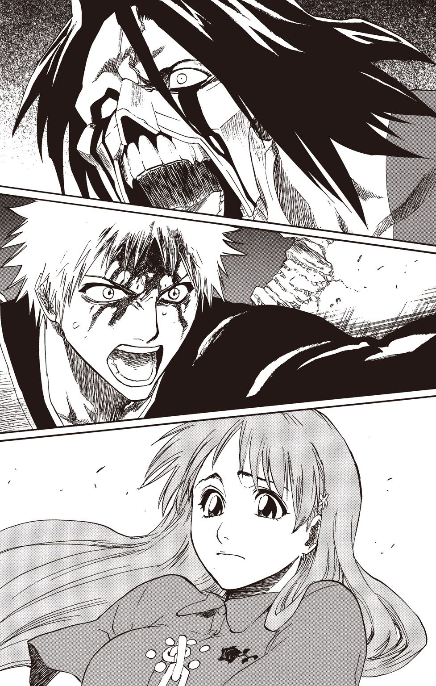
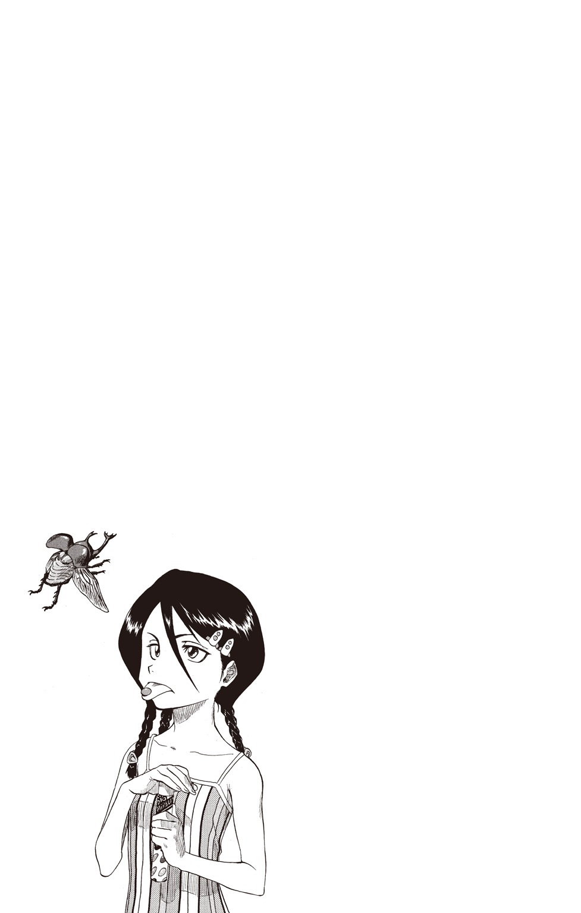

| BLEACH letters from the other side ―new edition― | |
| 久保帯人 & 松原真琴 | |
この本は縦書きでレイアウトされています。
また、ご覧になる機種により、表示の差が認められることがあります。
この作品はフィクションです。
実在の人物・団体・事件などにはいっさい関係ありません。
letters from the other side
空座町 午前二時二三分 金曜日
細く、白い月が出ている。その頼りない月光は、町にいつもより多くの闇を落としていた。
闇の中を、ひらりと黒揚羽が舞う。その、隣。
「この辺りか......」
夜に溶けるような黒衣をまとった少女が、雑居ビルの屋上......その手摺りに立ち、町を見下ろしていた。緩く風が吹いて、白い顔にかかる長い前髪を揺らす。少女は、ゆっくりと一つ、まばたきをした。
「成程......強い魄動を感じる」
つぶやき、手摺りを蹴る。
黒衣の少女は、音もなく、淡い月光の町に溶けた。
♯１
同日 空座ふれあい公園 午後七時一三分
公園の脇の道を、灰色の学生服を着た少年が歩いている。日は沈んだが、その名残で地平付近の空がまだぼんやりと赤い。
少年は、しかめっ面で歩いていた。その先には、スケートボードで遊んでいるガラの悪い若者の集団がいる。少年はそのままスタスタと彼らに近づき、その一人に迷わず蹴りを入れた。ニットキャップをかぶった男が、強烈な蹴りにうめいて路上に倒れ込む。
蹴られた男の仲間たちは、突然のことに言葉を失った。蹴った少年は、先ほどと変わらぬ不機嫌な表情で彼らを見渡し、言う。
「お前ら、ココどけ」
その言葉で、男たちはようやく状況を把握した。
「なんだァ!? イキナリ出てきて山ちゃん蹴倒しといて、その上ここをどけだァ!?」
「何考えてんだてめぇ？ 死ぬか？ あァ!?」
少年は右手で頭を搔いて、面倒くさそうにため息をついた。
【黒崎一護／一五歳】
【髪の色／オレンジ】
【瞳の色／ブラウン】
【職業／高校生】
これが彼のプロフィールである。髪と瞳の色が薄いのは生まれつきで、手を加えているわけではない。
一護は、向かってきた鼻ピアスの男の顔面を蹴り、地に伏したその頭を踏みつけた。
「お前ら全員、アレ見ろ!!」
ビシッと一護が指差した先には、白い花が生けられた水色のガラス瓶があった。倒れて割れてしまった瓶からは水がこぼれ、数枚の花びらがその水面を寂しげに漂っている。
「問一!! アレは一体なんでしょうか!?」
一護の声に、男たちがビクつく。
「ハイ！ ソコの一番臭そうなお前!!」
顎ヒゲを生やした男を指差しながら、スタスタと近づく。
「え？ お......俺？ あの......こないだここで死んだガキへのお供え......」
「大正解!!」
男が言い終わらないうちに、一護はその顔面を蹴り飛ばした。仰向けにのびた男に、残りの二人が駆け寄る。彼らが名前を呼んでも、男は白目を剝いたまま起き上がらなかった。
「問二!! じゃあ、どうしてあの花瓶は......倒れてるんでしょうか？」
「そ...それは......」
「俺らがスケボーしてて倒しちゃった...から......？」
一護を見た二人の顔から、血の気が引いていく。
いや、正確には、一護の背後に浮かぶものを、見たのだ。
「それじゃ、こいつに謝んなきゃなァ!?」
そこには、事故で死んだはずの血まみれの少女が、いた。
「いやああぁあぁぁぁぁ!! ごめんなさいもうしませんごめんなさーい!!」
彼らは同じような叫び声を上げ、倒れている仲間のことも忘れて走り去った。
――先ほど書き漏らしてしまった一行を、ここでつけ足しておこう。
【特技／幽霊が見える】
そう。黒崎一護は、幽霊が見える少年なのだ。
一護は深く息を吐いて、「こんだけ脅しときゃ、もうココには寄りつかんだろ」とつぶやく。のびているこの三人にも、全力で逃げたあの二人が詳細を伝えるだろう。
顔を上げて、隣に浮いている少女の霊を見た。
「悪かったな、こんな風に使って」
少女は、「ううん」と首を振る。両耳の上で結わえられた髪が、動きに合わせてふわふわと揺れた。顔の左半分は、血で真っ赤に染まっている。
「あの人たち追っ払って、ってお願いしたの、あたしだもん。このぐらい協力しなきゃ！」
そう言って、少女はニコリとほほ笑んだ。
「さて...と、それじゃな。新しい花は、近いうちに持ってきてやるよ」
「うん！ ......ありがとう、おにいちゃん。これで静かに過ごせるよ」
少女は、足を速めた一護の背中にそう声をかけた。死んでしまった自分をこうして気にかけてくれることが、とてもうれしかった。
「どういたしまして。早めに成仏しろよー」
少女に背を向けたまま軽く手を上げて答え、一護は家路を急いだ。
一護はふと、初めて幽霊を見たのはいつだったか......と考えてみる。しかし、明確な答えは浮かんでこない。物心ついたころには、もう当たり前のように幽霊が見えていた。一護の父は開業医で、実家と医院が同じ建物にある。そのため、一護は幼いころから人の生死を間近で見てきた。このような環境が、彼の高い霊感を養ったのかもしれない。
「ただいまァ」
ドアを開けた一護を出迎えたのは、側頭部への強烈な跳び蹴りだった。不意打ちをくらって倒れた一護が、頭を押さえつつ立ち上がり、両手を腰に当ててふんぞり返っている白衣の男をにらんだ。
「遅いっ!! 今何時だと思ってんだ、この不良息子！ ウチの夕食は毎晩七時と決まっとるだろうが!!」
我が子に容赦なく蹴りを入れたこの男こそ、黒崎家の家長・黒崎一心である。
「てめぇ！ これが必死こいて幽霊助けて帰ってきた息子に対するアイサツか!!」
「やかましい！ どんな理由があろうと、我が家の鉄の団欒を乱す者には、血の制裁を下すのみ!! それともなにか？ また自分だけ幽霊に触ったり会話したりできることを暗に自慢してんのか!? うらやましいんだよてめぇ!!」
「うるせえ！ 俺だって好きこのんでこんな体質に生まれたんじゃねぇや!!」
「もー、やめなよ二人ともー。ごはん冷めちゃうよー」
殴り合う二人を見て、一護の茶碗にごはんをよそっていた妹の遊子が振り向く。一護以上に色の薄い髪と瞳を持つ、ショートカットのかわいらしい女の子だ。
どうしてもっと仲良くできないんだろう、と思いながら、一護の席にコトリと茶碗を置く。親子喧嘩はしょっちゅうなので、遊子の対応も落ちついたものだ。
「ほっときな遊子。おかわり」
さらに落ちついて......というより、まったく相手にせず一人黙々とごはんを食べていた黒髪の少女が、遊子に空の茶碗を差し出した。彼女の名前は、夏梨。遊子と夏梨は双子の姉妹で、現在小学五年生である。
「大体この家はルールがキツすぎなんだよ!! どこの世界に健全な男子高校生を毎日七時に帰宅させる家が......」
「あ！」
怒鳴る一護を見て、遊子が声を上げた。
「お兄ちゃん、もう新しい人憑いてるよ」
「ああッ！ こいつ、いつの間に!!」
頭上を振り仰ぐと、サラリーマンの幽霊が、にへーっと一護に笑いかけた。
「祓っても祓ってもすぐコレだ!! ちくしょー!!」
頭を抱える一護を見て、夏梨が言う。
「見える触れるしゃべれる上に、超Ａ級霊媒体質の四重苦。大変だねぇ、一兄はハイスペックで」
その声からは、同情の色が微塵も感じられない。夏梨はすぐに食事を再開した。
「でもさー、ちょっとうらやましいよねぇ。あたしなんて、ボンヤリとしか見えないもん。ハッキリ見たいよ」
「別に。あたし幽霊とかそういうの、信じてないから」
遊子からおかわりをよそった茶碗を受け取った夏梨は、興味なさそうにみそ汁をすする。
「でも、夏梨ちゃんだって見えてるでしょ？ 見えないのお父さんだけだもんね」
遊子に訊かれて、夏梨が顔を上げた。
「バカ。見えようが何しようが、信じてなけりゃいないのと同じ」
冷え切ったその意見には、遊子だけでなく、一護に憑いているサラリーマンの霊さえも切ない顔をした。それにはかまわず、夏梨はテーブルに伏せてあった紙を手に取った。
「それよりさ、新しい企画考えたんだけど。聞いて。〝初夏の風とともに、幽霊と戯れてみませんか〟五月限定企画『軽井沢ゴーストピクニック』」
夏梨の提案を聞いて、遊子が、「先月はお花見だったね」と言う。
「夏梨!! 俺で金儲けしようとすんな!!」
夏梨に向かって叫ぶ一護は、不覚にも一心に背中を見せた。
「スキありィ!!」
すかさず一護に飛びかかり、腕をねじり上げる一心。一護は、いらだちのあまり、一瞬無言になる。
「どうしたどうしたぁ？ もう終わ......どわぁッ!!」
勝ち誇った一心は、ガバッと立ち上がった一護に跳ねのけられた。
「もういい！ 俺は寝る!!」
「あっ！ お兄ちゃん!!」
一護はドスドスと大きな足音を立てて階段を上っていった。
「あーあ、行っちゃったよ。お父さんのせいだからね」
一護を利用して金儲けをしようとした自分を棚に上げて、夏梨が言う。
「な......なんでだよゥ!!」
と、心外そうな顔をする一心。
「お兄ちゃん最近大変なんだからね！ 前よりたくさん霊が寄ってくるようになった、って困ってるんだから！」
遊子が両手を腰に当てて立ち、一心を叱る。
「なにっ!! お前にはそんなことまで話すのか!? あいつめ......父さんには悩みなど話してくれないくせに......！」
「あたりまえだわ。四〇過ぎてまでこんな幼稚なコミュニケーション手段しか持たんような父じゃ、あたしだって悩みなんか相談しないっての」
「なぬぅ!!」
夏梨に追い打ちをかけられた一心は、生まれたての子鹿のようなおぼつかない足取りで、壁に貼られたポスターの前に向かった。ぐずぐずと鼻を鳴らしながら、その中でほほ笑む美しい女性の顔を見上げる。
これは亡くなった妻の真咲であり、特大サイズのこのポスターは、遺影なのだ。「お花畑でほほ笑む真咲に、『真咲フォーエバー』というファンシーなロゴをあしらってみました」（一心・談）
「母さん......このごろ思春期なのか、娘たちが父さんにヤケに冷たいよ......。一体どうしたら......」
「まずそのアホみたいな遺影をはがすところから始めろ」
うなだれる一心に、夏梨は背を向けたまま、そう言い捨てた。
二階の自室へ戻った一護は、カバンを床に下ろし、先ほど一心につかまれた腕を軽く回した。
「まったく......ウチの連中は、どうしてこうそろいもそろって......」
ため息混じりにつぶやく一護の視界を、何か黒い物が、スゥ......と横切る。顔を上げると、薄い羽をひらひらと羽ばたかせ、一匹の黒揚羽が飛んでいた。
「なんだこいつ？ どこから入って......」
黒揚羽を追って振り向いた一護は、目を見開いて硬直した。
ついさっきまで誰もいなかった場所に、黒ずくめの少女が立っていたのだ。
テレビや映画でしか目にしたことのない侍のような格好をして、腰には刀まで差している。
（な......！ いつからここに......!?）
いなかったはずなのだ、誰も。窓だって閉まっている。
一護の勉強机の上に立っていた少女は、真っ黒い細袴のすそをふわりとなびかせ、床へ着地した。つややかな黒髪を揺らして、硬直する一護の前を通り過ぎる。
「近い......！」
部屋の中央でピタリと止まり、険しい表情で言った。
「近い......！ じゃあるかボケェ!!」
その背中に、一護がすこーんと蹴りを入れた。一四五センチにも満たない小柄な体が、蹴りの衝撃で前に飛び、うつ伏せのままズサ――ッとフローリングの床を滑った。
「ズイブン堂々とした泥棒じゃねぇか!! 近い、ってのはアレか!? 金庫が近いとかそういうアレか!!」
一護に糾弾された少女は、腹這いのまま、顔だけゆっくりと一護を振り返る。
「き、貴様......私の姿が見えるのか......？ ていうか今、蹴り......」
「あ？ 何ワケのわかんねぇこと言ってやがんだ？ そんなもん見えるに......」
一護の声を遮り、ダダダダッと階段を上がってくる足音。
「うるせぇぞ一護!! 二階でバタバタすんなァ!!」
バァーンとドアを開けて飛び込んできた一心は、有無を言わさず一護の背中にドロップキックをくらわせた。一護はすぐに体勢を立て直し、一心の顔面に、「やかましい!!」と後ろ回し蹴りを叩き込む。
「これがバタバタせずにいられるか!! 見ろ、こいつを！ この家のセキュリティはどうなってんだ!?」
少女を指す一護を見て、ファイティングポーズをとったままの一心が首をかしげた。
「見ろって......何を見るんだ？」
「何って、このサムライ姿の......」
親指で背後を指した一護に、指された少女が、「無駄だ」と断言する。
「常人に私の姿を見ることなどできん」
ひどく静かなその声に、一護が振り向く。
閉じていたまぶたをスッと持ち上げ、少女が言った。
「私は、朽木ルキア。〝死神〟だ」
空座ふれあい公園 午後七時四五分
......痛い、痛いよ.........。
ああ、食べられちゃう......！
オレンジの髪のおにいちゃんが、「花を持ってきてやる」って、言ってくれたのに。
すごく楽しみだったのに。
このおばけは、なに？ これに食べられちゃったら、あたしはどうなるの？
......じこのときより、たくさん、ちがでてる。
おとうさん......おかあさん......オレンジの...おにいちゃ...ん......。
♯２
黒崎家・二階 午後七時五〇分
一護は胸の前で腕を組み、自分の前に座る朽木ルキアを見た。
「......そうか。つまりあんたは死神で」
「うむ」
「その、『ソウル・ソサエティ』とかいうところから」
「うむ」
「はるばる悪霊退治にやってきたってワケか」
「その通りだ」
「よし！ 信じよう！ ......って信じられるかボケェ!!」
一護のノリツッコミに気圧されて、ルキアが一歩後ずさった。
「貴様......幽霊が見えるくせに、死神の存在は信じぬと言うのか！」
「あたりめーだ！ あいにく、死神は一回も見たことねぇんだよ。目に見えないモンは信じない主義なんでね」
一護は、自分より三〇センチほど身長の低いルキアを、胡散臭そうに見下ろす。
「親父には見えてなかったし、てめぇが人間じゃねぇってとこまでは認めてやる。ただし、死神ゴッコはよそでやれ。わかったな、クソガキ」
言いながら、彼女の小さな頭を、ぐいっとドアのほうへ押した。〝クソガキ〟という単語を聞いて、ルキアが顔色を変える。
「ほざきおったな......」
右腕を上げ、人差し指と中指をまっすぐに伸ばし、一護に突きつけた。
「縛道の一！ 塞!!」
ルキアが叫ぶ。
とたんに一護の両腕が意志に反して背中側へ回り、交差した状態で固定された。
「いてててててぇッ!! てッ......てめぇ、何しやがった......！」
何か強い力で、思い切り腕を押さえつけられているような感覚だった。足も、ピッタリと閉じたまま開くことができない。痛みと衝撃で床に倒れ込んだ一護の体を、ルキアがガシッと踏みつける。
「フフ......動けまい！ こいつは〝鬼道〟といってな。死神にしか使えぬ高尚な呪術だ！」
一護は、どうにかしてはずせないものかともがいてみたが、腕も足もピクリとも動かなかった。
「私は、こう見えても貴様の一〇倍近く生きておるのだ。それを糞餓鬼だと？」
ルキアは一護を踏む足に力を込め、グリグリと爪先をひねりながら、忌々しげに言う。
「本来なら、貴様のような輩は殺してやるのだが......一応霊法で指令外の人間を殺してはならぬことになっておるのでな。動きを封じるだけで勘弁してやる。感謝しろ、糞餓鬼」
自分よりはるかに年下に見えるルキアに〝糞餓鬼〟呼ばわりされた一護は、ギリギリと奥歯を嚙みしめた。先ほどからずっとこの縛めを解こうと力を込めているのだが、一向に緩む気配がない。
「それから」
ルキアは腰に差してある鞘から、一気に刀を引き抜いた。
「ちょっ......!!」
切っ先が、まっすぐに迫ってくる。一護は息をのんだ。
（切られる......！）
しかし、ルキアはすんでのところで刀を反転させ、柄を下に向けた。その柄の先端を、一護に憑いているサラリーマンの霊の額に押し当てる。
「い、嫌です！ わたしは......地獄へはまだ行きたくない......！」
涙目で懇願する霊に、ルキアが静かな口調で言う。
「臆するな。お主の向かう先は地獄ではない。尸魂界だ。......地獄と違って、気安い処ぞ」
柄を上げると、霊の額に、〝死〟と〝生〟を組み合わせたような文字が刻印されていた。
その文字から、円形に光が広がっていく。急速に拡大した光はサラリーマンの霊をのみ込み、二匹の黒揚羽を残して、消えた。
「ど......どうなったんだ？ 今のやつ......」
「尸魂界へ送ったのだ。〝魂葬〟という。......貴様らの言葉では、〝成仏〟と言ったかな。死神の仕事のうちの一つだ。信じる気になったかどうかは......訊くまでもないようだな」
黙ったままの一護に目をやり、ルキアが言った。
どうあがいても解けない術に、光にのまれて消えた幽霊......彼女が死神であるということを、信じないわけにはいかなかった。
「貴様のような短慮な餓鬼にも得心がいくよう、易しく説明してやる。しばし待て」
ルキアは、机の上に置いてあったＣＤを二枚持って、一護の前に戻ってきた。自分の胸元に手を突っ込み、中からフェルトペンを取り出して、ＣＤケースにさらさらと何かを書き込む。
「ああッ！ 俺のＣＤ!! てめぇ何してくれてんだ!!」
「案ずるな。水性だ」
「そういう問題じゃねぇッ!!」
わめく一護を見て、ルキアは、フンッと鼻で笑った。
「......度量の狭い男だな」
「な......っ!! なんだとてめぇ!!」
「いいから黙って聞け」
「う......ああもう、わかったよ！ 聞いてやろうじゃねぇか!!」
上手く乗せられた気がして癪だったが、黙った。ルキアは、「うむ」とうなずき、二枚のＣＤを持ち上げた。
「いいか、この世には二種類の魂魄がある」
その一方を、一護に見せる。
「一つは、〝整〟と呼ばれる通常の霊。貴様が普段目にしている〝幽霊〟というやつは、すべてこれだと断言していい」
ＣＤケースには、大きく、【プラス・いい霊】と書いてあった。
「そして今一つが、〝虚〟と呼ばれ、生者・死者の別なく襲って魂を喰らう、所謂〝悪霊〟だ」
もう一方のケースには、【ホロウ・わるい霊】と書いてある。
「我々死神の仕事は二つ。一つは、〝整〟を、先の〝魂葬〟で尸魂界へと導くこと」
ルキアは部屋の端にあるチェストを指し、「あれを尸魂界だとすると」と言って、【プラス・いい霊】と書かれたケースを振り上げた。一護の顔が、引きつる。
「おい、まさか投げるつもりじゃ......」
ビュン――――ガシャン！
「とまぁ、これが〝魂葬〟だ」
「のわぁあああッ!!」
チェストに当たりケースもろとも割れたＣＤを見て、一護が叫んだ。ルキアはそれを無視して、何事もなかったように説明を続ける。
「そして二つ目が、〝虚〟を昇華・滅却することだ。今回の私の任務はこれにあたる」
【ホロウ・わるい霊】と書かれたケースを床に置き、拳でドスッと叩いてみせた。パキパキッと嫌な音がして、ケースに蜘蛛の巣状のひびが入る。
「ててててめぇッ!! どういうつもりだ!? どういうつもりだぁッ!!」
「まぁ......これで〝糞餓鬼〟の一件は忘れてやろう」
ルキアはそう言って、勝ち誇ったように笑った。
「クソ......！ 根に持ちやがって......!!」
悔しげにつぶやいた一護は、ふと疑問を感じてルキアを見た。
「......ちょっと待て。お前がその任務でここに来たってことは、その〝虚〟ってのが今この近くにいるってことか？」
「そうなるな」
事もなげに言ったルキアに、一護が声を荒らげる。
「バ......ッ！ バカかてめえ!? じゃあこんなとこウロウロしてねぇで、さっさとそいつ片づけに行けよ！」
それを聞いたルキアの顔に、初めて焦りの色が浮かんだ。
「いや、それが......先程から、どういうわけかそいつの気配をまったく感じなくなってしまったのだ」
「なんだよソレ、どういう......」
ウオォオオオオン!!
（な......なんだ、今の......？）
一護には、その咆哮が、はっきりと聞こえた。
「まるで、何か大きな力に感覚を阻害されているような......」
しかし、ルキアはそれにまったく気づかなかったらしく、しゃべり続けている。
「おい！ おい、死神っ!!」
一護の呼びかけに、「なんだ？」とルキアが振り向いた。
「なんだ、じゃねぇ!! 今のスゲー声聞こえなかったのか!? ありゃ一体なんの声だ!?」
「凄い声？ そんなもの、いつ......」
ゴァオオオオァァオオン!!
怪訝な表情で一護を見たルキアの耳にも、その声は、届いた。
（聞こえた......!! これは間違いなく〝虚〟の声!! だが、まだ何か......見えないフィルターがかかったように聞こえる......。一体なんなのだ、この感覚は!? ......いや、それよりも）
低い位置から自分を見上げている、茶色い瞳の少年を見た。
（こいつはこの〝声〟に、死神よりも早く気づいたというのか......!?）
その時、階下から、「きゃあっ!!」という悲鳴と、食器の割れる音が聞こえてきた。
「遊子の声だ......！」
ルキアは踵を返し、ドアへ向かう。
「おい待てよ！ どこ行くんだ!? さっきの声が、やっぱり〝虚〟ってのの声なのか!?」
動けない一護は、精一杯首を伸ばして叫んだ。
「そうだ！ 私が片づけてくる!! 貴様はここにいろ!!」
「バカ言え!! 襲われてんのは俺の家族だぞ!? 解けよこの術!! 早く!!」
「何を言っている!? 貴様が来ても何もできん！ 私に任せておとなしくここに居ろ！ いいな！」
最後に一度振り向いて言い、ドアノブを回した。
「な......！」
ルキアの黒衣が、階下から上がってくる力に押され、フワ、と持ち上がる。
（なんという霊圧だ......！ これに今まで気づかなかったとは......。私は一体、どうしてしまったというのだ!?）
思わず顔をしかめたルキアは、階段のほうから聞こえてきた物音に目を向けた。四つん這いになって階段を上がって来たのは、額から血を流した、夏梨だった。
黒崎家・一階 午後八時二分
「ちくしょう、あいつめ！ 自分だけ幽霊と楽しそうにィ......!!」
二階からかすかに聞こえてくる一護の声に、一心がそわそわと席を立ったり座ったりする。
「お父さん、お行儀悪いよ！ ちゃんと食べないなら片づけちゃうからね！」
大きなトレイの上に一護の分の夕飯を並べていた遊子が、一心を叱った。夏梨はその様子を眺めながら、（ホントしょーがねーな、ヒゲは）と思う。
一護には及ばないものの、夏梨にも高い霊感がある。そのため、一心や遊子のように、一護の霊感が強いことをうらやましいとは思わない。
（ユウレイが見えたって、面倒なだけなのになァ......）
見えると、放っておけなくなる。だから面倒なんだ、と夏梨は思う。
「夏梨ちゃん、もう一杯おかわりする？」
空になっている夏梨の茶碗を指して、遊子が言う。
「イヤ、もういらな......」
ウオォオオオオン!!
箸を置いた夏梨の下腹に、何かが吠える声が、響いた。
（......なんだ、今の!?）
さっと下腹を押さえた夏梨を見て、一心が身を乗り出す。
「どーした、夏梨？ お腹痛いのか？」
「大丈夫？ 夏梨ちゃん」
トレイを持ってリビングを出ようとしていた遊子も、戻ってきて心配そうに夏梨を見た。二人には、あの咆哮が聞こえなかったようだ。
「よォーし！ 父さんが優しぃ～くさすってやろう!!」
夏梨は伸びてきた一心の手を払いのけ、その顔面に拳を叩き込む。
「ギャ――ッ！ 鼻がぁ！ 父さんの鼻がおもしろい形に―――ッ!!」
一心が鼻を押さえて立ち上がった瞬間、今度はすぐ近くから、声がした。
ゴァオオオオァァオオン!!
リビングの壁に、轟音を立てて大穴が空いた。
吠えながら、何かが家の中に入ってくる。振り向こうとした一心は、その〝何か〟に背中を打たれ、壁に叩きつけられた。床に落ちたその背中が、血で真っ赤に染まっている。
「なに......？」
その巨大な何かは、突然のことに呆然としている遊子に腕を伸ばし、ぐっと体をつかんだ。持っていたトレイが床に落ち、一護用の食器が割れ、中身と共に散らばった。
「きゃあっ!!」
遊子の悲鳴を聞いて、あまりのことに硬直していた夏梨が走り出す。遊子をつかんでいるそれに、跳び蹴りを放った。しかし、蹴りは当たらず、夏梨の体は弾き飛ばされて床に落ちた。衝撃で、一瞬息が止まる。
顔を上げると、額を生温かい液体がつたってきた。着けていたリストバンドでぬぐう。そこには、べったりと血がついていた。床に転がっていた壁の残骸で切ったらしい。
「夏梨ちゃん......！」
遊子の声に、夏梨が顔を上げた。巨大な何かにつかまれたままの遊子を見上げる。
遊子はまっすぐに夏梨を見て、真剣な顔で、小さくうなずいた。
遊子と夏梨は双子だが、まったく似ていない。見た目も性格も趣味も違う。そのことで、二人をからかう者もいた。「お前ら、ほんとは姉妹じゃねーんだろ？」と、何度言われたか知れない。
しかしその時、夏梨には、遊子の考えていることがはっきりとわかった。
まるで、そう言っている声が、実際に聞こえたように。
〝お兄ちゃんに、教えてあげて......！〟
遊子は、そう言っている。
夏梨は立ち上がろうと足に力を込めた。が、激痛が走り、立つことはできなかった。
（ちくしょ......行くんだ......！）
歯を食いしばり、腕の力で床を這い進んだ。食器やコンクリートの破片が、むき出しの細い腕に刺さる。それでも、できるだけ急いで床を這った。
（早く......早く一兄に......！）
ただ、それだけを思って。
廊下を這い進んできた夏梨が、一護の部屋の前で止まる。ルキアは、夏梨が這ってきた床に血痕が残っているのを見て、唇を嚙んだ。
「一兄......平気......？」
震えるその声を聞いて、一護が、「夏梨!!」と名前を呼ぶ。
顔を上げた傷だらけの妹と、目が合った。
「よかった......こっちには来てないんだ......」
夏梨は、兄の無事な姿を見て、弱々しくほほ笑む。
「突然なんだ......突然父さんが背中から血、流して倒れて......あたしも遊子も、何かでっかいやつに襲われて......それであたし、一兄に知らせなきゃ、って」
顔を起こしているのに疲れたのか、夏梨は腕に額をつけて、はぁ、はぁ、と荒く呼吸した。
「なんなんだろ、アレ......あたしには少し見えたけど、父さんも遊子も見えてないみたいだった。......一兄は......あいつに見つかる前に...早く......逃げな...よ」
一護に向けられていた瞳に、ふっとまぶたが降りた。ルキアが傍らに膝をつき、夏梨の口元に手をかざす。弱いが、確かに息をしていた。
「大丈夫、気を失っただけだ。魂もまだ......」
背後から聞こえた、ビキッ、という音に、ルキアが振り向く。先ほどまでうつ伏せに転がっていたはずの一護が、上体を起こしかけていた。
「よせ！ 何をしている!?」
一護は、体を押さえつける鬼道の力を、強引に破ろうとしていた。全身が震えるほどに力を込めるたび、木を引き裂くような音が上がる。
「やめろ！ それは人間の力では決して解けん!! 無理をすればお前の魂が......」
「ぐあああぁあぁ!!」
一護が吠えた。その声に、バキィ、という鈍い音が重なる。
見開かれたルキアの黒い瞳に、立ち上がった一護の姿が映った。解けないはずの鬼道を解いた、少年の姿が。
（莫迦な......！ 人間が鬼道を自力で解くだと......？ そんな莫迦な話、聞いたこともない!!）
一護は壁に立てかけてあった金属バットをつかみ、ルキアの脇を駆け抜けた。その体に引かれるように、ルキアの黒髪がなびく。
「待て!!」
飛び降りるような勢いで階段を下りていく一護には、ルキアの声など耳に入らない。
（奴は一体......!?）
その後ろ姿を見つめるルキアの首筋を、つぅ、と冷えた汗がつたった。
♯３
リビングを見た一護の頭に、〝惨状〟という言葉が浮かんだ。
血を流して壁際に倒れている父。真っ二つに割られたダイニングテーブル。ひっくり返ったトレイと、床に散らばった夕飯。割れた食器の破片。そして......壁に空いた、大きな穴。
穴の外で、動くものがあった。
異様な、その姿。
（こいつが......〝虚〟......!!）
室内をのぞき込むその顔には、奇妙な模様の入った白い仮面が被さっている。丸く空いた目の部分は、ただただ白く光るのみで、表情がない。その空虚な光は、どうしようもなく一護の体をすくませる。
（〝悪霊〟っていうから、人の姿をしてるとばかり思ってたのに......バケモノじゃねぇか......!!）
三メートルを優に超える巨体には、地につくほど長い腕と、それとは対照的な、短い足がついている。
胸の真ん中にぽっかりと空いた孔から、細い月が見えた。この状況にそぐわない、静かに輝く、美しい月。
ガチガチと奥歯が鳴り、金属バットを持つ手が震える。
（くそ......ッ！ なに震えてんだ俺は!!）
震えを止めようと、一護は自分の腕を強くつかみ、歯を食いしばった。
（怖くねぇ！ あんなやつ怖くねぇぞ!! 幽霊なんて腐るほど見てきたんだ！ あいつも、しょせん幽霊じゃねぇか!!）
眉間に力を込めて、虚をにらむ。と、虚がゆっくりと右手を持ち上げた。その手には、淡い茶色の髪をした子供が握られていた。
「遊子!!」
苦しげに細められていた目が、一護の声に反応して、大きく開く。
「おにいちゃん......！」
頰に、大きな切り傷ができていた。すくんでいた体に怒りがみなぎり、一護はバットのグリップをきつく握って走り出した。
「ああああぁぁぁ!!」
叫んで、バットを振り上げる。
間合いを詰めた一護に、虚が左腕を、ビュンッと振った。真横から一護に迫る、巨大な拳。
とっさにバットを横にして防御したが、虚の力はあまりにも強く、一護の体は黒崎家の敷地内から車道まで吹っ飛んだ。
固い路面に背中から落ちた一護は、咳き込みながらも、すぐに起き上がる。攻撃を受けた金属バットは、グリップから一五センチほどを残して折れてしまい、もう使えそうになかった。
（ムチャクチャじゃねぇか......!!）
一護は、虚の圧倒的な力を目の当たりにして、息をのんだ。風圧で切れたこめかみから流れる血を手の甲でぬぐい、バットを放る。カラン、と高い音を立てて、地面へ落ちた。
今まで当たっていた街灯の明かりが、不意に翳る。
ブン、という音に顔を上げると、虚がその腕を、一護目がけて振り下ろそうとしていた。
全身から、血の気が引いていく。
（やられる......!!）
そう、思った。
ひらり、と。
一護の視界に舞い込んだ、黒い姿。
黒揚羽を思わせるそれは、あの死神だった。
一護に迫っていた虚の右腕に、ルキアが振り下ろした白刃が中ほどまで食い込む。骨で止まった刃を引き抜き、噴き出す血を避けて着地した。
虚は痛みに咆哮を上げ、右手を開いた。つかまれていた遊子が宙に放り出され、放物線を描いて落下する。その体を、一護がしっかりと抱きとめた。
「遊子！ 大丈夫か、おい!?」
「狼狽えるな小僧！ 貴様の家族は、まだ誰一人魂を喰われてはおらん！」
遊子の体を揺する一護を虚から守るように、ルキアがその前に立って叫ぶ。
「誰一人......？」
「ああ。あそこに倒れている父親もだ！」
虚の血を振り落とし、ルキアは両手で刀を構え直した。切られた腕の痛みに悶えている虚を見据える。
「ちょっと待てよ！ 虚ってのは、魂食うために人を襲うんじゃなかったのかよ!? それじゃ、あいつはなんのためにウチの連中を......」
虚の、内臓を搔き回すような咆哮に負けぬよう、一護は声を張り上げた。
「......虚は、より霊的濃度の高い魂を求めて彷徨っている。そのために無関係な人間を襲うというのは、間々あることだ」
背を向けたまま、ルキアは言葉を続ける。
「私は、死神が見え、鬼道を自力で破る人間など......それ程に霊的濃度の高い魂を持った人間などは......今までに見たことも聞いたこともなかった」
ルキアが振り向き、一護を見た。
「恐らく、奴の狙いは.........貴様だ」
一護は目を見開き、うつむいた。抱いている妹の、血で汚れた服が目に入る。遊子のお気に入りだった淡いピンク色のパーカーが、赤黒い血によって、ひどく汚れていた。
一護は、手のひらに爪が食い込むほど、強く拳を握る。
「それじゃ、これは俺のせいだってことか......？ 親父がそこで死にかけてんのも、夏梨や遊子が血だらけになってんのも......全部」
ルキアは、無神経なことを言ってしまった、と、構えていた刀を下ろし、一護に向き直った。
「私は、別にそんなつもりで言ったのでは......」
言いかけた彼女の小さな体が、まばたきの後、道路脇のブロック塀に叩きつけられていた。
「かは......っ！」
衝撃で肺から押し出された空気が、わずかにルキアの声帯を揺らす。
「死神っ!?」
一護には、一瞬、何が起きたのか理解できなかった。自分の正面に立つ虚と崩れた塀を見て、ようやく状況をのみ込む。
一護は、遊子をそっと地面へ下ろした。
「......いいかげんに...しやがれ......!!」
少年は、立ち上がった。
握った拳が震えているのは、恐れからではない。虚に対する強い怒りが、彼の体を震わせていた。
それは、同時に、皆を守れない自分自身への怒りでもあった。
「よォ......お前、俺の魂が欲しいんだろ......？」
虚は、答えるように舌なめずりをした。ジュル......と、濡れた音が響く。
「だったら、俺とサシで勝負しろ!! 他の連中は関係ねェ!! 俺を殺して奪ってみろよ!!」
そう言い放った一護を見て、虚はうれしそうに目を細め、グパァ、と口を開いた。
「莫迦者が......！」
瓦礫をのけて立ち上がったルキアが、一護のもとへ駆ける。
（死なせはしない......!!）
強くそれだけを思い、ルキアは地面を蹴った。
虚は亀のように首を伸ばし、大口を開けて一護に迫る。
しかし、その口が捉えたのは――ルキアだった。
「死神!!」
真っ赤なしずくが、宙を舞う。
体から鮮血を撒き散らし、ルキアがガクリとその場に崩れ落ちた。彼女は自ら虚の口に飛び込み、前面に構えた刀で、その口元を深く斬りつけたのだ。
虚は、「ギャアアァアアァァァ!!」と吠え、転がるようにして二人から離れた。街灯二つ分距離をおき、傷口を押さえて頭を振りながら、うなり声を上げる。イヤイヤ、と首を振る子供のような動きだった。
一護は、倒れたルキアの傍らに片膝をついた。荒い呼吸を繰り返すルキアは、「この...たわけが......！」と、切れ切れに言う。
「貴様の力では敵わんということは、先刻承知済みだろう......！ それとも、自分の魂さえくれてやれば、すべて済むとでも思ったか......？ どちらにしろ...たわけだ......！」
ルキアは路面に手をつき、ゆっくりと体を起こした。
血溜まりが、できていた。
「......悪かった。俺はただ......」
「気にするな......と言いたいところだが......残念ながら、今の私では奴とは戦えそうもない......このままでは、全員、奴の餌になるのを待つばかりだ......」
出血量を見れば、ルキアがこれ以上戦えないことは明白だった。
（俺のせいだ......！ 俺のせいで、みんな死んじまう......!!）
ルキアは、自責の念で体を震わせる少年を見て、ゆっくり一度、まばたきをした。
「家族を助けたいか......？」
「助ける方法があるのか!? 教えてくれ!!」
身を乗り出した一護に、静かにうなずく。
「一つだけある。......いや、正確には、一つしかないと言うべきか......」
ルキアは震える指で、血溜まりから刀を拾い上げた。血まみれの刀身を袖でぬぐい、切っ先を一護に向ける。
「貴様が......死神になるのだ!!」
「な......何言ってんだ。そんなことが......」
「できる！ 貴様がこの斬魄刀を胸の中心に突き立て......そこに私が死神の力の半分を注ぎ込むのだ。そうすれば貴様は一時的に死神の力を得、奴とも互角に戦えるはずだ！」
白い刀身には、ルキアの姿が映り込んでいる。多く血を流したせいか、青白く見えるほど、顔色が悪い。
「そんなことして、本当に......大丈夫なのか？」
「......わからん。もちろん貴様の霊的資質の高さを見込んでの計画だが......成功率は高くはないし、失敗すれば......死ぬ！ だが他に方法はないのだ!! ......迷っている暇もな」
それでも一護は、すぐに返事をすることができなかった。
ルキアはこの〝斬魄刀〟で、胸を貫け、と言っているのだ。
「......おにいちゃん...どこ......？」
迷う一護の耳に、遊子の小さな声が届いた。
最後に見たのは、わたしを抱きとめてくれた、お兄ちゃんの髪の色。
頭の中が真っ白になった。
そこに、ぼやーっと色が浮かんでくる。
夢を......見る。
お気に入りの服を着て、わたしは家までの道を歩いていた。コスモスみたいな、薄いピンク色のパーカー。お母さんがよく着ていたカーディガンの色に似た、きれいなピンク。
最後の角を曲がったら、家の前にあるマンホールのふたが、ばーん！ と、飛んでいった。中から、真っ黒いもくもくしたものが出てきて、オバケの形になる。体が、びゅーん、と伸びて、わたしをぐるぐる巻きにする。
きゃあ！ って、叫んだ。
ぎゅう、と締めつけがきつくなる。息が、うまく吸えない。
苦しい......！
「遊子！」
......お兄ちゃん？
「遊子!!」
お兄ちゃん、どこ......？
「遊子っ!!」
だめだよ、お兄ちゃん！ こっちに来ちゃ、だめなの！
お兄ちゃんはまだ見つかってないから、逃げて!!
早く、逃げて......!!
遊子の唇がかすかに動き、声が、漏れる。
「来ちゃだめ......危ないよ...早く逃げて......！ おにい...ちゃん......！」
一護はうつむいて、ギリッと奥歯を嚙みしめた。
（ちくしょう......！ どうしてウチの連中は、どいつもこいつも、自分が死にかけてる時に俺の心配なんかしてんだよ......！ 自分のことでビビってる俺が......バカみたいじゃねぇかよ!!）
顔を上げた少年の目に、もう迷いはなかった。
「刀をよこせ、死神！ てめぇのアイデアにのってやろうじゃねぇか！」
ルキアは、座ったまま一護を見上げる。
良い目をしている、と思った。
「〝死神〟ではない。朽木ルキアだ」
「......そうだったな。俺は黒崎一護だ。これが最後のアイサツにならないことを......祈ろうぜ」
ルキアは刀を杖代わりにして立ち上がり、ゆるゆるとその刀身を持ち上げた。黒衣が血を吸って肌に張りつき、動きを鈍らせている。
今まで顔を覆ってうめいていた虚が、長い舌で傷をべろりと舐め、咆哮を上げてこちらを見た。攻撃の隙を、うかがっているのだ。
「〝虚〟が来るな......急がないと」
一護は、ルキアに近づき、自分に向けられた細い刀の鍔をつかむ。
ごくり、と、唾を飲んだ。
「......いくぞ」
「ああ」
切っ先を一護の胸の中心に向け、二人は静止する。
それを見て、ここぞとばかりに虚が駆け出した。見る見るうちに距離が詰まっていく。
一護は、息を止めた。
彼が体を進めると同時に、ルキアがその胸を、貫く。
二人を包む、白い閃光。
その光から現れた、弾丸のような、黒い姿。
それは、まぶしさに目を細める虚の左腕を軽々と切り飛ばし、黒衣をひらめかせて着地する。路面には、切られた腕と傷口を繫ぐように、点々と血痕がついていた。
切り落とされた腕の前に立つ、黒衣の者は――
死神となった、黒崎一護だった。
「莫迦な......半分のつもりが、すべての力を奪い取られてしまった......！」
地面に座り込んだルキアは、虚と対峙している一護を見て、ある感覚に囚われていた。何か大きな力に感覚を阻害されているようだと感じたあの時と、同じだった。
（あれは、こいつだったのだ！ あの部屋には、こいつから発せられる霊圧が満ちていた。それが私の感覚をことごとく混乱させていたのだ......！）
片腕を失った虚が、バランスの悪い上体をぐらつかせながら、一護のもとへ走る。
（死神が見える人間など見たことがない！ 鬼道を破る人間など見たことがない！）
一護を踏みつけようと、虚が足を振り上げた。一護は、身の丈ほどもある大刀を薙ぎ、それを切り飛ばす。
（個々の死神の霊力に呼応して姿を変える斬魄刀が......あんなに巨大になったところも、見たことがない......!!）
巨体を支えられなくなった虚の体が、一護のほうへ倒れてきた。なおも一護を喰らおうと、裂けそうなほど口を開いている。
「ウチの連中に手ェ上げた罪を思い知れ！ サカナ面!!」
一護は、両腕で高く掲げた斬魄刀を、その顔目がけて一気に振り下ろした。
両断された虚は、ぼろぼろに崩れ、消し飛ぶ。
ルキアは目を見開き、地に食い込んだ巨大な斬魄刀と、朝焼け色の髪をした少年を見つめた。
（こいつは、本当に......一体、何者なのだ......？）
彼のプロフィールを、訂正しなければならない。
【黒崎一護／一五歳】
【髪の色／オレンジ】
【瞳の色／ブラウン】
【職業／高校生・死神】
「いてぇ......どういうことだ、一護ォ......！」
「いたいよぅ......お兄ちゃん......」
ゾンビ化した一心と遊子が、ズルズルと足を引きずり、一護に迫ってくる。一心の頭頂部からはプシューッと血が噴き出し、遊子の左腿の肉は喰いちぎられ、ドバドバーッと血があふれていた。
「お前が死神になったら、俺たちを助けられるんじゃなかったのかァ～!?」
「だ !!」
!!」
二人は倒れ込み、一護の袴をつかむ。彼はダラダラ汗を流しながら、背後に立つ朽木ルキアを振り返った。
「すまん！ やっぱり手遅れだった！」
ルキアは、軽い調子で言った。
「なんだとてめぇ!? そんじゃ俺、死に損じゃねぇかッ!!」
額に血管を浮かべて叫ぶ一護の声に、誰かの声が、重なる。
「グッモ――――ニンッ!! イッチゴ――――ッ」
目を開いた一護の視界に映ったのは、派手な柄の、靴下だった。
♯１
黒崎家 午前七時ちょうど 土曜日
一護は即座に寝返りを打ち、一心の放ったドロップキックをかわす。寝起きであるにもかかわらず、彼の動きにはキレがあった。このような起こされ方には慣れているのだ。
渾身の一撃を空振った一心は、フローリングの床に勢いよく頭をぶつけた。
「ギャ―――」
野太い悲鳴が上がる。
「てめぇ......朝っぱらから息子の寝首かこうたぁいい度胸じゃねぇか......！」
一護は、一心の顔面を鷲づかみにして、指先にググググッと力を込めた。
「ぐおぉ......！ やるな、息子......！ お前に教えることは、もう何もない......ッ!!」
くぐもった声で、一心が言う。
一護は、一心の体に昨日負ったはずの傷が見あたらないことに気づいた。
「お前......ケガはどうした？」
「ケガ？ なんだそりゃ？ 俺がいつケガなんかしたんだ？」
「......何？」
一心が噓をついているようには、見えなかった。
一護は父親を残して階段を駆け下りる。リビングの壁には、昨日見たのと同じ、大きな穴が空いていた。
（やっぱ、夢じゃなかったんだよな......？）
一護は、穴から差し込む朝日のまぶしさに目を細めた。穴の外でしゃべっていた遊子と夏梨が、一護の姿を見て家の中へ戻ってくる。二階から下りてきた一心もそこに加わった。
「しっかし奇跡だよな！ トラックが家に突っ込んで、一家全員無傷なんて！」
「それでも誰一人起きてこなかった、ってことのほうが奇跡だけどね！ お兄ちゃん、ごはんできてるよ」
「何言ってんの。おかげで犯人とり逃がしちゃったんでしょ！」
一心は先ほど確認したが、遊子も夏梨も、まったくの無傷だった。
「大丈夫！ そのうち犯人が謝りに来るさ！」
「来るわけねーだろ！」
とことん能天気な父の尻を、夏梨が思い切り蹴っ飛ばす。
「ギャ――!! 割れた！ 尻が割れた――ッ!!」
「元から割れてんだろ！」
「横にだ！ 今のは確実に横に割れたッ!!」
「割れるか!!」
「二人とも、もうやめてよー！ ご近所に迷惑だよ！」
いつも通りに、三人のコントのような会話が続く。家に残った傷跡以外は、普段とまったく同じ光景だった。
（どういうことだ......？ 全員、傷はキレイに消えてるし......家のダメージは事故のせいだと思い込んでる。死神流のアフターケアってやつか......？）
険しい顔で黙り込んでいる一護の袖を、くいっと遊子が引いた。
「早く食べないと遅刻しちゃうよ？」
「ん？ ああ......」
曖昧な返事をする一護を見て、遊子が、「どうしたの？」と首をかしげる。
「いや、なんでもない。......メシどこ？ 食うよ」
「うん！ こっちは散らかってるから、診察室のほうに用意してあるの！」
そのまま、遊子に袖を引っ張られて歩く。
（あいつは......尸魂界とかいうところへ帰ったのか......）
一護は、黒髪の小さな死神のことを思った。
♯２
同日 空座第一高等学校 午前一〇時四三分
三階、一年三組の教室。クリーム色のカーテンが、ゆるやかに揺れている。
開け放たれた窓から入ってくる風に、同じように髪を揺らしている少女がいた。飴色の長い髪が、日差しを受けて柔らかく光っている。
彼女の名前は、井上織姫。一護のクラスメイトである。
「は――っ」
織姫は窓際に寄せた椅子に座り、天井を見上げてため息をついた。読みかけの本を膝にのせたまま、ぼんやりと上を向いている。本のタイトルは、『芸人大図鑑』。井上織姫は、お笑いをこよなく愛する少女なのである。
「こらァ！ 口あいてるぞ！ いい若いモンが、昼間からボーッとして！」
織姫は、両手を腰に当てて隣に立った少女を見上げ、「たつきちゃん」と名前を呼んだ。
一五七センチの織姫より少し背の低いこの少女は、有沢竜貴という。一護のクラスメイトで幼なじみでもある彼女は、空手二段を取得しており、すさまじく強い。短く切られた黒髪が、さっぱりした性格の彼女によく似合っていた。竜貴は自分の漢字がかわいくないことを気にしており、名前を書く時はいつも、〝有沢たつき〟とひらがなで書く。
「遅いね、一護！」
「え？」
たつきは前の席の椅子を反転させ、織姫と向かい合って座った。直射日光を受けていた座面の温かさが、スカートの布越しにつたわってくる。
「一護のこと考えてたんでしょ？」
「ち、ちがうよ！」
織姫が慌てて否定する。しかし、頰にさした赤みがそれを肯定していた。織姫のこんな様子を見ていると、たつきは心底不思議な気分になる。
「ねぇ織姫。あんた一体、あれのどこがいいの？ ブアイソだし、髪はヘンな色だし、ガキだし、短気だし......正直、あんたみたいな巨乳美人なら、もっと上を......」
「おもしろいところ！」
ニカッと笑って、織姫は即答する。
「へ？」
「あたしはあの、いつもしかめっ面してる黒崎くんの顔を思い浮かべるだけで......」
織姫は目を閉じ、一護の顔を思い浮かべているらしかった。その表情が見る見るうちに緩んでいき、最終的に、「ブプ――ッ!! 最高!!」と、吹き出すに至った。
「そ......そうかなぁ」
大親友のたつきにも、織姫の脳内でどんな妄想が繰り広げられたかまでは、読めないようだ。
「今日、休みかもしんないよ。一護」
織姫の隣の席に座った少年が、ヘッドフォンをはずしながら言った。彼は、小島水色。間違いなく同級生なのだが、顔立ちが幼く背も低いので、たつきや織姫よりも年下に見える。名前と同じく、顔もかわいらしい少年だ。
「休みって、どういうこと？ そういや小島、いつも一護といっしょに来てるよね」
たつきが問う。
「うん。今朝も寄ったんだけど、家にでっかい穴が空いててさ。なんか、夜中にトラックに突っ込まれたって、オジサンが言ってた」
水色は、「こーんなの」と、穴の大きさをジェスチャーして見せた。
「トラックぅ!? じゃあ何？ あいつケガしたの!? それとも死ん......」
「でねえよ」
たつきの後頭部にカバンをぶつけて言葉を遮ったのは、ようやく登校してきた一護だった。
「ウチの連中は全員無傷だ。残念だったな」
いつも通りのしかめっ面で現れた一護に、織姫が、大好物を前にした子供のような笑顔で、「黒崎くん！」と声をかけた。
「お......ッ、おおおおおはよう！」
「お......？ おうっ、今日も幸せそうだな、井上」
織姫の気持ちにまったく気づいていない一護は、彼女の喜びように少々戸惑いながら、机にカバンを下ろした。水色のすぐ後ろが、彼の席である。
「来たんだね。家の修理、手伝ってたの？」
「まあな。......三限は？」
椅子を引いた一護に、水色が、「現国」と答えた。
「越智さんか。まー、あの人ならゴチャゴチャ聞いてこねーだろ」
現代国語を担当している越智美諭は、さばさばした性格のつき合いやすい女性教諭だ。このクラスの担任でもある。
「貴様......あなたが黒崎くん？」
座ろうとした一護に、右隣の席の少女が声をかけた。
「よろしく！」
さわやかにあいさつをした少女は――昨日の、死神だった。
「彼女、今日から来た転校生の朽木さん。こんな半端な時期だけど、家庭の事情で急きょ引っ越してきたらしくて......」
「てッ......てめぇ、なんで......！」
混乱する一護の頭には、水色の説明はほとんど入ってこなかった。変な汗をかいて動きを止めた一護を見て、「どうしたの？」と水色が首をかしげる。
「黒崎くん。私、まだ教科書とかないの。きさ......あなたのを、いっしょに見せてもらってもいいかしら？」
ルキアはにこやかにほほ笑んで、一護のほうへ、スッと手を差し出した。
『さわいだら殺す』
彼女の小さな手のひらには、マジックでそう書かれていた。
「ね！」
と、笑顔で念を押すルキア。
（ど......ッ どういうつもりだこの野郎......ッ!!）
絶句した一護は、心の中で、そう叫んだ。
三時限目が終わってすぐ、一護は、音の壁にぶつかるのではないかと思うほど素早く、ルキアを校舎裏へ連れ出した。校舎内の喧噪も、ここまで来るとかなり薄れる。
「どこまで行くつもり？ こんな人気のないところに連れ込むなんて......私、何かされるのかしら？」
遠のいていくざわめきを聞きながら、ルキアが前を行く一護に声をかけた。
「その気色悪ぃしゃべり方はやめろ！」
「気色悪い？ 心外ね。一晩で修得したにしては上出来じゃなくて？」
ずんずん歩いていた一護が、立ち止まって振り向く。
「うるせ！ どういうつもりか説明してもらおうか！」
「......説明？」
ルキアも、足を止めた。
「そうだ！ てめぇの仕事はもう済んだんだろ!? それが、なんでウチのクラスに潜り込んでる？ 尸魂界とかいうところに帰ったんじゃなかったのかよ!?」
「たわけ！ 尸魂界に戻れるのは死神だけだ！ 今の私には、あそこへ戻る術がない」
「あん？ どういう......」
ルキアは、ゆっくりとまばたきをして、一護を見た。
「私が......死神の力を失ったからだ！」
「で......でも、俺はもう死神じゃねぇぞ!? 着物じゃねぇし。どこ行ったんだ、その〝死神の力〟は？」
「お前の〝中〟だ。お前の〝肉体〟ではなく、〝魂〟が死神化しているのだ」
一護は、信じられない思いで胸に拳を当てた。昨晩の記憶が、生々しく蘇る。
自分の胸に潜り込む、冷えた刀の感触。
「とにかく！ 昨夜のあの時、私の力は殆ど貴様に奪われてしまったのだ！ 私に残っているのは、わずかな鬼道を使う力のみ......。今もこうして義骸に頼らねばならん程だ！」
ルキアは不服そうな顔つきで、自分の胸元に手を当てた。
「ギガイ......？」
「緊急用に我々死神に支給されている、仮の肉体のことだ。極度に弱体化した死神は、これに入って力の回復を待つのだ」
「その体がそうなのか？ 人型なのか」
「そうだ。弱体化した死神は、虚に狙われやすいからな。人間のふりをしている」
〝義骸〟と呼ばれるその体は、どう見ても人間そのものだった。
（だから、クラスの連中にもこいつの姿が見えてたのか......）
わずかな風にそよぐ黒髪も、日の光に収縮する瞳孔も、とても作り物には見えない。尸魂界の高度な技術力をうかがわせる。
「で？ その弱りきった死神サマが、俺になんの用だ？」
「それだ！ ......では、本題に入ろう。貴様にはこれから、私の力が戻るまでの間、死神としての仕事を手伝ってもらう！」
ルキアは体を反らせ、声高にそう宣言した。
「......あァ!?」
「当たり前だろう。今、死神の力を持っているのは貴様なのだから。もちろん、私が補助はする。......言っておくが、貴様に断る権利はないぞ。元はと言えば......」
「断る！」
一護は単刀直入に言い、両手でビシッと×を作った。
「......なんだと？」
「断るって言ったんだ！ あんなバケモノと戦うのなんて、二度とゴメンだ」
ヒラヒラと手を振って、ルキアに背を向ける。
「ちょ......っ、ちょっと待て！ 貴様......」
「昨日は！」
ルキアにその先を言わせず、一護は話を続けた。
「昨日、俺があんなのと戦えたのは......襲われてたのが俺の身内だったからだ。見ず知らずの他人のために、あんなバケモノとなんて戦えねぇ！ 俺は、そこまでやれるほどできた人間じゃねぇんだよ!! 期待を裏切るようで悪いけどな！」
鋭い痛みと、血の匂い。そして......吐き気をもよおすほどの、恐怖。脳に刻み込まれた感覚は、一護の心に深い爪痕を残していた。
「......そうか」
ルキアにも、それはわかっていた。このような子供に責務を負わせることを心苦しく思い、任務を全うできなかった己の不甲斐なさを、心から恥じていた。
......しかし、今の彼女には、こうするより他に道がないのだ。
「ならば、致し方ない！」
ルキアは、甲に髑髏のマークが入った手袋・魂手甲を素早く右手に装着し、背を向けている一護に駆け寄った。
「何を......!?」
振り向いた一護の顎に、ルキアが思い切り掌底をくらわせる。しかし、その手は一護の実体をすり抜け、死神化した彼の魂を肉体の外へ押し出した。魂の抜けた体が、糸を切られた操り人形のように、ばたりと地面に倒れる。
「おわあッ!? なんだこりゃ!? 魂が抜けてやがる!!」
尻餅をついたまま、一護は死神の姿になっている自分を見た。少し離れたところで微動だにせず横たわっている自分の体に、「おいっ！ しっかりしろ、俺の本体!!」と呼びかけてみるも、当然反応はなかった。
ルキアは、一人で騒いでいる一護を、厳しい目で見下ろす。
「ついて来い」
有無を言わさぬ強さで、言った。
♯３
弓沢児童公園 午後〇時五分
二人が到着してから、何事も起きないまま、二〇分が経とうとしていた。
この時間、子供たちは昼食を食べに家へ戻っているため、公園には人影がない。到着した時にはまだ何人か子供が遊んでいたが、今はもう、誰もいなくなっていた。
「......おい」
「待て。もうじきだ」
「何がもうじきなんだよ!? もう二〇分も......」
「この公園の近くに、霊は出るのか？」
ルキアは、一護の質問には答えず、別の質問を返した。
「あー、そういや出るな」
「どんな奴だ？」
一護は公園を見渡し、ブランコのところで目をとめた。
「五歳ぐらいのガキだ。いつも一二時近くになると、この公園で遊んでんだ」
揺らすことのできないブランコの前にたたずみ、しゅんとしている少年の姿を思い出す。一護は、「こんくらいの背の」と手を上げて見せた。
「友達か」
「なんでだよ。三、四回見かけただけだ。しゃべったこともねー。それがどうしたっていう......」
ルキアが、持っていたパールホワイトの携帯電話を差し出す。これは、尸魂界からの指令や情報を受信するための端末で、名を〝伝令神機〟という。現世でいう携帯電話とは別物なのだが、見た目は携帯電話そのものだった。
「なんだこりゃ？」
小さな液晶画面に表示された文字を見て、一護は首をひねった。
「尸魂界からの指令だ。......午後〇時 前後一五分、弓沢児童公園から半径二〇メートル以内に虚が出現する、という意味だ」
じっと画面を見つめる一護に、ルキアが告げる。
「......恐らく、その子供が襲われる」
その言葉は、一護の体をビクリと震わせた。
「うわああああぁっ!!」
突然耳に飛び込んできた、鼓膜が痛むような、子供の甲高い悲鳴。
背後から聞こえた叫びに振り返ると、泣きながらこちらへ駆けてくる子供の霊がいた。見覚えのある、あの少年だ。
追っているのは、蜘蛛のような姿の、虚だった。巨大な六本の脚が、ざわり、と動いて少年に迫っている。
背負った斬魄刀の柄に手をかけた一護を、ルキアが、「待て！」と制した。
「助けるのか？ 〝赤の他人〟だろう？」
あくまで静かに、ルキアは言う。一護は耳を疑った。
「何言ってんだてめぇ!? 他人でも、目の前で襲われてんのに助けないなんてできるわけ......」
「目の前だろうがどこか遠くだろうが！ 襲われるという事実に変わりはない！」
ルキアの視線は、揺れる一護の心を見透かすように、強い。一護は、柄を握ったまま動けなくなった。
『見ず知らずの他人のために、あんなバケモノとなんて戦えねぇ！』
確かに、自分はそう言ったのだ。
「あうっ！」
足がもつれて、子供が転んだ。
「助けるな！」
柄を握る手に力を込めた一護を見て、ルキアが叫ぶ。
「今ここでその子供を助けても、貴様が死神としての己を自覚しなければ同じこと！ 目の前で襲われているから助けるだと!? 甘ったれるなよ!!」
下ろしたままのルキアの拳が、込められた力の強さに震えている。
「死神は、すべての霊魂に平等でなければならぬ！ 手の届く範囲、目に見える範囲だけ救いたいなどと、都合良くはいかぬのだ！ 半端な気持ちでその子供を助けるな！ 今そいつを助けるというのなら、他のすべての霊も助ける覚悟を決めろ!! どこまででも駆けつけ......その身を捨てても助けるという覚悟をな!!」
苦しげに吐き出されたルキアの叫びは、一護の脳裏に、ある光景を呼び起こした。
（身を捨てても......）
一護をかばい、自ら虚の口へ飛び込んだ、小さな黒い背中。
（そうだ、俺は......）
一護は、再び柄を強く握りしめ、一息に抜刀した。公園の柵を乗り越え、蜘蛛型虚の前へ躍り出る。
一瞬、だった。
振り抜かれた斬魄刀が、虚の右前脚をやすやすと切り飛ばす。
「ぎあぁあァアあ!!」
宙に跳ね上げられた虚は、そのまま四、五メートル飛び、砂埃を舞い上げ、地面に落ちた。
「覚悟は......決まったのか？」
「ゴチャゴチャうるせぇ!!」
一護は地面に刀を突き立て、ビシィッとルキアを指差した。
「覚悟だとかそんなモン知るか!! 俺は、助けたいと思ったから助けたんだよ！ 悪ぃか!!」
「な......！」
「てめぇは違うのかよ!! てめぇはあの時、体を張って俺を助けてくれた!! あん時てめぇは、死神の義務だからとか、そんな難しいこと考えて助けたのか!? 体張る時って、そんなんじゃねぇだろ!!」
ようやく体を起こした虚が、残った五本の脚を使って一護に向かっていく。地面をえぐるザクザクという音を聞き、一護はザッと斬魄刀を引き抜いた。
「少なくとも俺は......」
振り向きざまに、刀を突き出す。
「違う!!」
その切っ先が、虚の顔面に深々と突き入った。
轟音と共に、虚の体が崩れ落ちる。
「確かに、覚悟はしてねー。ホントにヤバくなったら逃げ出すかもしれねー。俺は赤の他人のために命を捨てるなんて約束ができるほど、立派な人間じゃねぇからな......」
虚の体は、急速に風化していく。
「けど......残念なことに、受けた恩を忘れてヘラヘラしてられるほど、クズでもねぇんだよ!!」
崩れた体が青空へ溶けゆく様は、雪のようでもあった。
「手伝わせてもらうぜ！ 死神の仕事ってやつを！」
一護は、斬魄刀を左手に持ち替え、しかめっ面のまま右手を差し出した。
「イヤだ、っつってもやるからな！」
その姿に、ルキアはふっと目を細める。
「......ああ。よろしくな」
まっすぐに差し出された手を、強く握り返した。
♯４
空座第一高等学校 午後〇時四〇分
「うおッ!? 俺の体、なくなってるじゃねぇか!!」
校舎裏に戻った一護は、体があったはずの場所を見て青ざめた。
「まぁ......敷地内に倒れておれば、生徒が見つけることもあろうな」
ルキアは、胸の前で両腕を組み、興味なさそうに言う。
「ソレわかってて、なんでこんなトコで魂抜いたんだてめぇは!?」
「......貴様が、『断る！』などと即答するからだろうが」
ぷい、とそっぽを向いたルキアの肩が、かすかに震えている。その口角が上がっているのを、一護は見逃さなかった。ルキアは、笑いを堪えているのだ。
「てめぇ......わざとやりやがったなッ!!」
青筋を立てて叫ぶ一護に背を向け、ルキアは校舎のほうへ歩き出した。
「そんなことはありませんわ。深読みのしすぎじゃなくって？ 黒崎くん」
歩きながら、しれっと言う。
「そのしゃべり方、やめろって言ってんだろッ!!」
一護の叫びは、昼下がりのさわやかな風に流され、虚しく消えていった。
空座町 午後九時一五分 土曜日
雲の多い、夜だった。
時折、所々にぽっかりと空いた雲間から、わずかに月光が差し込む。そんな夜だった。
「ドーはドランクドラゴンのドー♪ レーはエレキコミックのレー♪ ミーもエレキコミックのミー♪」
替え歌を歌いながら、てくてくと夜道を歩いている少女がいた。街灯の白い光に照らされて、飴色の長い髪が鈍く光っている。一護のクラスメイト、井上織姫だった。
「ラーはラーメンズのラー♪ シーは品川庄司のシー♪」
織姫が歩くたび、手に持ったコンビニエンスストアのビニール袋がカサカサと音を立てる。
「さあ うーたー......」
近くで、急ブレーキの音がした。織姫は歌うのをやめ、振り返る。
目前まで迫ったヘッドライトが、少女の体を、鮮やかに照らし出した。
♯１
桜橋公園 午後四時二七分 日曜日
パリン、げほげほ、パキン、ごほごほ......。
さわやかな青空に、不思議な音が響いている。
「わかっているのよ、お姉様......すべてはその匣にかくされているのでしょう......？ お母様に託された、その翡翠の小匣に......」
木陰のベンチでは、つややかな黒髪の少女が、『翡翠のエルミタージュ』というタイトルのマンガを音読していた。朽木ルキアである。
「その匣をわたして！ マリアンヌお姉様！ さあ!! ......だめよ！ その匣をあけてはだめ！ フランソワ!! ああっ......！」
「コラァ！ 何してんだてめぇは！」
いきなり背後から一護に怒鳴られたルキアは、「きゃあっ!!」と悲鳴を上げてベンチから転げ落ちた。よほど驚いたのか、涙ぐんでいる。
「たたたたたたわけ！ おどかすな!! げ、現代語の勉強中だぞ！」
「なにが現代語の勉強だ！ 人に特訓とかさせといて、自分はのほほんと恐怖マンガ音読しやがって！ そんなモン、どっから拾ってきたんだ？」
「......む。特訓は終わったのか？」
ルキアは立ち上がり、紺色のワンピースについた土を払い落とした。右肩に金属バットを担いだ一護が、「コショウ入りボール一〇〇本ノックだろ？ 終わったぞ！」と、左手で妙な機械を叩いた。
「コショウの入ったボールを延々一〇〇個割り続けるなんて、一体なんの特訓だったんだ、コレ？ ......このヘンなピッチングマシーンも、どっから持ってきたんだか......」
胴体の部分に、『ランディージョンソン』と書かれたそのピッチングマシーンは、ペンギンのような間の抜けた形をしている。
「たわけ！ コショウ入りは、ハズレボールだけだっただろう！」
「......ハズレボール？」
「そうだ！」
二人の間に、沈黙が降りた。
「まさか......一つ残らず叩いたんじゃあるまいな？」
「おう！ カンペキだ！」
「たわけ！ あれほど頭の描かれたボールだけ狙えと言っただろう!? なんのための特訓だ!!」
「だから、なんの特訓かわかんねーって！ そもそもてめぇの絵で、頭とソレ以外を見分けられるワケねーだろ!!」
一護が両手に持った二つのボールには、それぞれ、『みぎて』、『あたま』という文字と絵が描かれているのだが......手と頭の絵が、ほとんど同じだった。
「う、うるさい！ 貴様の動体視力のなさを私のせいにするとは何事だ!!」
「てめぇこそ、自分の絵のヘタさを俺のせいにすんじゃねーよ!!」
二人はしばらくの間にらみ合っていたが、やがて同時にうなだれ、深くため息をついた。
ルキアは一護をベンチに座らせ、テーブルの上に胡座をかく。こうでもしなければ、背の低いルキアの目線を一護より上にすることはできないのだ。
「いいか！ 虚の弱点は頭だ。頭さえ割れば一撃で倒せる！ これは、どんな状況でも的確に虚の頭を狙い打ちするための訓練だったのだ！」
「なんでそんなことしなきゃいけねーんだよ？ 今までだって、キッチリ倒してきてるじゃねーか」
「たわけ！ 貴様が一度でも虚を一撃で倒したことがあったか!? 背後から虚に近づき、一撃で倒すのが虚退治のセオリーだ！ あんな戦い方で貴様が未だ無傷でいられるのは、奇跡に近いのだぞ!?」
ルキアは腕を胸の前でしっかりと組み、不服そうな一護の顔を見下ろす。
「う......後ろからイキナリ斬るなんて、そんな汚ねぇ真似できるかよ！」
「たわけ！ そういう考え方は人間同士の喧嘩でしろ！ そんな甘いことを言っていては、貴様が死ぬことになるのだぞ!!」
ルキアの厳しい物言いに、一護はうつむいて目をそらした。「死」という単語を出されると、やはり、まだ戸惑う。
（少し...酷な言い様だったか......）
ルキアは目を閉じて、軽く息を吐いた。
一護は、よくやっていると思う。なんの訓練もなく二体の虚を倒したことは、むしろ、誉めるべきなのかもしれない。しかし、今のような戦い方を続ければ、いずれ一護の命に危険が及ぶだろう。
「......貴様の気持ちもわかる。だが、相手は虚なのだ。こちらの道理は通用せん」
ルキアは、一護を死なせたくないのだ。
一護は深くうつむき、誰にも聞こえないような小さな声で、つぶやく。
「そんなこと......わかってるよ」
そんな一護の背後に立ち、すぅ、と大きく息を吸う少女がいた。
「こんにちは黒崎くんっ!!」
大音量であいさつをしたのは、織姫だった。一護は、「うわあ!!」と叫んでベンチから転げ落ちる。
「いっ......井上か！ ななな何してんだこんなトコで!?」
「ちょっと晩ごはん用の買い物でしたー」
織姫は、ニコーッと笑って、手に提げていたビニール袋を掲げた。袋から長ネギがはみ出している。
「ネギとバターとバナナとようかんを買ったの！」
「そ、そうか......」
一護には、彼女が夕飯に何を作るつもりなのか、まったく連想できなかった。
「黒崎くんは、ここで何してたの？」
「あ？ 俺か？ 俺は、えーっと......」
一護は、腕組みをして言い訳を考える。
（なんて言おう......特訓してました、なんて、恥ずかしくて言えねーしなー......）
織姫はその時になってようやく、考え込む一護の背後に、転入生の朽木ルキアがいることに気がついた。
「朽木さん!?」
「むっ。誰だ貴様は？」
「バカ！ 井上だ！ クラスにいただろ！」
「クラスに!?」
一護の言葉を聞き、ルキアはサッとテーブルから飛び降りた。
「あら井上さん。ご機嫌麗しゅう！」
両手でワンピースのすそをつまんで軽く持ち上げ、にこやかにお辞儀をする。それは、今し方、『翡翠のエルミタージュ』で勉強したばかりのあいさつだった。
（そうか......クラスの連中の前では、そのキャラで通す気か......）
呆れ顔の一護の前で、
「え......あ、はい。ご機嫌うるわしゅう？」
織姫が、戸惑いながらも同じような仕草であいさつを返す。
（てめぇもつられてんじゃねぇ！）
目の前で交わされる妙なやりとりに、一護は浅くため息をついた。
「その腕、どうした？ また転んだのか？」
一護は、ビニール袋を持つ織姫の左腕を指して訊く。肘の上から肩にかけて、包帯が巻かれていた。
「え......あ、これ？ ううん！ はねられた！」
「はねられたぁ!? 車にか!?」
「うん。ゆうべちょっと飲み物買いに出かけた時に、ゴチーンて。最近、わりとよくはねられるんだよね」
困ったように笑う織姫を見て、一護は語気を強めた。
「笑ってちゃダメだろ！ それって事故じゃねぇか！ もっと怒れよ！」
「でも、車の人だって、わざとはねたわけじゃないんだし......」
織姫は、自分に傷を負わせた相手さえ思いやる、本当に心の優しい少女だった。
それまで黙って二人を見ていたルキアが、「井上さんは、よくケガするの？」と、尋ねる。
「よくなんてもんじゃねぇよ！ ほとんど毎日だ！」
「あたしって、ボーッとしてるから......」
織姫は笑顔のまま、のんびりと言った。
「だァから、そのあきらめたような言い方はやめろっての！」
ルキアは腕組みをして、織姫を見る。
（なんだ......ただ抜けているだけか......）
頭のほうからだんだんと視線を下げていったルキアは、織姫の左足を見て、スッと目を細めた。
「......その足の痣は？ ちょっと見ていい？」
「え？ これ？ うん、別にいいよ」
ルキアは地面に片膝をつき、左足の大きな痣を見た。
「これもゆうべできたから、はねられた時にどっかにぶつけたんだと思うけど......」
足首から膝にかけて、華奢な足を、赤黒い痣が覆っている。
（この痣は......）
それは、見覚えのあるものだった。現世で仕事をする死神なら、一度は目にするであろう、痣。できることなら......見たくない、ものだった。
「......朽木さん？ どうしたの？ 怖い顔して」
眉をひそめるルキアに、織姫が少し屈んで声をかけた。
「え？ あ、いや......痛そうだな、と思って......」
ルキアは慌てて顔を上げ、ぎこちなくほほ笑む。
「すごい！ よくわかるね！ ほんと、この包帯のとこより、足のほうが痛いの！」
「あァ!? お前それマヒしてんじゃねぇのか!? 医者行けよ、医者！」
「え......えーっと......」
〝医者＝一護の家〟な気がして、織姫は頰を赤らめた。
「なんでソコで照れる？」
そんな織姫の気持ちなど知る由もない一護は、軽く首をひねった。
「あっ！ もうこんな時間！」
織姫は腕時計を見て、痣のある左足をかばいながら、ひょこひょこと歩き出す。
「何か急ぎか？」
「うん！ 『笑点』が始まっちゃう！」
トテトテ、と階段を上がっていく織姫に、一護が下から声をかけた。
「大変そうだなー！ 送ってってやろうかー？」
「え......ええッ!? い、いいよそんな!!」
織姫は、ボワッと顔を真っ赤にして言う。
「そうかー！ んじゃ、明日なー！」
「え？ えと......うん！ 明日ねっ！」
織姫は一護に手を振りながら、突然のことに驚いて、つい断ってしまった自分を責めた。（黒崎くんも、あんなにあっさり引かなくてもいいのに......）と思いながら、しゅんと肩を落として帰っていく。
「ふぅ......あいつ見てると、危なっかしくて疲れるなぁ」
一護の見ている先で、織姫が何もないところでつんのめっていた。
「ホントに大丈夫かよ......」
一護はなんとも頼りない気持ちで、その細い後ろ姿を見送った。
「あの井上という女......親しいのか？」
「別に？ まあ、そこそこじゃねぇか。近所に住んでるヤツの中二のころからの親友なんだよ、あいつ」
〝近所に住んでるヤツ〟というのは、有沢たつきのことである。ルキアはさらに、「家族は？」と訊いた。
「一人......年の離れた兄貴がいたよ」
「〝いた〟？」
「ああ。三年前に死んだ」
一護は、空を見上げる。
「ドア開けたのが俺だったから、よく覚えてる」
あの日は、今日のように晴れてはいなかった。一面灰色の、曇った朝だった。
「ちょうど学校行こうとしてた時でさ。まだ診療時間前なのにインターホンが鳴って、女の子が自分の兄貴を背負って訪ねてきたんだ」
スカートから伸びた細い足が、がたがたと震えていた。
「交通事故らしかった。血まみれで......ウチ程度の設備じゃどうにもなんなくて、大病院に移す手配をしてる間に、死んじまった」
診察台の上で冷たくなっていく兄の手を握りしめたまま、じっと動かない少女。一心は、静かに病室を出て、『本日休診』の貼り紙を出した。
「......まあ、そん時の栗毛のガキがあいつだったってのは、俺も最近知ったんだけどな」
学校で家族の話題が出た際に、兄は亡くなったのだ、という織姫の話を聞いて、（あ、あの時の......）と思い出したのだ。
「つーか、こんなこと訊くなんて、お前ずいぶんあいつのこと気にしてんな」
「別に。気になどならぬ」
「な......なんだよそりゃ!?」
一護は、あまりにもあっさりしたルキアの態度に、眉間のしわを深めた。
「さ！ 我々も帰るぞ！」
詳しいことは何も話さず、ルキアはスタスタと公園を出て行く。
「なんだよちくしょー。エラソーにしやがってよー」
しぶしぶその後ろを歩いていた一護が、ふと疑問を口にした。
「そういやお前って、いつもどこに帰ってんだ？ こっちに住むとこなんかねえだろ？」
振り向いたルキアは、小馬鹿にしたように、フッと笑った。
「なんだ？ 私の私生活が気になるか？」
「べっ......別に気になんかなんねーよ!!」
「なら訊くな」
（ち......っ、ちくしょ!!）
一護は、くるっと背を向けたルキアを見て、握りしめた拳をブルブル震わせた。
♯２
黒崎家 午後八時四四分
「おにーちゃーん！」
二階の廊下をバタバタと走って、遊子が一護の部屋の前に立つ。
「あたしのワンピース知らない？ 紺色のやつ」
言いながら、ガチャッとドアを開けた。
「コラァ！ ノックもせずに開けんなよ！」
「あれ、下にいたの」
ちょうど階段を上がってきた一護は、体からホカホカと湯気を立てていた。
「あーっ、おふろ！ わたしも入るんだったのにィ！」
「アホか。お前もう五年だろ。一人で入れるようになれ」
素っ気ない一護の態度に、遊子は、むむーっと眉を吊り上げる。
「お兄ちゃん......高校入って冷たくなったね！」
「なってない！ あと、ワンピースも知らんぞ」
「えーっ！ パジャマも一つないんだよー!?」
「それも知らねっての！ なんでお前は、なんでもかんでも俺に訊きゃわかると思ってんだ？」
ますますむくれる遊子に、一護がそう訊き返した。
「じゃあいいもん！ もうきかないもん!!」
遊子は、ぷくーっと頰を膨らませ、階段を駆け下りていく。入れ替わりに上がってきた夏梨が、呆れ顔で一護を見上げた。
「兄妹ゲンカなんかすんなよなァー。遊子も一兄も、もういい年なんだからさー」
ポンポン、と励ますように一護の腕を叩き、大股で廊下を歩いていく。
（あいつって小五......だよな？）
やたら大きく見える夏梨の背中を、一護は無言で見送った。
一護の部屋 午後一〇時三〇分
ピピピピピピピピピ！
足の爪を切っていた一護は、小さな電子音に顔を上げた。
「なんだ？ こんな時間に。遊子か夏梨が、ゲームでもやってんのか？」
妹たちの部屋は、一護の部屋から少し離れたところにある。ここまで音が聞こえてくるということは、相当な音量でゲームをしているということだ。
「まったく、小せえ音でやれよなー。......お、止まった」
一〇秒ほどで、音は鳴りやんだ。（なんだったんだ？）とうつむきかけた時、突然、押し入れの引き戸が開いた。
「一護っ!!」
戸が枠にぶつかる、ピシャァン、という音。
「うおわァ!?」
現れたのは、赤いチェックのパジャマを着た、ルキアだった。
「てててててめぇ!! いつからソコにいやがった!? ていうかソレ、遊子のパジャマじゃ......」
「すべて後にしろ！ 指令だ!!」
ルキアが押し入れから飛び出す。右手に、素早く魂手甲を装着した。
「指令......!? 虚が出るってことか!? 場所は!?」
「時間も場所も......」
一護に駆け寄り、頭をつかんで魂を引きずり出す。
「今、ここだ!!」
空中に黒い裂け目ができ、そこから巨大な手が突き出した。
メリメリという耳障りな音と、裂け目から徐々に現れる、虚の体。白い不気味な仮面と胸の孔以外は、人に似た形をしていた。
「頭を狙え!!」
「わかってるよ!!」
胴まで出てきた虚の顔面に向かって、一護が斬魄刀を振り下ろす。サッと虚が身を引いたため、その切っ先は顔の左上を浅く斬るに止まった。
「おおおォォオオオぉぉ」
顔から、斬られた部分の仮面が剝がれ落ちる。
虚は顔を押さえ、一瞬のうちに裂け目の中へ戻っていった。
「逃がしたか......！ 追うぞ!!」
「......待てよ!!」
駆け出すルキアとは対照的に、一護はピタリと動きを止めた。
「どういうことだ......？」
仮面の下からわずかにのぞいた虚の素顔には、見覚えがあった。
「今のは、井上の兄貴だった......！」
ルキアは、ゆっくりと振り向く。鳶色の瞳が、じっとこちらを見つめていた。
「背後から一撃で頭を割るのがセオリーだと言ったな......戦いに於けるダメージを減らすために......と」
うつむいて、まばたく。
「だが、それにはもう一つ、もっと大きな理由がある。一撃で倒し......虚の正体を、決して見ぬようにするためだ」
顔を上げ、まっすぐに一護を見つめた。
「虚というのは、すべて......元は普通の人間の魂だったものだからだ！」
「ど......どういうことだよ、普通の人間って!? 聞いてねーぞそんなこと！ あいつらバケモンだろ!? 倒さなきゃいけねーモンなんだろ!?」
一護はルキアに詰め寄り、胸倉をつかみ上げる。
「そうだ!! 今はもう化け物だ！ 倒さねばならない！」
ルキアはその腕を払いのけ、一護を仰ぎ見た。キッと眉根を寄せたルキアの表情からは、やりきれない思いが見て取れた。
「今は、ってことはやっぱり......俺が今まで斬ってたのは......！」
「口論している暇はない！ あの女が......死ぬぞ」
一護の腕がピクリと震え、斬魄刀が、カチャ、とかすかな音を立てた。
「あの女ってのは、井上......」
「道すがら説明してやる！」
ルキアは一護を引きずり、窓に駆け寄った。窓の前に一護を立たせ、ガラァッと全開にする。
「さ、行くぞ!!」
斬魄刀を鞘に納めた一護は、窓の外を指すルキアの言葉に、耳を疑った。
「はァ!? なんでこんなトコから......って、てめぇ何してんだッ!?」
自分の背中によじ登るルキアを怒鳴りつけると、バシバシ肩を叩かれた。
「思い切り踏み出すのだ！ 心配は要らん！」
「何言ってんだ!? どういう......」
「絶対に落ちん！ 私を信じろ!!」
意気地がないと思われるのも癪なので、一護はルキアを背負い直し、窓枠に足をかける。黒崎家は、長身の父に合わせて天井が高いため、二階といえども地面はかなり遠い。一護は下を見て、ゴク、と唾を飲み込んだ。
「落ちたらてめぇのせいだからな！ ......ちくしょ――ッ!!」
木製の窓枠を蹴り、夜空へ体を躍らせた。
踏み出した左足が、空中で、止まる。
「すげ......！ どうなってんだコレ！」
足下に見えない板でもあるような感覚に、一護が驚嘆の声を上げた。
「今、理解する必要はない！ 井上の家へ急げ！」
「わかってるよ！ 急ぐから、早く説明しろ！」
次に踏み出した右足も、ピタリと宙で止まる。一護は、徐々にスピードを上げた。
「......よかろう」
夜空を疾走しながら、ルキアの声に集中する。
「虚は......肉親を襲うのだ！」
「なっ......なんでだよ！ 虚ってのは、腹減って魂喰うんだろ！ 無差別なんじゃねーのかよ！」
ルキアは風圧に目を細め、夜風になびくオレンジ色の髪を見下ろした。
「無差別に人間や他の霊魂を襲うのは......すでに肉親を喰い殺した虚だ」
「な......!?」
「それと、もう一つ。虚は腹を空かせて魂を喰らうのではない。苦痛から逃れるために、魂を喰らうのだ」
一護は息をのみ、ちら、とルキアを振り仰ぐ。ルキアは険しい表情で、じっと一護を見下ろしていた。
「虚というのは、〝堕ちた魂〟だ。死神に尸魂界へと導かれなかった魂、とりこぼされた魂、虚から守ってもらえなかった魂......それらが堕ち、中心を亡くして虚となる。そして......虚となった魂は、亡くした中心を埋めるため、生前最も愛した者の魂を求めるのだ」
一護は走った。ただ、走った。
「よく、夫が死んだ数年後に、後を追うように倒れる妻の話などを耳にするだろう。あれは、虚となった夫に魂を喰われた妻の姿だ」
ルキアは、口を閉ざしたまま空を駆ける一護の背中に、公園で言わなかったことを語る。
「......昼間、井上に会った時、足に大きな痣があったろう。あれは、虚がつかんだ跡だ」
見慣れた、あの痣。
何も語るべきではない。一護の闘志を削ぐだけだ......そう思い、あの時は話を逸らした。
「だから私は、お前に訊いたのだ。『あいつに家族はいるのか？』と。お前は言ったな、『年の離れた兄貴が一人』。......お前の言う通り、奴の肉親が、その『年の離れた兄貴』一人ならば......間違いない。狙われるのは、井上だ!!」
一護は、さらに加速した。
♯３
井上織姫宅 午後一〇時三六分
「バカじゃないのあんた!?」
頭ごなしに織姫を叱りつけたのは、泊まりに来ている有沢たつきだ。
「しっ......失敬な！ バカじゃないっすよ！」
「いーやバカよ！ そんなチャンス無駄にするなんて！」
二人は、織姫が一護の誘いを思わず断ってしまった件について、反省会をしているのである。
「やっぱりそうかなあ......」
「そーよ！ そういう時は、こー、ガッと一気にいっとくの！」
「ガッと......？」
織姫は両手で湯飲みを持ち上げ、緑茶をずずーっとすすりながら、たつきの声に耳を傾けた。
「そ！ 『送ってやろうか？』って言われたら、当然『うん！』、そして足の痛みにかこつけて、肩をかしてもらう！ 人気のないあたりまで送ってもらったら、力まかせに暗がりに連れ込んで......押し倒すッ!!」
たつきの過激な案に、織姫は飲んでいた緑茶を吹き出してしまった。顎の先からボタボタと雫を垂らし、赤面する。
「たたたたたたつきちゃん!!」
「だーいじょうぶ！ あんたなら、乳でもつかましゃむこうから襲ってくるって！ そしたら全部むこうのせい！」
ウィンクしてみせるたつきを見て、織姫は困った顔で、「乳......」とつぶやいた。
「しかし......来たばっかりの転入生と早くも仲良くなるとは......。一護のヤツも意外とやるなあ......」
「あ、でも、仲良くっていっても、いっしょに公園にいただけだよ？」
「あんた一護と二人で公園行ったことある？」
吞気なことを言う織姫に、たつきがそう訊いた。
「あたしが、黒崎くんと......二人で公園......」
織姫の焦点が、ふわーっとぼやける。たつきは、（おー、始まった始まった）と思いながら、そんな織姫を眺めた。テーブルの上のスナック菓子をつまみながら、刻々と変化していく織姫の表情を鑑賞する。
「あぶなーい!! 逃げて！ 逃げるのよあたし!! いやチャンプ!!」
織姫が突然上げた声に、たつきの体がビクッと震えた。
（何!? 何がどうなったの!? 公園でデートする妄想してたんじゃないの!?）
織姫の思考回路は、やはり誰にも理解できそうにない。
バスンッ！
何か柔らかい物が爆ぜるような音に、二人は動きを止めた。
「何？ 今の音......」
音が聞こえたほうを向くと、チェストの上に置いてあったクマのぬいぐるみが、ぼと、と床に落ちてきた。
「ああっ！ エンラクが!! 大丈夫!? エンラク!!」
「なんだ、ヌイグルミかぁー、びっくりした......。ていうか、円楽？」
織姫はぬいぐるみに駆け寄り、急いで拾い上げた。顔が斜めにパックリと裂け、そこから中綿がはみ出している。
「あああっ!! ひどい！ なんでこんな裂けてるのー!!」
織姫の手元をのぞき込んだたつきも、その裂傷を見て、「うおっ」と声を上げた。
「スゲー。布が寿命だったんじゃない？」
「そんなぁ」
高校で手芸部に入った織姫が、初めて上手に縫えたぬいぐるみが、この〝エンラク〟だった。
（ちゃんと直してあげるからね、エンラク！ ブラック・ジャック先生みたいな顔になっちゃうかもしれないけど）
織姫は涙ぐみ、キャラメル色のクマを見つめる。と、頭に添えていた右手が、ヌルッと滑った。エンラクの体を少しずらして、手のひらを見る。
「何これ......？」
べったりと手を汚している、真っ赤な液体。
禍々しい感じが、した。
「なんか......血...みたいな......」
つぶやいた織姫の胸の中心を、突然、何かが突き抜けた。
布が裂けた部分から巨大な手が伸び、それが織姫の体を貫通していた。一護の部屋に現われたのと、同じ手だった。
織姫の体は、ゴトン、と仰向けに倒れ、それきり動かなくなる。
「ちょっ......ちょっと、なに!? どうしたの織姫!! 何が......」
織姫を抱き起こそうと床に片膝をついたたつきの体が、なんの前触れもなく、壁まで吹き飛ばされた。左肩から血が吹き出し、フローリングの床に、点々と赤い跡を残す。
「な...なんだよコレ......？ なんで血が......」
たつきは信じられない気持ちで、動物にえぐられたような傷口に目をやった。
「一体......何が起きて......」
ぎゅっと肩を押さえ、顔を上げようとしたたつきが、何者かの手で、ダンッと床に引き倒される。衝撃にうめくたつきの体を、それが冷ややかに見下ろしていた。
人に似た上半身に、蛇のような下半身。白い仮面と、胸の孔。
一護が倒し損ねた、あの虚だった。
（......なに!? 何がどうなってるの......!? このでっかいオバケみたいなの、何......？）
織姫は、虚の背後で体を縮め、震えていた。その目には、三メートルほど離れた場所に倒れている、自分の体が映っている。
（体、あんなとこにある......。あたし、一体どうなっちゃったの......？ 死んだのかな、あたし......頭が...くらくらする......）
激しく呼吸を繰り返しながら、うつむいて自分の体を見る。胸の真ん中から、白銀色の鎖が伸びていた。その先は、離れたところにある体に繫がっている。
（この鎖...なんだろ......？ すごく...苦しい......ちぎっちゃいたい......）
織姫は、鎖の根元あたりをつかんで、少し引っ張ってみた。しかし、鎖はしっかりと体に固定されており、手のひらに冷えた感触を残すのみで、引き抜けそうになかった。
「......うあ...っ」
たつきの、声がした。はっと鎖を放し、顔を上げる。
「たつきちゃん......!!」
虚がたつきの首をつかみ、締めつけていた。
（た...助けなきゃ......！）
織姫は、ガクガク震える膝をぺちっと叩いて立ち上がり、たつきのもとへ走る。動きに合わせて、胸の鎖が鳴った。
「えいっ!!」
たつきの首を押さえつけていた虚の腕に全力で体当たりをした織姫は、そのまま顔から、べしゃっと床に落ちた。鼻を押さえて、体を起こす。
虚の腕から解放されたたつきは、酸素を求めて激しく咳き込んだ。
「たつきちゃん大丈夫!? 逃げて！ 今のうちに！」
苦しさに涙を浮かべて、たつきは荒く呼吸をしている。織姫の声には、少しも反応しない。
「たつきちゃん！ どうしたの！ 聞こえないの!?」
たつきの隣に両膝をついて、織姫は懸命に声を張り上げた。
「ムダだよ......織姫」
名前を呼ばれたことに驚き、織姫が虚を仰ぎ見る。
「彼女には、俺たちの声はおろか......姿を見ることもできないよ」
「......どうして、あたしの名前......知ってるの......？」
織姫を見下ろす目が、スッと細められた。
「俺の声も忘れたのか......悲しいな、織姫!!」
織姫は、ビュゥ、と風を切って振り下ろされる大きな腕を、避けられない、と思った。
次に来る衝撃を予期して、ぎゅっと目をつぶる。
前髪を揺らした、一陣の風。
ぐちっ、と、何かが肉に食い込む音が、聞こえた。
おそるおそる開けた目に映ったものは、黒衣の背中と、オレンジ色の髪。
「黒崎くん......？」
ギリギリのところで間に合った一護が、織姫の前に立ち、斬魄刀で虚の手を受け止めていた。手のひらに浅く刺さった刃に、つぅ、と虚の血がつたう。
「邪魔する気か......！」
虚は低くうなるように言って、手を引っ込めた。指先から床へ、ぱたぱたと血が滴り落ちる。
「悪ぃが......それが死神の仕事なんでね......」
一護は顔の前にかざした白刃をずらし、虚をにらみつけた。
「井上を殺したけりゃ......先に俺を殺すんだな！」
虚は、声を張り上げた一護を見て、目を細める。至近距離で見下ろされる圧迫感に、一護のこめかみを、生ぬるい汗が滑り落ちた。
（攻撃......してこねえ。刀傷で怯んでくれたか......？ そのまま逃げ帰ってくれ......ってワケには......いかねぇだろうな）
一護は、視線を右に落とす。見知った黒髪の少女が、肩から血を流して倒れていた。
（たつき......遊びに来てて巻き込まれたのか......クソッ！）
たつきのさらに奥、壁際の床に、もう一人、倒れている人影があった。
（......誰だ......？）
床に広がった、きれいな飴色の髪。
（井上!? そんなバカな！ 井上は俺の後ろに......）
背中側に織姫をかばって虚の攻撃を受けたのだ。あんなところに倒れているはずがない。一護はそう思い、振り向く。そこには確かに、ペタンと床に座り込んでいる織姫の姿があった。
「あ......！ やっぱり！ 黒崎くんだ!!」
一護を見上げ、織姫が言う。うれしそうな顔をする織姫を見て、一護は昨日のことを思い出した。
「何故そんなに隠れて歩く？」
弓沢児童公園へ向かう途中、電柱に身を隠しながらついてくる一護を見て、ルキアが首をかしげた。
「な......なぜって、あたりまえだろ！ こんなカッコで歩いてんの誰かに見られたらどうすんだ！ 映画村に連行されちまうじゃねーか！」
「たわけ！ 死神の姿が一般人に見えるわけがなかろう！ 死神は霊体だ。同じ霊体にしか、姿を見ることはできん！」
ルキアにそう言われても、一護はまだ電柱の後ろから出てこない。
「でも......俺には見えたじゃねぇか！」
「貴様のように霊力の高い人間がホイホイいてたまるか！」
「んだよ！ 人を虫みてぇに......」
周りを気にしながら、そろーっと道に出てきた一護の背中を、ルキアがバシッと叩いた。
「いってぇッ!!」
「ほれ、さっさと走れ！」
しぶしぶルキアに従った一護だったが、確かに彼女が言うように、誰一人として死神化した彼を振り返る者はいなかった。
「お前......どうして俺の姿が見えて......」
見えないはずなのだ。......霊体以外には。
「え......？ えっと、どうしてって......？」
織姫は、困った顔で顎に手をやる。その胸から出ている鎖が、倒れている肉体に繫がっているのを見て、一護は目を見開いた。
「決まっているだろう。そいつが魂だからだ!!」
真後ろから聞こえた声に、振り向く。
「残念だったな。織姫はもう......死んだ!!」
虚の尾が鞭のようにしなり、一護に襲いかかった。斬魄刀で受け止めたが、尾を覆っている鱗に刃が通らず、刀ごと弾き飛ばされた。
壁を突き抜け、体が外へ投げ出される。夜気に包まれ、反射的に体が震えた。
（ルキアがやってたんだ！ きっと俺にもできる!!）
手を伸ばし、イメージした。湖に張った分厚い氷のような、透明な足場を。
――指先に、固い感触。
一護は、ダンッと空中に着地した。足と手でブレーキをかけ、体を止める。
「くそ......ッ」
顔を上げた一護の額から、血が飛び散った。鱗に弾かれた斬魄刀で切ったらしい。
「どうした......威勢のいい台詞を吐いた割には......随分と動きが鈍いじゃないか」
崩れ落ちた壁の中から、虚が姿を見せた。
「そんなに......織姫の魂が体から抜けていたことがショックか......？」
カパァ......と、口を開く。
「なァ!? 黒崎一護!!」
虚の口から勢いよく吐き出された透明な液体が、柄を握る一護の右手に付着した。粘性のそれは、一護の手をドロリと流れながら、表皮を溶かす。強い酸なのだ。
「うあ......ッ!?」
ジュウ、と焼け爛れる痛みに、思わず斬魄刀を放す。落下していく刀を目で追っていた一護の頭上に、再び虚の尾が振り下ろされた。
直撃をくらい、すさまじいスピードで地面に叩きつけられる。
「一護!!」
暗がりから駆け寄ってきたのは、ルキアだった。仰向けに倒れた一護の隣に片膝をつき、肩を揺すって呼びかける。
「一護っ!! 起きろ、一護!!」
一護は、たらたらと血が垂れてくる額を押さえながら、むくっと体を起こした。
「う......うるせえな」
「起きるなりなんだ、その言い草は!? 派手にやられおって！ 一体どうした!?」
「別に......ただ、今までの連中とちょっと違ってて、意表をつかれただけだ」
一護は手の甲で、ぐい、と額の血をぬぐう。
「......そうか。それならいいが」
ルキアは、わずかにうつむいた一護の瞳に迷いの色が浮かぶのを、見逃さなかった。
「忘れるなよ。貴様が負ければ、井上の魂は、奴に喰われてしまうのだぞ！」
ルキアの言葉に、一護は、ギリッと下唇を嚙んだ。
♯４
織姫の部屋は、舞い上がった埃で薄く煙っていた。
道路へ叩き落とされた一護を追おうと、織姫が壁の穴へ駆け寄る。
「黒崎く......」
その体を、虚がそっとつかんで引き戻した。
「は...放してよ......！ 放して！ 黒崎くんが......」
織姫は、虚の指にがじがじと嚙みついて逃れようとする。
「......織姫。本当に、俺を忘れてしまったのかい......？」
虚の声には、悲痛な響きがあった。
「俺だよ......！ 織姫......!!」
切り取られた仮面の部分にかかっていた髪を、そっと持ち上げる。
現れた瞳を見上げて、織姫は目を丸くした。
「お......お兄ちゃん......!?」
自分に注がれる懐かしい視線は、確かに、兄・井上昊のものだった。
「ほんとに......お兄ちゃん...なの？」
昊は、織姫をつかんでいた手を放し、体を震わせた。
「ああ、そうだよ織姫......！ やっぱり、忘れてなんかいなかっ......」
「どうして......？ どうして黒崎くんやたつきちゃんにひどいことするの......？ どうして......！」
「どうして......？ 決まってるだろう？ あの二人は......俺とお前の間を引き裂こうとしたからだよ！」
「え......？」
声高にそう言った兄は、見たことのないような、冷たい目をしていた。
「俺が死んでからというもの、お前は毎日、俺のために祈ってくれていたね......。俺は、ずっと見ていたんだよ。うれしかった......とても......」
位牌の前で、何時間も手を合わせていた織姫。幼いその横顔は、いつだって悲しみに満ちていた。『お兄ちゃん......お兄ちゃん......』と、震える声で、何度も自分を呼んでくれた。
「俺は死んでしまったけれど......お前のその祈りだけで、すべてが救われる気がしていた......。だけど、それから一年ほどして......お前はあの女と友達になった」
昊は、倒れているたつきを、忌々しげににらみつけた。
「そのころから......お前が俺のために祈る回数は、目に見えて減っていったんだ......！」
たつきに手を引かれ、家を出ていく織姫の、後ろ姿ばかりを思い出す。
「そしてお前は高校に入り......黒崎一護が現れた。お前はついに......俺のために祈ることをしなくなった!! ......出かける前も帰ってきた後も、俺の前で話すことは、黒崎のことばかりだ......！」
織姫が笑顔で一護について語るたび、昊の心は、じわじわと濁っていった。
「つらかった......お前の心から、日毎に俺の姿が消えていくのを見るのは......！」
「ち...違うよお兄ちゃん！ それは......」
気持ちが高ぶった昊に、織姫の声は届かない。
「俺は淋しかった......！ 淋しくて淋しくて、何度もお前を殺......」
壁に空いた穴の外から、かすかな衣擦れの音が聞こえた。
昊は、振り向きざまに尾をしならせ、斬りかかろうとしていた一護の体を叩き落とす。そのまま尾に力を込めて、壁に押しつけた。
壁と尾に挟まれた一護が、「く......ッ」と声を漏らす。
「黒崎くん!!」
駆け寄ろうとした織姫の体を再びつかみ上げ、昊は、ほとんど哀願するような目で織姫を見た。
「さあ......いっしょに行こう、織姫。俺といっしょに......またあのころのように、二人だけで暮らそう......」
昊の声に、織姫は深くうつむいた。
「どうして......？ 淋しかったならそう言ってくれればいいのに......どうしてこんな、黒崎くんやたつきちゃんをキズつけたりするの......？ どうして......」
顔を上げた織姫の目には、今にも零れ落ちそうなほど涙が溜まっている。
「あたしのお兄ちゃんは......こんなことする人じゃなかったのに......！」
昊の頭の真ん中で、何かが、ぷっつりと切れた。
両手で織姫を持ち上げ、メリメリと音がするほど引き絞る。
「殺してやる......！ 俺をこんなにしたのは誰だと思ってるんだ......!! お前だろう織姫!? 殺してやる......殺してやる殺してやる殺してやるぞ!!」
ふいに手の感覚を失い、昊が息をのんだ。
織姫をつかんでいる手が、手首から切り離され、落ちる。
「ぅあァアああッ!!」
一護が左手で振るった大刀は、さらに昊の鱗を切り裂き、長い尾を分断した。
「兄貴ってのが......どうして一番最初に生まれてくるか、知ってるか......？」
うつむいた一護の肩が、震える。
その怒りの激しさに、震えている。
「後から生まれてくる......弟や妹を守るためだ!!」
血にまみれた斬魄刀で昊を指し、叫んだ。
「兄貴が妹に向かって〝殺してやる〟なんて......死んでも言うんじゃねぇよ!!」
両手と尾を失った昊が、部屋中に血を撒き散らして、吼える。
「う...おおおオオオオオ......!! なぜだ!! なぜ邪魔をする黒崎一護ォ!!」
両手首から噴き出した血が仮面に飛び、昊の頰をつたう。
それは、涙のように見えた。
俺が一五歳の時に生まれた妹。

それは妹というより、娘に近かった。
両親は、子供が泣いたら泣きやむまで殴り続ける、そういう連中。俺はやつらから隠れるようにして、妹の世話をし続けた。
そして、一八の三月。花冷えの夜。
俺は、三歳になった妹を連れて、その家を逃げ出した。
決して楽な暮らしではなかったが、幸せだった。
織姫の笑顔を俺が守っているのだと思うと、苦しいほどに、幸せだった。
「俺たちは二人で生きてきた！ 二人きりで！ ずっと!! 織姫を育ててきたのは俺だ!! 織姫を守ってきたのは俺だ!! 俺のものだ......誰にも渡しはせん!! まして黒崎一護!! お前などに......」
昊は、顎がはずれそうなほど、口を開いた。
「渡すものかァ!!」
短くなった尾で体を押し出し、倒れるように一護に迫る。
「お兄ちゃん!!」
織姫の眼前でぶつかる、斬魄刀と剝き出しの歯。部屋中に、ガキッ、と鈍い音が響いた。
「ふざけんなよ......井上は井上だ！ 誰のものとか、そんなんじゃねぇだろ......！」
一護は、昊の巨体を左手一本で支えた。先ほど酸で焼け爛れた右手は、軽く添えることしかできない。
「俺のものだ！ すべて!! 俺は織姫のために生きた!! だが織姫は、俺のために生きてはくれない!! ならばせめて......」
昊は首を振り、刃を弾き返した。
「俺のために死ぬべきだ!!」
その勢いで、織姫のほうへ倒れ込む。
「やめろ!!」
一護が伸ばした腕は、届かなかった。
大口を開けて飛びかかった昊を、織姫は、避けられなかった。
......いや、そうではない。
彼女は、避けなかったのだ。
左肩と脇腹に、深く突き立った、昊の前歯。
そんな状態で、織姫は昊の巨大な頭部に腕を回し、強く抱きしめていた。傷口からは、止めどなく鮮血があふれている。
「......織...姫......？」
戸惑いの声を上げる昊を、織姫はさらに、ぎゅうっ、と抱いた。
「ごめんね......お兄ちゃん......。あたし、お兄ちゃんに聞いてほしかったの......学校であった楽しいこと、好きなこと、好きなもの、好きな人たち......」
位牌に語りかけるのが日課だった。今の自分のことを、もっと知ってほしかった。
「最初のころは、あたし、毎日祈ってばかりだった......。でも、それじゃいけない、って思ったの。あたしが悲しんでるところばっかり、お兄ちゃんに見せちゃいけない、って。それじゃ、お兄ちゃんが心配しちゃうから、って......」
人一倍心配性だった兄。織姫が落ち込むと、苦手なくせに、たくさん冗談を言った。ちっともおもしろくなかったけれど、一生懸命な兄の姿に、自然と笑顔が戻ってきた。
『織姫が笑ってると、俺も幸せだよ』
そう、言ってくれた。
「だから見せたかったの！ あたしは幸せです！ だから心配しないで、って！ ......だけど、それがお兄ちゃんを淋しくさせてたなんて......あたし全然...気づかなかった......」

細い腕が、昊の頰を滑り落ちる。
「お兄ちゃん、淋しくさせてごめんなさい......だいすきだよ......」
そのまま、緩やかに体が傾いていった。
「井上!!」
倒れた織姫に、一護が駆け寄る。
「狼狽えるな！ そいつはまだ助かる!!」
壁の穴から、ルキアが入ってきた。その呼吸は荒く、服も汚れている。織姫の家の玄関に鍵がかかっていたため、雨樋をつたって壁を登ってきたのだ。
「ルキア......」
「胸の〝因果の鎖〟が、まだ切れていないだろう！ そいつが肉体と繫がっているうちは、魂魄自体が死ぬことはない！ 私の鬼道で助けられる！」
ルキアは織姫の隣に座り、傷に手をかざした。手のひらから、白く柔らかい光が放たれる。
「織姫......織姫......」
「治療の邪魔だ。退がれ」
近寄ってきた昊を下がらせ、ルキアは治療に集中した。見る見るうちに、傷口の奥から新しい肉が盛り上がってくる。
「俺は......本当は気づいていたんだ。お前が俺を心配させないために、祈るのをやめたんだってことを......。でも......それでも祈っていてほしかった......俺のために祈ってくれている間だけは、お前の心は俺だけのものだったから......」
独り言のように、昊がつぶやく。
「......あんた、一体何見てたんだよ。あいつのヘアピン......あれ、あんたからのプレゼントなんだろ？ 井上、言ってたぜ。『お兄ちゃんが初めてくれたプレゼントだ』って。『だから、毎日つけてるんだ』ってな」
昊は、織姫の髪に目を凝らす。そこには、自分が贈った、小さな花のヘアピンがついていた。
「同じなんだよ。死んだやつも、残されたやつも......どっちも同じだけ淋しいんだ！ 自分一人だけ淋しがってるなんて、そんな勝手なこと...思ってんじゃねぇよ......！」
多くの死者とかかわってきた一護だからこそ、言える言葉だった。
母親に残された一護だからこそ、言える言葉だった。
「気づかなかった......」
織姫の髪の色に映えそうな、白い花のヘアピンを選んだ。
その日、なぜか機嫌が悪かった織姫は、『子供っぽくてイヤだ！』と、それをつけてはくれなかった。織姫が昊に反抗したのはそれが初めてのことで、彼は、よほどヘアピンが気に入らなかったのだろう、と思ったのだが......。
（あのヘアピン......捨てたものだとばかり思っていたよ......）
昊は、残された短い尾で、ズルズルと床を這う。
「おい......どこ行く......」
一護の背後に回り、肩に担いでいる斬魄刀の切っ先に、自ら倒れ込んだ。
「......な！ あんた、何して......！」
額に突き立った刃先から仮面に亀裂が入り、床に落ちて、ガシャンと砕ける。一護は慌てて刀を引き抜いた。
「......いいんだ。このままでいても、俺は、きっとまた自分を失って織姫を襲う。だから今、少しでも正気を保っている間に、消えておきたいんだ......」
額の傷から、滝のようにあふれ出る赤い液体。仰ぎ見る一護の頰にも、その血が幾滴か飛んだ。
「なんでそんな......何も......」
「一護、そいつの判断は正しい。一度虚になったものは、二度と元には戻らぬ。......そのまま消えさせてやれ」
織姫の治療を続けながら、ルキアが言う。
「ルキア......！」
言外に、諦めきれない、という思いを匂わせる一護を、ルキアは柔らかな眼差しで見た。
「......案ずるな。虚を〝斬る〟ということは、〝殺す〟ということではない。罪を洗い流してやるということだ。斬魄刀で斬ることで罪を洗い流し、尸魂界へと行けるようにしてやるのだ。そのために......我々死神がいるのだからな」
一護は、己の斬魄刀を見る。
血で汚れたその刀身は、それでも白く輝いて見えた。
「それじゃ......さよならだ、織姫」
小さな声で、昊が言った。その声に、織姫の瞳が、うっすらと開く。
ずっと、言いたかった言葉があるの。
あの日、お兄ちゃんが買ってきた花のヘアピンが、なぜだかあたしは無性に気に入らなくて......あたしはお兄ちゃんと、生まれて初めてケンカをした。
初めて一言もしゃべらずにごはんを食べ、初めて壁のほうを向いて眠り、そして......いつもあたしより早く仕事に出かけるお兄ちゃんを、初めて何も言わずに送り出した。
......なぜ、あの日でなければならなかったのだろう。
言っていればどうなったわけでもない。
だけどあたしは、言わなかったことを、ずっとずっと後悔していた......。
もう届くことはないと思っていた言葉。
やっと、言える。
「お兄ちゃん......いってらっしゃい」
ぼろぼろに崩れていく昊の体。
消える寸前、その顔が、ふわりとほほ笑んだ。
壁の穴から夜空へ吸い込まれていく彼の欠片は、風に舞い上がる白い花びらのようで、美しかった。
「......行っちまったな」
「うん......」
しばらく夜空を見上げていた一護が、振り向いて織姫を見る。
「傷は？」
「あ、うん。もうほとんど......そ、それより黒崎くん！ あたしいろいろ訊きたいことが......」
ボンッと、織姫の目の前で小さな爆発が起きた。その衝撃で、織姫がぱたりと床に倒れる。爆発の元は、ルキアの手に握られたヤスリ式ライターそっくりの物体・記換神機である。
「井上ッ!? な......何したてめぇ!?」
「記憶置換だ！ 今夜の事件の記憶を消して、代替記憶を入れておいた。他言されると面倒だからな」
「キオクチカン......？」
「そうだ。まぁ、入れかわる記憶がランダムなのが玉に瑕だが......っと、こいつは見えているわけはないが、一応喰らわせておくか」
ルキアは、倒れているたつきにも同じように記換神機を向け、チキッと円形ヤスリを擦る。爆発が起こり、たつきが、「かふっ!!」と息を漏らした。
「......ランダム？」
「わからなければ、明日まで待て！」
その後二人は、部屋に残った多数の血痕を拭き取り、明け方近くになって、ようやく家路についたという。
♯５
空座第一高等学校 午後〇時五一分 月曜日
翌日の昼休み。
「本当だってば!! ほんとに部屋に横綱が来て、テッポウで壁に穴空けたの!!」
一年三組の教室で、織姫が昨夜の事件について必死に説明をしていた。
「まーたアンタはそういうことを......」
「おりひめェ......」
「イヤ......まあ、あたしはヒメのそういうヤンチャな脳ミソも好きだけどさ......」
織姫は、まったく信じる様子のないクラスメイトを見て、「ほんとだって！」と、たつきのスカートのすそを引いた。
「ね！ たつきちゃん！」
たつきは戸惑いながらも、「あ......う、うん......」とうなずく。
「うえ!! たつきまでそんなこと言うのォー!?」
そのやりとりを教室の隅から見ていた一護が、「......なるほど。こういうことか」とつぶやく。
「うむ！」
得意げにうなずくルキアを見て、言った。
「お前アレ、こないだウチの連中にも使ったろ」
「ああ、使った使った。な？ よく効いていただろう？」
小声で話す一護とルキアの姿を、今度は織姫とたつきが見ていた。
二人は顔を見合わせ、クスッと笑う。
この笑みの意味が明かされるのは、まだ少し、先の話である。
空座町 午後八時二二分 月曜日
暖かい夜だった。ぬるい風が、夏が近いことを教えている。
建築現場脇の路上で、三人の若者が鳥かごを囲んで話をしていた。
「呪いのインコぉ!?」
かごの中には、一羽のオカメインコが入っている。頰だけ濃いピンク色で、それ以外はきれいなレモン色をしている。ぴょこん、と立った冠羽がかわいらしい。
「イヤ、それがさ。なんか、こいつ飼ってるやつみんな、ヒデェ目にあって死んじゃうんだって。それですぐ他の人の手に渡るんだと」
かごを持ってきた坊主頭の男・ハルトキが言う。
「ナニ？ そんで回り回ってお前んとこ来たの？」
「そーなんだよ......俺、怖くってさ......。シゲオ、いらねえ？」
シゲオ、と呼ばれた金髪の青年は、タバコを一本取り出し、顔をしかめた。
「今の話聞いて欲しがるワケねーだろ！ ボケ！」
「チャドさんどーすか？ カワイイっすよ、ホラ！」
二人の会話を聞きながら黙々と菓子パンを食べていた癖毛の男に、ハルトキが鳥かごを差し出す。
この癖毛の男。一九七センチ・一一二キロという巨体に、渋めの顔立ちも手伝って、実年齢よりはるかに上に見られるのだが、実際はまだ一五歳なのである。一護の親友で、名前は茶渡泰虎。〝チャド〟というのは、彼のあだ名である。
かごの中から自分を見ているインコのつぶらな瞳を、チャドがじっと見つめ返す。
「バカ！ やめろよ！ チャドはこういうカワイイのには弱い......」
頭上からベキッと物音がして、シゲオが上を見た。
「......な......!!」
赤褐色の鉄骨が、ビュオォ、と風を切って落下してくる。
チャドは反射的に立ち上がり、二人をかばうように腕を伸ばした。
ズドンッ!!
鉄骨は、そのままチャドの背中に直撃した。
「チャ......チャチャチャチャドさん!?」
しかし、折れ曲がったのは、鉄骨のほうだった。
「だっ......大丈夫かよチャド!? ムチャクチャだこいつ!!」
チャドは、ガラァン、と地面に鉄骨を放り出し、軽く頭を振る。鉄骨に当たって裂けた後頭部からあふれた血が、首をつたってシャツの襟を赤く染めた。
「......ム、なんともない」
「なんともないってお前、血ィ出てるぞっ!!」
シゲオに指摘されて、頭に手をやる。指先がぬめる感触に、ようやく自分が怪我をしたことを知った。
「......ホントだ」
「痛覚ねーのかお前はっ!! 病院行くぞ！ 病院！」
「......ム...ゥ」
「タスケテクレテ アリガトウ」
シゲオに引っ張られるチャドに声をかけたのは、かごの中のインコだった。
「ボクノ名前ハ シバタユウイチ オジチャンノ名前ハ？」
小さなくちばしが、カツカツと動く。声真似をする鳥特有の、甲高い声。
「な...なんだよこいつ......」
「まるで......状況がわかっててしゃべってるみたいじゃ......」
気味悪がる二人とは対照的に、チャドはかごをのぞき込んだ。
「俺は......さ...茶渡泰虎。一五歳だ......まだ」
「わあっ！ チャドが興味持っちまった！」
鳥かごを抱え上げたチャドを、二人が慌てて止める。
「チャドさん！ やっぱソイツ、呪われてますよ！ 危ないっスよ!!」
「そうだぞチャド、ヤメとけ!! あと早く病院行け!!」
それでも、チャドの気持ちは変わらなかった。彼は本当に、かわいいものが好きなのである。
鉄骨が落ちてきた建築中のビルの上から、チャドの姿を見下ろす影があった。
巨大なコウモリのようなその影は、口元をニタァ......と歪ませ、消えた。
♯１
空座第一高等学校 午後〇時五四分 火曜日
屋上の柵にもたれかかり、二人並んで昼食を食べている生徒がいた。
「しっかしまー、キレイに傷が塞がるモンだよなー」
左手に紙パックのジュースを持ち、右手で額に触れているのは、黒崎一護だ。
昨夜、隣町まで魂葬へ向かった際に、「成仏したくない！」と逃げ回る霊を追いかけていた一護は、道路と歩道の段差につまずき、派手に転倒した。その時、額を擦り剝いたのだ。
「今さら驚いたか。当然だ。私の鬼道の成績はトップクラスだったのだからな。その程度の傷の治療など、朝飯前だ」
得意げな顔をしてあんパンを頰張っているのは、朽木ルキアである。
ルキアは、無事に魂葬を終えた一護の額に手をかざし、笑いをこらえながら、その傷を治療したのだった。
「......成績？ 死神って、学校があるのか？」
「ん、まあそんなところだ。それより一護......」
ルキアは食べかけのパンをビニール袋へ戻し、替わりに紙パックのジュースを取り出した。
「これはどうやって飲むのだ？」
いつも一護が飲んでいるのを見て、自分も飲んでみたいと思っていたのだ。
「あ？ どうって、ストロー差してに決まってんだろ」
「ストロー？」
「裏だ裏！ パックにくっついてんだろ！」
ルキアは言われた通り、パックの裏を見る。確かに、何か細長い物が貼りついていた。
「あれぇ？ またいっしょにいる。キミたち、ずいぶん仲いいんだねぇ」
弁当箱を持って二人の前に立ったのは、クラスメイトの小島水色だった。
「アホ。これが仲いいように見えるか？」
「違うの？ まあ、キミが否定するなら別にいいけどさ。なんていうか一護、もうちょっと周りの目とか気にしたほうがいいよ？」
水色は一護の隣に腰を下ろしながら、「ホントそういうの疎いんだから......」と笑う。
「俺が周りの目気にしてたら、とっくに髪の毛黒く染めてんだろ」
「それもそだね」
そのころルキアは、ようやくパックからストローを剝がし、それを見つめて考え込んでいた。
（一護は、これに似たものを上の部分に差しておるが......あれは私のストローとは違い、途中で曲がっておるからな......おそらく、あれとは別の場所に差すのだろうが......一体どこに差せばいいのだ？）
一護のストローは、たんに曲がるタイプだというだけなのだが、ルキアは至って真剣である。
「こんにちは朽木さん！」
ジュースと真剣勝負中のルキアに、水色が声をかけた。ルキアはいったんジュースを膝に置き、自分に笑いかけている水色を見る。
「こんにちは。えっと......小島くん？」
「あったり！ まだちゃんと自己紹介してないのに覚えててくれたんだね。......じゃあ、改めて。小島水色、一五歳！ 趣味は......」
「女あさりだ」
水色の代わりに、一護が答えた。
「ええッ!? ちっ......違うよ！ ひどいなぁ！」
「こんな顔して、もんのすごいタラシだぞ。気をつけろ」
一護がルキアに忠告するのを見て、水色は心外な顔をする。
「やめてよ。イメージ悪くなるじゃないか。ぼくは年上の女性にしか興味ないの！ 同年代の女の子にとっては、安全な子なんだからね！」
一護は、『私は、こう見えても貴様の一〇倍近く生きておるのだ』というルキアの言葉を思い出し、「......だから気をつけろって言ったんだろ」とつぶやいた。
「え？」
「イヤ、なんでもねー」
それ以上話す気はないらしい一護を見て、水色が首をかしげる。ルキアはすでにジュースとの戦いを再開していた。水色も、布巾の結び目を解いて弁当箱を開ける。
「おーす。いっしょしていいっスかー」
「おー、ケイゴ」
そこへやってきたのは、浅野啓吾だった。彼も一護のクラスメイトである。焦げ茶色の短髪で、眉毛が太いのが特徴だ。
「あれ？ チャド来てねーの？」
訊かれた一護が、口の中のサンドイッチを飲み込んでから、「イヤ？」と返事をした。
「そういえば見てないね」
水色も言う。
「おっかしーなー。ドコ行ったんだ、あいつ？」
頭を巡らせた啓吾は、一護の向こう側にちょこんと座っているルキアを見て、持っていたビニール袋を取り落とした。
「ややっ！ そこにあるは美少女転入生の朽木さん!! どうしてここに!?」
めくった紙の下にようやくストロー差込口を見つけたルキアが、名前を呼ばれたことに反応し、顔を上げる。
「一護が口説き落として連れてきたんだよ」
水色が、一護を指差す。
「バッ......！ 違......」
「なにィ!? 一護てめぇ!!」
啓吾は一護に駆け寄り、ガシィッと肩をつかんだ。
「グッジョブ!!」
ビッと親指を立てて、ドハーッと涙を流す。
「お...おう......」
泣くほどうれしがる啓吾に、一護は若干引いている。
「こんにちは。えーっと......」
「はじめまして、浅野っス!! このムサ苦しい男の園へようこそ!!」
啓吾は、戸惑いながら声をかけてきたルキアに、ビシィ、と敬礼をした。先ほど落としたビニール袋から昼食を取り出し、弾んだ声で言う。
「さあっ！ 今日の昼メシはパーティーだぞ!!」
「......コーヒー牛乳とやきそばパンで？」
「うるせィ!!」
そんな会話が交わされるなか、ルキアは、やはりジュースと戦っていた。ストローとパックの長さを見比べ、思う。
（これをここへ差し込むと、ストローが全部中へ入ってしまうではないか！ ......ということは、どこかに別の差込口があるということか......!?）
ルキアのストローは伸ばして使うタイプのものなのだが、それを知らない彼女の苦悩は続く。
（ああ......何か悩んでいる風な顔もステキだ......！）
そんなルキアを見て頰を緩める啓吾の背後に、近づく人影があった。
「おうッ!?」
突然、背中に膝蹴りを入れられ、持っていた牛乳瓶を落としそうになる。
「いってーな!! 何す...る......」
勢いよく振り向いた啓吾の顔が、一瞬にして強張った。
「よー、黒崎」
くすんだ金髪を逆立てて、下唇と耳にピアスをつけている長身の少年が、威圧的な態度で一護を見下ろしていた。その後ろには、白いヘアバンドをつけた黒髪の少年が控えている。
「お...ッ、大島......！ 停学解けたのか......」
この金髪は大島麗一といって、校内で喫煙していたところを見つかり、一週間の停学処分になっていた、いわゆる〝不良〟なのだ。
大島はたじろぐ啓吾を、「オメーにゃ話してねーよ」と押し退け、一護の前に立つ。
「黒崎、テメーいつになったら頭黒くしてくんだよ？ 髪染めててタレ目って、俺とキャラがモロカブリなんだよ」
平然とサンドイッチを頰張っていた一護は、これ以上はないというほど不機嫌な顔で、大島をねめつけた。
「うるせーな。コレは地毛だって何回言わせんだよ。ていうかキャラもかぶってねー。てめぇのほうこそどうにかしろ、このヒヨコヘッド！ オスメス調べられてーか」
「ヒヨ......っ!! てめぇ......」
言われてみれば確かに、大島の髪型はヒヨコの頭に似ている。その場にいた大島以外の誰もが、〝ヒヨコヘッド〟は的確な表現であると思った。大島の友達であるヘアバンドの少年も、である。
「まーまーまー。やめよ、ケンカは！ な!!」
一護と大島の間に割り込み、啓吾が引きつった笑いを浮かべる。
「どけ浅野!! そのボケぶっ殺してやる！」
「イヤマジ勘弁してくれって！ 大島が強ぇーの知ってるからさ！ 俺ら大島にゃ勝てねーよ！ な！」
平和主義者の啓吾は、二人のケンカを回避させようと必死だ。
「バカ言うな。そんなヒヨコより俺のが一〇〇〇倍強えー！」
一護はそんなことおかまいなしである。
「てめぇ!!」
「一護ぉっ!! 止めようとしてんのにィ!!」
啓吾は、今にも一護に飛びかかりそうな大島を押さえつけ、泣きそうな顔で叫ぶ。なんだかもう、泣きたいんだか怒りたいんだか、自分でもわからなかった。
「フ......やっぱりな。テメーとはいつか決着つけなきゃなんねーと思ってたんだ......。ちょうどいい......今ここでハッキリと......」
啓吾を振り解いた大島が、上着の内ポケットに手を差し入れる。
「白黒つけてやるれ!!」
バッと引き出した拳には、メリケンサックが装着されていた。
「ま......待てよ大島！ そんなキレなくても......」
焦る啓吾を余所に、一護と水色は、
（ていうか今、「やるれ」って言った......）
（「やるれ」......なんで誰もツッコまないんだろう......）
と、意識が別のところにいっている。
（こうなったら、思い切ってど真ん中に差してみるか......？）
ルキアに至っては、聞いてさえいない。未だジュースのほうに没頭している。
啓吾以外はまったくメリケンサックに恐れを抱いていないのだが、大島にはそれが伝わっていないらしく、得意げな顔で拳を上げた。
「へへ......今さら謝っても遅ぇ......ぜ？」
背後から伸びてきた大きな手に、がしっと拳をつかまれる。
次の瞬間、大島の体は青空へ舞い上がっていた。あんぐり口を開けて自分を見ている啓吾の姿が、下に見える。自分の身に何が起こっているのか、大島にはさっぱりわからなかった。
「おぶッ！」
コンクリートの床に落ちても勢いは衰えず、そのままズガガガガッと屋上を転がり、給水塔に激突してようやく止まった。
「レイちゃん!? だからやめようって言ったのに......レイちゃーん!!」
ヘアバンドの少年が、投げ飛ばされた大島を追って走っていく。人を一人、軽々と放り投げた怪力の持ち主は、もちろん、
「チャ...チャド......！」
〝チャド〟こと茶渡泰虎である。
「ム......」
チャドは軽く手を上げて、皆にあいさつをした。啓吾が、ドン、とその胸を叩く。
「あんまムチャすんなよ。大島死ぬぞ？ まあ、助かったけどさ」
「ム......」
困ったようにうつむいたチャドの頭には、包帯が巻かれていた。袖口から、右腕にも包帯が巻かれているのが見て取れる。
「ケガ......してるな？ どうしたんだ？」
一護が尋ねると、チャドはゆっくりとした動作で自分の頭を指した。
「頭のは、昨日......鉄骨が上から落ちてきて......」
「てっ......鉄骨!?」
「手とかのは、さっきパン買いに出た時に......オートバイと正面衝突した」
そのサラリとした言いように、「何してんだてめぇは!?」と一護が叫ぶ。
「で......バイクの人が重傷だったから......病院までおぶって行ってた......」
正面衝突をされても、チャドには擦り傷しかできなかったのである。
「そ...それで遅かったのか......」
啓吾がつぶやく。水色は、「だ、大事に至らなくてよかったよね」と苦笑した。
「ていうか、相変わらずなんつー体してんだよ......」
一護は少々呆れながら、「アイアンボディーめ」とつけ足した。
「お？ なんだ、その鳥？ インコか？」
啓吾が、チャドが持っている鳥かごをのぞき込んで言う。チャドは肩にかけた紐をはずし、その先にくくりつけてある鳥かごを地面に下ろした。中に入っているのは、あの〝呪いのインコ〟だ。
「コンニチハ！ ボクノ名前ハ シバタユウイチ！ オニイチャンノ 名前ハ？」
啓吾を見上げて、くちばしを動かす。
「おおっ、スゲェ！ メチャメチャ達者にしゃべるなあ、こいつ！ 俺の名前は浅野啓吾！ 言ってみ？ アサノ！」
啓吾はかごの前に座り込み、「ちなみに、ニックネームはユアン・マクレガーだ！」などと、噓情報を教え込んでいる。
人のように啓吾と会話を続けるインコを見て、一護は口を引き結んだ。
一護には、わかる。あのインコの中には、何か別の魂が入っているということが。
「チャド、あのインコはどこで......？」
問われたチャドは、左斜め上の虚空を見つめて、口を開いた。
「......昨日.........」
一〇秒の、沈黙。
「......もらった」
「コラァ!! お前今、途中めんどいからハショッたろ!! 悪いクセだ！ ちゃんと言え、ちゃんと！」
そっぽを向いてうつむいたチャドを、啓吾が叱る。
「ハ...ハショッてない......！」
「いーや、ハショッたね！」
黙りこくる一護の視線は、インコの上から動かない。啓吾と入れ替わりに鳥かごの前に座った水色が、「ぼくのことは、人生の勝者・水色さん、って呼ぶんだよ？」と、インコにほほ笑みかけている。
「案ずるな。確かに何か入ってはいるが、悪いものではない。淋しがっているだけの霊だろう」
ルキアが小声で言う。それを聞いて、一護はようやく詰めていた息を吐いた。
「ただ、このまま放っておいては何時虚になるやもしれん。今夜あたり、魂葬に向かったほうが良いだろうな」
「......りょーかい。まーた睡眠時間削られるのか......」
「文句を言うな！」
「へーへー」
一護は、内心ホッとしていても、こうして悪態をつく。最近になって、ルキアにもそれがわかるようになった。
（しかし......霊の気配で、即座に他人の心配までするようになったか......。こいつにも少し、死神の心構えが備わってきたかな......）
一護が死神の力を得てから、約一か月。その成長は著しい。ルキアは、頼もしい気持ちで一護を見上げた。
「なんだ？ お前、まだ飲んでねーのかよ？」
ルキアの手元に視線を落とし、一護が言う。
「うむ......どうにもこいつは短い気がしてな......」
「バカ！ 伸ばして使うんだよ！ その尖ってるトコ引っぱってみろ！」
指された部分を引くと、スルーッとストローが伸びた。
「おお......！ なるほど。それで、これをここに......」
キーンコーンカーンコーン......
昼休みの終わりを告げるチャイムが、無情に鳴り響く。
結局、その昼休み、ルキアがジュースを口にすることはなかった。
♯２
クロサキ医院 午後五時四八分
帰宅した一護は、医院の入り口兼玄関が開いたまま固定されているのを見て、首をかしげた。
「どいてどいてお兄ちゃーん！」
中へ入ると、消毒液や包帯を入れた箱を持って、遊子が廊下を走ってきた。
「どうした遊子？ 何慌てて......」
「はいよォ！ ジャマジャマ!!」
遊子が通り過ぎたと思ったら、今度は夏梨がストレッチャーをガーッと転がし、一護の前を走り抜ける。
「な......なんの騒ぎだ、こりゃ!?」
「事故！ そこの十字路で交通事故があったの！」
遊子は一護の質問に短く答え、外へ飛び出していった。
「あァ!? だから四台だって、さっきから言ってんだろ！」
騒然とする院内に、一心の怒鳴り声が響く。......診察室からだ。
「なんとかしろ!! ウチじゃ応急処置しかできねーような患者もいるんだよ！ ......いいか！ テメーんとこの院長に、『黒崎からの要請だ』って言え！ そうすりゃベッドなんていくらでも空きが出る！ わかったな!!」
一護がそーっと中をのぞいてみると、一心が、「クソッ!! トロトロしやがって下っ端が!!」と、受話器を叩きつけるようにして電話を切ったところだった。
「親父......俺も何か手伝うこと......」
「ねえよ!! ジャマになんねぇように隅っこで縮まってろ!!」
一心は振り向きもせず、言う。一護はカバンを部屋に置き、一階へ戻って、廊下の隅で体育座りをした。
「ちくしょ......俺だって何かできるだろ...簡単なことなら......」
うつむき、無力感を嚙みしめていた一護は、「きゃあっ!!」という遊子の声に顔を上げた。玄関のほうからだ。
「うおッ!? またこりゃデケーのが来たな!! 一護ォ！ 仕事だ！ こいつ運ぶの手伝ってくれ！」
「お......おう！」
呼ばれて立ち上がり、急いで玄関へ向かう。
「......チャド!?」
一心が肩を貸しているその巨漢は、鳥かごを持った、チャドだった。
診察室へ運び込まれるチャド――正確には、彼が持っている鳥かごのインコを見て、夏梨が足を止めた。短く吸い込んだ空気が、ヒュッと音を立てる。夏梨は歯の根が合わないほど震えながら、じっとインコを見つめていた。
シャツを脱いだチャドの背中には、何かの手形のような、奇妙な傷跡があった。
「うわ...すごいキズ......」
普段から父を手伝い、傷を見慣れている遊子でさえ思わず息をのむほど、ひどい傷だった。
（この感覚......！）
一護が息をのんだのは、遊子とは別の理由だった。
ここのところ魂葬の指令ばかりで忘れかけていた、この禍々しい感じ。
「ひっでーなこりゃ......火傷みたいになってるぞ。しかも、全体から血が噴き出してやがる......」
消毒液を含ませた脱脂綿で血をぬぐいながら、一心が眉をひそめる。
「しばらくはおとなしく......」
「いえ......も...もう......大丈夫ス......」
チャドは丸椅子からフラリと立ち上がり、血まみれのシャツを羽織った。
「バ......バカ言え！ その出血で大丈夫なわけねーだろ！ コラ!!」
一心の制止も聞かず、チャドは診察室を出ていく。フラフラと廊下を歩き、玄関の前でばったりと倒れた。鳥かごが、ガシャン、と大きな音を立てる。
「そら見ろ！ 遊子！ 夏梨！ ベッドの用意だ!!」
一心の指示で、遊子がチャドに駆け寄った。一護も手を貸す。
「ハーイ！ おとなしくベッドに行きましょー♪」
「ム......」
「おい一護！ 俺はまだ診察があるから、チャドくんを病室まで頼む！」
それを聞き、一護が、「わかった」と答える。一心は、「おっかしーな。夏梨はどこ行った......？」とつぶやきつつ、診察室へ戻っていった。
一護はチャドを二階の病室まで連れて行き、遊子が器用に包帯を巻きつけるのを見届けてから、自室へ戻った。
後ろ手にドアを閉め、ベッドに腰かけているルキアを見る。
「感じたか......？」
ルキアは、「無論だ」とうなずき、ゆるりと一つ、まばたいた。
「この部屋にいても気づいた。......鸚哥からは何も感じなかったが、奴の傷からは......虚の匂いがしていた......！」
その日の夜は、ひどく風が強かった。窓を閉めていても、外を吹き荒れる風の音が聞こえるほど、強い風が吹いていた。
だから、誰も気づかなかったのだ。
病室の窓が、開く音に。
♯３
黒崎家 午前七時二〇分 水曜日
「お兄ちゃん、朝ごはんですよー！」
自室で制服に袖を通していた一護は、遊子に呼ばれて一階へ降りた。焼き魚のいい匂いがする。
一護がリビングダイニングへ入ると、遊子がみそ汁のお椀を運んできた。
「お兄ちゃんおはよう！」
「おー、おはよう。......あれ、夏梨はどうした？」
椅子を引いた一護は、いつも自分より先に朝食を食べ始めている夏梨の席が空いているのを見て、遊子に訊いた。
「欲しくないんだって。なんかあの子、体調悪いみたい......」
「あいつが体調悪いだぁ!? めっずらしーこともある......」
言葉尻が、階段を駆け下りてくる足音に搔き消される。
「一護ォ!!」
入ってきたのは、一心だった。
「大変だ!! チャドくんが病室から消えた!!」
「な......っ!!」
一護はドアの前に立っている一心を押し退け、リビングを出た。
「お兄ちゃん！ どこ行くの!?」
「そのへん探してくる！ 戻って来るかもしれねぇから、親父はここにいてくれ！ 遊子はちゃんと学校行けよ！」
靴を履いて玄関を出ると、二階の窓から飛んだルキアが、スタッと一護の隣に着地した。そのまま、並んで走り出す。
「俺のせいだ......！ やっぱり、昨日のうちに魂葬しておくべきだった......！」
すぐに魂葬を、と言うルキアに、『インコが騒げばチャドが起きるだろうし......明日でもいいだろ？』と提案したのは、一護だった。ひどい怪我を負った友人を休ませてあげたい、という思いで口にした言葉だったが、それが裏目に出てしまった。
「過ぎたことを悔やんでも仕方がなかろう！ 貴様は始業時間になったら学校へ行け！ 足取りがつかめるかもしれん！」
「お前はどうすんだ!?」
「私は尸魂界の情報を当たってみる！」
二人は目の前のＴ字路で、左右に分かれた。
空座第一高等学校 午前八時二五分
一護は全力で三階まで駆け上がり、一年三組の引き戸を、バァン、と開けた。その音に、しゃべっていた啓吾と水色が顔を上げる。
「お！」
「あ、おはよ一護。よかったね、ギリギリセーフ......」
一護は入ってくるなり、切迫した様子で水色の肩をつかんだ。
「チャドは!? チャドは来てるか!?」
「いや......み、見てないけど......」
「そういや、まだ来てねぇみたいだなー」
啓吾がそう言って、チャドの席を見る。一番後ろの、中央。体の大きいチャドは、常に一番後ろの席なのだ。
「珍しいなー。あいつ、いつも始業一〇分前には席についてんのに。あんな頑丈なやつが病欠なんてするワケねーだろうし......」
啓吾の声に、チャイムの音が重なる。
「でも、そんな慌ててどうしたんだよ？ ......ははーん、さてはお前もあのインコで遊びたくて......あ!? おいコラ一護っ！」
駆け出した一護を追って、啓吾が立ち上がる。
「どこ行くんだよ！ もうチャイム鳴ってんだろ!!」
「よォ――し！ みんな着席ィ!! 楽しい楽しい現国の時間だぞォ！」
一護は、現国担当の越智美諭と入れ替わりに、猛スピードで教室を出ていった。
「コラァ!! どこ行く黒崎!!」
「すんません腹痛っス!!」
越智は走り去った一護を見て、縁なしの眼鏡を押し上げた。
「何あいつ？ 走りたくてたまんなくなる毒キノコでも食ったの？」
「さぁ......なんか、チャド探してたみたいっスけど......」
啓吾が答える。越智は軽く息を吐いた後、「......ま、いっか！」と言って教卓に出席簿を置いた。
「いいんスか......？」
「あいつは放っときゃそのうち戻ってくるでしょ！ 出席とるよ！」
こういうさばけたところが、越智美諭が生徒に好かれる理由かもしれない。
空座町内 午前八時五九分
「一護！」
頭上からの声に顔を上げると、塀の上を走っていたルキアが飛び降りるところだった。
「どうだ!? 足取りはつかめたか!?」
ひらりと着地したルキアが、立ち止まった一護に追いつく。
「イヤ......そっちはどうだ？」
「こっちも駄目だ。尸魂界からの虚の情報はゼロ。レーダーにもかからん！ そもそも虚というのは、悪事を働く時以外は、現世と尸魂界の狭間に身を隠しているのだ。チャドを襲うため現世に出てこぬ限り、我々がその位置を知ることはできん......！」
死神が尸魂界からの指令を待って動くのは、そのためである。
「くそ......ッ！ チャドのやつ、虚に狙い撃ちされてんだぞ......!? 襲われてから動いたんじゃ遅ぇじゃねーか！ なんとか......」
右手で額を覆った一護が、ふいに顔を上げた。
「そうだ！ チャドが持ってたインコ！ あれに憑いてた霊の気配をたどりゃいいんじゃねぇか!?」
「なに!? いや、それは無理だ。あんな......」
ルキアが言い終えないうちに、一護は、「よォし!!」と意気込み、まぶたを閉じた。
「一護......？」
一瞬にして、周囲の空気が変わった。
（なんだ......この感覚は......？）
雑音が、一護の体に吸い取られるように、急速に遠退いていく。
（莫迦な......不可能だ!! 鸚哥に憑いていた霊だと!? あんな弱々しい霊など、目の前にいなければ私でも気配など感じられぬ！ まして、奴は今、あの鸚哥の中に入っていることで、鸚哥の魂と重なり合って存在が不明瞭になっている......！ それを、これほど離れた場所からたどるなど......）
ふわり、と、かすかな霊気が、ルキアの白い頰を撫でた。
「こ...これは......!!」
周囲にあふれる様々な霊気の行く先が、薄い布でできた帯のような形をとり、一護の周りに舞い上がる。一護はその中の一本をつかみ、ニィ、と笑みを浮かべた。
「見つけた!!」
とたんに、雑音が戻ってくる。
「こっちだ！」
「お......おう！」
一護の後を追い、ルキアも走り出す。
（今のは、〝霊絡〟......視覚化された霊気。上位の死神にしか、見ることはできぬはず......）
前を駆ける背中に目をやる。
（こいつは、こんな短期間で......こんなにも成長しているというのか......！）
末恐ろしいとさえ、思った。
空座南小学校 午前九時三三分
女子トイレの個室から、夏梨のえずく声が聞こえてくる。遊子は扉の前に立ち、眉を寄せて、【使用中】という赤い表示を見つめていた。
昨日の夕飯の時には、すでに気分が悪そうだった。それでも、自分の作ったごはんを平らげてくれた。夏梨はいつだって、遊子の料理を残さない。
夏梨がたくさんごはんを食べるようになったのは、母親が死んでから料理を作り始めた遊子が、夏梨が残したごはんを見て、キッチンでしょんぼりしているところを見てからだ。夏梨がどんなに優しいか、遊子はよく知っている。
その夏梨が、朝食を食べなかったのだ。何かよほどのことがあったに違いないのに......それがわからない自分がもどかしい。
「夏梨ちゃん、大丈夫......？」
「う......うるさいっ！ なに外でずっと聞いてんのアンタは！ 教室に帰んな......ッ！」
夏梨は言葉の合間に、ぜぇぜぇと苦しげに呼吸をする。
「だってぇ......心配なんだもん......」
「いいから！ さっさと帰んないと殴る......うッ！」
再び、えずく声。
「どう？ 夏梨の様子は」
二人がなかなか戻ってこないので、クラスメイトである遠野翠子が様子を見にやってきた。
「みどりちゃん......」
「......って、訊くまでもないみたいだけど」
喉の痛みに咳き込む夏梨の声を聞き、翠子がフゥと息を吐く。四、五回咳を繰り返した後、音が止んだ。
「あ......止まった......」
バン、と一気にドアが開き、真ん前に立っていた遊子と翠子が、びくぅと体をすくめる。
「悪い遊子。あたし早退するわ。教室からカバン取ってきて」
夏梨はおぼつかない足取りで洗面台へ向かい、かすれた声で言った。
「え？ 早退って夏梨ちゃん、まだ一時間目しか終わって......」
「さっさとする!!」
「はいぃ!!」
怒鳴りつけられた遊子が、走って教室へ戻っていく。夏梨は震える指で蛇口をひねり、手を洗ってから、何度も口を濯いだ。
「あ......お、おさまったみたいでよかったね......夏梨」
手の甲で濡れた口元をぬぐう夏梨に、翠子が恐る恐る声をかける。
「何してんの、翠子......」
「......え？」
「......あんたも行くんでしょ!!」
夏梨は、ギロォ、と翠子をにらみつけた。
「も......もちろんでーす......」
翠子は、蛇ににらまれたら、蛙はきっとこういう気持ちになるんだろうな......と思いながら、慌てて女子トイレを後にした。
♯４
廃工場 午前九時四七分
錆びた鉄の匂いがする。それは、血の匂いに似ていた。
「どうにか...まいたか......？」
工場の隅に座り込んだチャドが、ポツリとつぶやく。傍らに置いた鳥かごのインコが、小さな瞳をチャドに向けた。
「......オジチャン...モウイイヨ......」
「大丈夫...なんともない。俺は、頑丈なだけが取り柄......だから......」
その時、頭上から、フワッと綿埃が落ちてきた。風などない。従って、埃が舞うはずがない。
チャドは、鳥かごを抱えて走り出す。
次の瞬間、今チャドが座っていた場所に、轟音と共に天井が崩れ落ちてきた。
「見つかった......！ に......逃げるぞ！」
大量の埃が舞い上がり、視界が煙る。
「オジチャン......」
「大丈夫...なんともない......！ お前の母さん......絶対、俺が助ける......！」
チャドは工場を飛び出し、細い路地を駆け抜けた。
（できるだけ......人のいないところに......）
そう思いながら、人気のないほうを選んで走り続ける。
「いた！ チャドだ!!」
チャドが幾度目かの角を曲がった時、インコの気配をたどってきた一護とルキアが、ついにその姿を視界に捉えた。
（一護......!? だめだ...俺の近くに来ては......！）
背を向けて走り出したチャドを見て、一護が、「あっ!!」と声を上げる。
「バカ！ なんで逃げるんだよ!! 一人でいると危ねぇ......」
「一兄......！」
踏み出した一護の足は、かすかなその声に引きとめられた。
「夏梨......!?」
一護が振り向くと、学校を早退してきた夏梨が、電柱に手をつき、自分を見上げていた。膝が震え、立っているのがやっとという様子である。
「ど......どうしたんだよお前!! フラフラじゃ......」
一護に歩み寄ろうとした夏梨が、途中でフラリと倒れ込む。
「夏梨!!」
「一護！ 貴様はそいつをいったん家へ送れ！ 奴は私が尾けておく！」
夏梨を抱きとめた一護に、ルキアが背を向けたまま、言った。
「何言ってんだ......そんなワケに......」
「文句を言うな！ そいつをここへ置いていったところで、虚との戦いの最中に上の空では、こちらが困るのだ!!」
一護は、何か言い返そうと開いた口を、ぐっと引き結んだ。
「わかったらさっさと行け！ いいな！」
「......ルキア」
駆け出したルキアは、一護に名前を呼ばれ、足を止める。
「お前......今はまだ、虚と戦う力は戻ってねぇんだろ？ あんまり......ムチャすんなよ！」
ルキアは、ちらりと一護を振り返り、フッと笑った。
「......たわけ。私が貴様に心配されるようなヘマをする訳がなかろう」
二人はそれぞれ、逆の方向へ走りだした。
足音が、徐々に離れていく。
「大丈夫かよ夏梨！ しっかりしろ、お前らしくもねぇ！」
汗で湿った夏梨の体は、先ほどからずっと、かすかに震えている。肩に引っかけた夏梨のカバンから、筆記用具が立てるガチャガチャという音が聞こえた。
「一兄......あたし、見ちゃったんだ......昨日のインコに憑いてた...霊の記憶......」
かすれた声が、痛々しい。
「あたしが一番歳が近かったからだと思う......あの子の心に一番強く残った記憶が......あたしの中に流れ込んできたんだ......」
一気に夏梨の脳を埋め尽くした、赤い、記憶。
「あの子、目の前で......目の前でお母さんが殺されてた......!!」
振り上げられた包丁に貼りついた、真っ赤なゼリーのような、母親の欠片。
自分で見たもののように生々しいその光景が、吐き気を催させる。
「お願いだよ一兄......あの子を...あの子を助けてやって！ お願いだ......！」
夏梨は一護の制服を、ギュッと握りしめた。きつく閉じた目から、涙が零れ落ちる。
「向こうに行けばお母さんに会えるって、あの子に教えてやってよ......。あの子を......これ以上、一人にしないで......！」
一護は、夏梨をベッドに寝かせ、家を出た。
その間ずっと、夏梨は泣きながら一護に訴え続けた。
あの子を助けて、と。
何年ぶりだよ......夏梨の泣き顔なんて見たの......。
おふくろが死ぬまでは、夏梨も遊子と同じように泣き虫だったっけ。おふくろが死んで、器用でしっかり者の遊子は、おふくろの穴を埋めようと、片っ端から家事をやるようになった。そんなに器用じゃなかった夏梨は、せめて遊子や俺たちに心配をかけないように、何があっても、泣かなくなった。
一年生の時に六年生とケンカして負けた時も、二年生の時に校長室にボールぶち込んで長い説教くらった時も、三年生の時に遠足で足の骨折った時も、一回だって泣かなかったんだ。
......泣くなよ、夏梨。
あの霊は、絶対俺が、母親のところへ送ってやるから......！
♯５
ルキアはチャドを追い、緩い下り坂を走っていた。
（くそっ、追いつけん......！ 義骸でさえなければ、この程度のスピードどうということはないのに......！）
徐々に離れていくチャドの背中を見据え、ギリッと奥歯を嚙みしめる。
（大体、この義骸の身体能力値が、普通の人間と同等というのが悪いのだ！ 技術開発局の変人どもめ！ 不必要なところにばかりこだわって作りおって......！）
鳥かごを抱えていても、チャドは速かった。そもそも、チャドとルキアでは歩幅がまるで違う。走って追いつくことは、不可能に近い。
（いかん......息もかなり上がって......）
激しい己の呼吸音に混じって、背後から、「いい匂いがするなァ......！」と、低く囁く声が聞こえた。足は止めず、顔だけで振り向く。
一メートルもないほど近くに、虚の白い仮面が、あった。
人とコウモリを掛け合わせたような、異様な姿をしている。
「アンタ、スゲーうまそうな匂いだ......喰わせてくれよ......その魂！」
仮面に空いた穴からのぞく瞳が、スゥ、と細められる。
（しまった......！ 追うのに気をとられて、背後を......）
大きな手のひらが、頭上から振ってきた。
ルキアの体は猛烈な勢いで地面へ叩きつけられ、水を切る石のように、路面を跳ねる。とっさに左手で路面を押し、両足を高く跳ね上げて着地した。木目の粗いアスファルトで膝を擦り、鋭い痛みが走る。
「へぇ......一発で死なねえか。なかなかやるじゃねえの。......それにアンタ、俺が見えてるみたいだしよォ......一体何者......」
ルキアは強く路面を蹴り、しゃべる虚の顔面に膝蹴りを叩き込んだ。仮面の端をつかみ、体を翻して虚の背に立つ。
人差し指と中指を立てて、叫んだ。
「君臨者よ！ 血肉の仮面・万象・羽搏き・ヒトの名を冠す者よ！ 真理と節制、罪知らぬ夢の壁に、僅かに爪を立てよ!!」
背を蹴って、後ろへ飛ぶ。
「破道の三十三!! 蒼火墜!!」
突き出した左手から青白い閃光が走り、虚の後頭部に直撃した。
爆発が起き、もうもうと煙が立ち上る。
（撃てた......!! よし！ このぐらいの力は戻って......）
虚の頭部を覆っていた白煙が、振り向く動作に流れて、消えていく。
「な......！」
露わになったその姿には、傷一つなかった。
（莫迦な......無傷だと!?）
信じられない思いで、ルキアは自分の手のひらを見る。
「へへ......今の術、知ってるぜ......死神の術だ！ そうだろ!? だけどアンタのは弱いなァ......！ スカスカだ！」
虚はルキアを見下ろし、楽しげに言った。
（くそ......！ やはりまだあのレベルの鬼道を使えるまでには回復していなかったか......）
ルキアは唇を嚙んで、虚をにらみ上げる。擦り剝いた膝の傷から染みだした血が、一筋脛をつたい落ちた。
「そうか......アンタ、死神だったのか。どうりでうまそうな匂いがするワケだ......。死神か......なつかしいなァ。俺はな、あのガキを成仏させに来た死神を、二人ほど喰ったことがあるんだ......。最高にうまかったなァ......！」
ジュル、とわざとらしくよだれをすすって見せる。
「あの餓鬼とは......鸚哥に入っている霊のことか......！」
「そうだ......」
「貴様は、どうやらその餓鬼をしつこく追い回している様だな......何故だ？」
「さてね......アンタがおとなしく俺に喰われるなら教えてやるよ......」
虚は、クックッ、と喉の奥で笑っている。
「貴様......！」
ルキアは痛む膝に力を込め、虚に向かっていった。
未だ、力の戻らぬ体で。
「なんの音......だ？」
チャドは、今自分が走り抜けてきた方向から聞こえた音に、振り向いた。なにか......砂袋が地面に落とされたような、重みのある音。
「オソワレテルンダ......」
手に持った鳥かごの中から、インコのシバタユウイチがチャドを見上げて言う。
「サッキ ボクタチヲ 追ッカケテキテタ オネエチャンガ......ボクタチヲ オソッテタヤツニ......オソワレテル......」
確かに、争っているような物音が聞こえてくる。
「お...お前、ここにいろ......」
チャドは、そうっと路面に鳥かごを下ろした。
「エ？ ドウスルノ？ オジチャン」
「......助けに行く」
「ダ...ダメダヨ オジチャン！ 危ナイヨ!!」
歩き出したチャドが、シバタの言葉を聞き、戻ってきた。
「ヨカッタ......ワカッテクレ......エッ!?」
チャドは鳥かごを持ち上げ、塀の上に置き直した。
「イヤッ チガウヨ！ ベツニ 道路ニボクヲ置イタラ車ニハネラレソウデ危ナイ トカ ソウイウンジャナクテ......アアモウッ!!」
かごの中で、一生懸命に羽根をバタつかせる。
「オジチャン 幽霊ミエナイデショ!? ダメダヨ！ アイツニ ヤラレチャウヨ！ 待ッテヨ オジチャン！ オジチャ――ン!!」
シバタが何を言っても、走り出したチャドは、もう振り向かなかった。
一方、ルキアは。
生身の人間と同じ身体能力で虚に太刀打ちできるはずもなく、窮地に立たされていた。
「アンタ、弱いなァ......ホントに死神か？ その人間のカラ、脱いだらどうだ？ え？」
虚の巨大な手で、ブロック塀に押しつけられる。浮き上がった両足が、頼りなく揺れていた。
「ぐ......ッ！」
さらに力を込められ、ルキアが息を詰まらせた、瞬間。
虚の横っ面に、強烈な一撃が入った。
「ゴアァァァッ!?」
ルキアをつかんでいた手を放し、虚が地面に倒れる。
「あ......当たった...のか......？」
自分の拳を見て驚いているのは、チャドだった。
（な......ッ、虚を狙った......!? こいつ、まさか......虚が見えるのか!?）
息をのんだルキアの前で、チャドが、「えいっ、えいっ」と何もいないところに拳を突き出している。
（......そういうわけでもないのか）
ルキアと同じことを考え、チャドから距離をとっていた虚が、ブルッと頭を振った。
「へへ...なんだよ、ビビらせやがって！ マグレ当たりかよ......。俺が見えてんのかと思ったじゃね......ぇぷ!!」
その顔面を、再びチャドの拳が捉えた。ズザザザッと、虚の体が路面を滑っていく。
「......よし、当たった」
拳に手応えを感じて、チャドがつぶやく。
（莫迦な......！ 確かに、虚や死神のように密度の高い霊体は、普通の人間でも触れることぐらいはできる。しかし......姿を見ることはできん！ こいつには今、虚の姿も見えていなければ、声も聞こえていない筈だ!!）
ルキアは、目を見開いてチャドを見つめる。その背には、昨日ついた血痕がべったりと残っている。
（存在を全く感じられぬ敵に対して、何故こうも平然と立ち向かえる......!? 傷つけられているのだから、虚の力がどれほどのものかはわかっている筈......こいつには、恐怖心というものがないのか......？）
よろめきながら起き上がった虚が、「く...くそ......ッ！」と声を漏らし、腕を広げた。小指から肘にかけて、コウモリや翼竜に似た皮膜が張っている。
「な......っ!?」
ルキアの眼前で、羽ばたいた虚が、一気に空へ飛び上がった。
「ヒャハハハハ！ これなら手も足も出ねーだろ!! ええ!? どうするよ！ 出来損ないの死神さんよォ!!」
頭上から降ってくる笑い声は、ルキアにしか聞こえていない。急に上を向いたルキアを見て、チャドは不思議そうな顔をしている。
「ボーッとするな！ 逃げろ！ 奴は飛んだ!!」
「転入生......あんた...幽霊、見えるのか......？」
「そんなことは今どうでもいい！ とにかく、あの距離ではこちらの攻撃は届かな......」
「どこだ？」
「......なに？」
チャドは大股で歩き、道の脇に立っている木製の電柱に軽く手をついた。
「飛んでるんだろ......？ どっちの方向だ？」
「そんなことを訊いてどうする......？」
チャドが、両腕で、ガッチリと電柱をつかむ。
「......こうする」
その頭上からは、相変わらず、勝ち誇ったような笑い声が聞こえてくる。
「ヒャハハハハハ！ さァどうしよっかなァ！ ここからヒット＆アウェイでハヤブサみたく仕とめて......」
「おおおおぉぉぉおおおおおオオオオオ!!」
上機嫌な虚の声が、チャドの声に遮られる。
それは、人の叫びというより、獣の咆哮に近かった。
バキィッ!!
電柱が、根元から引きちぎられるようにして、折れた。
「なんだと 」
」
虚が驚きの声を上げる。
「......さあ、どっちの方向だ？」
「そ......そのままだ！ そのまま振り下ろせ!!」
ルキアの声に導かれ、チャドは持ち上げた電柱を、まっすぐに振り下ろした。
「イ......イイィィイヤアァアアアア」
長い電柱は、わずかにしなり、叫ぶ虚の首もとへ食い込んだ。
「グァアッ!!」
衝撃に耐えきれず、電線のついている先端部分が折れ、木片を散らして飛んでいく。虚は、そのまま仮面から道路へ叩き落とされ、「ほぶ!!」と妙な声を上げた。
「さぁ、観念しろ。じき貴様を片づける奴がここへ来る。それまで、おとなしくしているんだな」
ルキアは腕を組み、道路に伏した無様な虚の姿を、冷たく見下ろした。
「......ククッ......」
見つめる先で、虚の背中がヒクヒクと揺れる。虚は、笑っていた。
「......なにが可笑しい」
「イヤ、考えねーのかなーと思ってよ......。どうして俺が今まで、二体も死神を倒して喰うことができたのか、ってことをよ......」
よくわからない、という風に眉をひそめたルキアを見て、虚の顔が、さらに笑みを深める。
「まったく......そんなことだからアンタら死神は、どいつもこいつも......俺たちにヤられちまうんだぜェ!?」
塀の上から、多くの甲虫が地を這うような、奇妙な音がした。
見上げる間もなく、二人の体に何かが飛び乗ってくる。何体も、何体も。
「へへへへへ......形勢逆転ってヤツだなァ、オイ？」
重さに耐えきれず路上に押し倒された二人を見て、虚が笑う。
二人の背中には、小猿くらいの大きさの生き物が乗っていた。ピーナツ型の頭は、小さな体に不釣り合いなほど大きい。
この一体一体は、独立し、わずかに意思を持ってはいるが、虚ではない。コウモリ型虚の体の一部であり、分泌物のようなものなのである。――小虚とでも言っておこうか。
「死神ってのは単純だねェ......ちょっと俺が一人で相手すりゃ、すぐ俺が一人だと思い込みやがる。俺が一回でも、『俺には仲間なんていません』なんて言ったかァ!?」
ルキアが腕に力を込めると、小虚がまた一匹塀から飛び降り、その腕を押さえつけた。
「く......ッ」
チャドを見ると、その背中には、ルキアの四、五倍の数の小虚が乗っていた。丸みを帯びた頭部が不規則に揺れる様は、不気味としか言いようがない。
「さァーて。どっちから喰ってやろうかなァっと!! やっぱマズそーな男は......」
「......ムォ...ムオオオォォッ!!」
チャドは、多数の小虚を力ずくで跳ね飛ばし、立ち上がった。飛ばされた小虚が塀や路面にぶつかり、びたん、びたん、と音を立てる。
「なにェ!? ななななんてムチャクチャなヤツだ!! 何から何まで筋力にモノ言わせて片づける気か！ この筋力バカ......」
闇雲に繰り出したチャドのパンチをくらいそうになり、虚が慌てて体を翻した。
「くそッ!! なんつーカンの鋭いヤツだ！ 見えてねェくせに！」
虚を苦しめているとも知らず、チャドはでたらめな方向に拳を振るい続けている。
「こっちだ、チャド！ 私の上を蹴ってくれ！」
ルキアの声に振り向き、チャドが駆け寄ってくる。小虚たちは、飛ばされまいとさらに強くルキアを押さえつけたが、抵抗虚しく、チャドに一蹴された。
「くそ......ッ！」
虚は吐き捨てるようにつぶやき、傍らの小虚に何事か囁いた。再び当てずっぽうにパンチを打ち始めたチャドを後目に、羽を広げて空へ舞い上がる。
「そっちではない！ 奴はまた空に逃げた！」
ルキアに言われて、チャドは空を見上げた。どんなに目を凝らしても、彼には青空と雲以外、何も見えない。
「安心しろ。私に考えがある！」
ルキアは体を反らせるようにしてチャドを見上げ、「右手を出せ」と指示する。チャドがおとなしく右手を差し出すと、手首を引いて少し屈ませ、その手のひらにガシッと足をかけた。
「履物のままですまんな」
チャドの肩をつかみ、もう一方の足も手のひらにのせた。さらに、「左手で私の脛を支えてくれ」と指示を出し、
「よし！ 完璧だ！」
ルキア考案の、〝上空虚追撃作戦〟の準備が整った。
「......転入生。まさか...このまま投げるのか......？」
「そうだ！ 貴様の怪力と私の能力！ その二つを有効に活用するには、この方法しかない！ さぁ、早く投げろ！」
そう。これは、砲丸投げの鉄球のようにルキアを虚目がけて投げつけるという、極めて原始的な作戦なのである。
「なんというか......すごく、頭の悪い作戦のような気がするが......」
「貴様に言われる筋合いはない！ 行くぞ！ 寅の方角！」
「トラって......どっちだ？」
十二支による方位に馴染みのないチャドには、寅の方角がわからなかった。結局、「ええい！ こっちだ！」とルキアが指差したほうを向いた。
「そのまま仰角四〇度！ ......たっ、高すぎだ莫迦者!!」
体をほぼ真上に向けられ、ルキアが慌てて叫ぶ。
「よし、そこだ！ 止まれ！ ......いくぞ......」
チャドは路面を踏みしめ、腕にグッと力を込めた。
「発射!!」
ルキアの合図で、一気に右手を押し出す。
小さな体は弾丸のように宙へ飛び出し、「えええ」と叫ぶ虚の眼前に、一瞬で到達した。
「だから言っただろう。観念しろ！」
「わかりましたカンネンしますッ!! だから何もしないでェ!! ......なんてな」
ニィ、と虚が笑う。
首周りに生えた赤黒い毛の中から小虚が現れ、自らの細長い頭部を、左右からグイッと押した。眉間が割れ、そこから粘性の液体に包まれた塊が、ドプッと飛び出す。
「......ッ!?」
塊はルキアに直撃し、ばらけた。とっさに顔を覆ったルキアは、体勢を崩し、真っ逆さまに落下していく。
背中から地面に落ちる寸前に、チャドがその体を抱きとめた。
「ど...どうした......？」
「う......いや、すまぬ。不意をつかれた......」
路上に下ろされたルキアの体には、体長一〇センチ前後の生物が無数に貼りついていた。先ほどの塊は、そいつらが寄り集まったものだったのだ。
ルキアは、粘つくその体をつかんで引き剝がし、離れたところへ放る。
「くそ......なんだこれは......蛭か？」
「その通り！ そいつはヒルだ！ 吸いついたらなかなか離れねェぞォ!!」
虚の言う通り、服の上についた蛭はすぐに剝がれるが、皮膚に吸いついたものは、引っ張ってもなかなか離れなかった。
「しかも、ただのヒルじゃねェ!! そいつは俺の......標的よ!!」
虚が、舌を突き出す。作り物のように、きれいな桜色だった。その先端に、細く丸い穴が空いている。
キィイイイィイイイイ......！
舌が小刻みに振動し、背筋が粟立つような音が鳴り渡る。
ルキアに貼りついている蛭が、音に共鳴するように震え、爆発した。
「転入生!!」
衝撃で道路に倒れ込んだ血まみれのルキアを見て、チャドが目を見開く。虚も蛭も見えていないチャドには、ルキアの体から突然血が噴き出したように見えた。
「な...何が起きた......？」
体を起こしたルキアの頭から、多量の血と共に、爆発でちぎれた髪がハラハラと落ちる。閉じた左のまぶたを、温かな血液が流れていく。蛭を剝がすのが間に合わなかった右手の甲と左膝からも、同じように出血していた。
「へへへ......！ 驚いたかァ？ そのヒルは小型爆弾よ！ この俺の舌から出る音のみに反応して炸裂する！ 俺の能力は飛べることだけだと思って油断してただろ!? まったく死神ってヤツは!! へへへへへ!!」
ルキアは、耳障りな笑い声を上げる虚を、歯を食いしばってにらみつけた。ルキアの視線から虚の位置を察し、チャドが立ち上がる。
確実に自分の方向へ歩いてくるチャドを見て、虚が楽しげに目を細めた。
「......出てきたな、デカイの。テメーには......こいつでどうだ？」
その体の陰から、何かを抱えた小虚がヨタヨタと歩き出る。ガシャン、と道路へ下ろした物は、鳥かごだった。中にはもちろん、インコのシバタユウイチが入っている。
（そうか......！ さっきわざわざ逃げたのは、これを持ってくるまでの時間稼ぎか......！）
ルキアは、地についた手を、グッと握りしめた。
「シバタの鳥カゴが......どうしてここに......」
チャドには、状況が飲み込めない。塀の上に置いてきたはずなのに......と思う。シバタは深くうつむき、ごく小さな声で言った。
「ゴメン オジチャン......ボク...ツカマッチャッタ......」
チャドの表情が、強張る。虚はそれを満足げに眺めた。
「理解できたみてェだな！ なかなか優秀だ！ デカイの！ ......さァ！ 次はアンタが優秀になる番だぜ、死神!!」
虚は傍らにいた小虚を一匹つかみ上げ、鳥かごの上に乗せた。
「逃げ回れ!! 俺が楽しくアンタだけを狩れるようになァ......！」
小虚は噴射口を下へ向け、すぐにでも蛭爆弾を吐き出せる体勢をとっている。ルキアは制服の袖で左目の血をぬぐい、両目を開いた。
「ここを動くなよ、チャド......！ 奴は、貴様が一歩でも動けば、即座に鳥かごを爆破するつもりだ......！」
歯を食いしばり、立ち上がる。
「でも......転入生、あんたは......」
「私の心配など不要だ！ ヘマはせぬと......約束した！」
顔を上げたルキアは、どこかほほ笑んでいるように見えた。
チャドに背を向け、鳥かごとは逆の方向へ走り出す。すぐに小虚が追いつき、ルキアの両脇を並走し始めた。四つ足で駆ける二匹は、ルキアを追い抜き、振り向く。
ルキアは、グパァ、と小虚の眉間が開くのを見てすぐにジャンプし、塀の縁をつかんでさらに体を高く引き上げた。眼下では、二匹から勢いよく吐き出された蛭爆弾が、対象を捉えられずに地面へ落ち、そこら中で蠢いている。
下を向いていたルキアは、塀の上を走ってきた小虚に気づくのが遅れた。姿を視認した瞬間に蛭爆弾を浴びせられ、蛭にまみれて道路へ落ちる。
着地と同時に引き剝がしにかかったが、虚が待ってくれるはずもなく、
「ほらかぶったなァ!!」
舌が震え、音に反応した蛭が爆発する。
左の肩口と腕をやられ、新たな血があふれ出る。それでもルキアは、決して声を上げなかった。
使いものにならなくなった左腕をだらりと垂らしたまま、走り出す。指先から滴った血が路面に点々と落ち、まるで切取線のようだ。
「ヒャッハ！ いいねェ、その血だらけで逃げる姿！ たまんねェ......なァッ!!」
今度は、虚自ら、ルキア目がけて小虚を投げつけ始めた。ルキアがよけた小虚は、電柱や塀にぶつかり、濡れた音を立ててグチャグチャに潰れていく。
「ほらほらほらァ！ どこまで逃げる気だァ!? 逃げてばっかじゃなくて、反撃してきてもいいんだぜェ!? 死神さんよォ!!」
小虚の残骸に足を取られながらも懸命に走り続けていたルキアが、ピタリ、と足を止めた。
「なんだ？ 諦めたのかァ？ つまんねェなー。死神追っかけ回す機会なんて、滅多にねェのによォ！」
「......諦めたのではない。逃げる必要がなくなったのだ」
ルキアを追うことに夢中になっていた虚は、気づかなかった。
オレンジ色の髪をした死神が、自分のすぐ後ろまで、迫っているということに。
「あァ？ 何言ってやが......」
「反撃してきてもいいと言ったな......ならば、その言葉に甘えさせて貰うとしよう！」
「どういう......」
意味だ、と続けるはずだった。しかし、その先を言うことはできなかった。
助走をつけて跳躍した少年が、ズドッと頭に着地したために、言うことができなかったのだ。
「なぁ、一護......！」
ルキアは目を細めて、逆光に翳る一護を見上げる。
「なーにが、『なぁ一護......！』だ！ そんなボロボロでカッコつけてんじゃねー!! 俺に心配されるようなヘマはしねぇんじゃなかったのかよ!?」
家からここまでずっと走ってきた一護は、短い呼吸を繰り返しながら、眉を吊り上げた。
「たわけ......！ そういう科白は、少しでも心配した人間が言うものだ......！」
「へっ......それもそうだ！」
憎まれ口を叩き合う二人には、一月前にはなかった絆が、確かに生まれていた。
「ぅぐ......！ テメーいつまで俺の頭に乗っ......」
一護は、虚の手が足にかかる寸前に仮面を蹴って飛び、ダンッと両足で着地した。
「黒崎一護、一五歳！ 現在死神業代行！ 死神と追いかけっこがしてぇんなら......相手が違うんじゃねぇか!?」
ニッと口角を上げて、振り返る。
「......死神代行だと？ ......そう言われりゃ、確かにテメーのほうがうまそうな魂の匂いがしやがる......」
虚は、スゥー、と鼻から空気を吸い込んで、忌々しげに舌打ちをした。
ルキアは虚がしゃべっているうちに魂手甲を取り出し、グイッと右手を通す。
「ミスったぜ......それならさっきテメーらが一人ずつに分かれた時......最初からテメーのほうを狙っとくべきだったなァ!!」
虚が小虚に命令を下すのと、
「一護!!」
ルキアが一護から魂を押し出したのは、ほぼ同時だった。
二人の姿を覆い隠すほどの蛭爆弾が吐き出され、舌を鳴らすために、虚が口を開く。
しかし、舌を出す前に、口は閉じた。虚の頭の、先ほどとまったく同じ場所に、一護が降り立ったせいで。
「トロいんだよ」
魂が抜けた自分の体とルキアを左手一本で抱え、右手を斬魄刀の柄にかけた、次の瞬間。振り向こうとした虚の肩口が、ざっくりと切れていた。あまりの素早さに、刀が鞘を滑る音さえ聞こえなかった。
「へへへ......出やがったな...死神の本体が!!」
左肩の傷を軽く押さえて、虚が言う。一護は、虚の周りに控えている小虚を見た。
「来る途中、チャドの鳥カゴに乗ってた小っこいの......やっぱりこいつの仲間だったんだな。片づけといてよかったぜ......」
「気をつけろ。小さいのの吐く蛭......あれは爆弾だ！」
ルキアはそう助言をしてから、一護の抜け殻をズルズルと引きずり、曲がり角の先まで運んでいった。
「爆弾......なるほどな。それでああやってチャドは足止めされて、ルキアは一人で逃げ回ってたってワケか......。まったく、夏梨は泣かすわ、人質はとるわ、無抵抗の女を平気で攻撃するわ......クソヤローだな、てめぇは」
一護は切っ先を虚に向け、吐き捨てるように言う。
「......まあな。だがテメーは、これからそのクソヤローに......喰われるんだぜ」
仮面の奥の瞳は、笑っていた。
彼にとって〝クソヤロー〟という言葉は、悪罵ではなく、賛辞なのかもしれない。
「い......一護っ!?」
左腕の傷を鬼道で治療しながら一護の戦闘を見守っていたルキアは、背後からの声に、振り向いた。
「ど......どうした、一護!?」
「チャド......！」
鳥かごを抱えて走ってきたチャドは、ぐったりと地面に倒れている一護の傍らに膝をついた。
「丁度良いところに来た。鸚哥とそいつを抱えて......どこか安全なところに隠れていてくれ」
ルキアの息は、荒い。多量の出血は、寒気と同時に、額に玉のような汗を生んだ。
「転入生......！ これは......一護は一体......」
「案ずるな。一護なら今......戦っている最中だ！」
眉間に力を込めて、戦う一護の背中を見る。こめかみの血が乾き始めたせいで、皮膚が引きつるような感じがした。
「ゴメンナサイ......ミンナ ボクノセイダ......」
空耳かと思うほどのか細い声が、辛うじてルキアの耳に届いた。
「なんだと......？」
振り向いて、鳥かごに目を落とす。レモン色のインコは、胸にくちばしがつくほど、深くうつむいていた。
「ボクノセイデ......オジチャンモ オネエチャンモ ケガシテ......ボクガ......ボクガ ママヲ 生キ返ラセタイナンテ 思ッタカラ......」
小さなくちばしから紡がれる言葉には、後悔の念が満ちている。
「ゴメンナサイ...ゴメンナサイ......ママハ 生キ返ッテホシイケド......デモ ボク モウ......」
「......待て」
低い制止の声に、「......エ？」とシバタが視線を上げる。
その目に映ったルキアは、険しい顔をして、強く握りしめた拳を震わせていた。
「母親を生き返らせる......だと？ それは......誰かが言ったのか？ そんな方法があるなどと、誰かがお前に言ったのか!?」
それは、禁忌だ。
絶対に口にしてはならない、禁断の言葉だ。
かつて、ルキアも願った。
あの人が生き返るのならば、己の身を捨ててもかまわない、と。
しかし、死者を蘇らせる方法など、ない。
それに縋ることは、決して許されないのだ。
♯６
一護は斬魄刀を振るい、次々に飛びかかってくる小虚を切り捨てる。
「なかなかイイ動きだ！ 吐くヒルが爆弾なら、吐く前に斬ればいいってワケか!?」
切り口からあふれた粘液が絡みつき、刀身を少し重く感じるほど、多くの小虚を斬った。一護を取り囲むように、その死骸が散らばっている。ひどく生臭い。
「だが、一つカン違いしてるみてェだな!! 斬られたキズからあふれたヒルも......爆弾であることに変わりはねェんだぜ!?」
舌が、鳴った。
一護の周囲で一斉に蛭爆弾が炸裂する。すさまじい爆音と共に、えぐられたコンクリート片が舞い上がり、白煙が一護の姿を覆い隠す。
「ヒャハハハハハ!! イよォし!! 死神をまた一匹......」
最初に見えたのは、刀身だった。
白煙を突き抜け、まばたきの間に迫り来るその姿は、まさしく、死神であった。
「ヒ......ッ」
息をのんだ虚の首元に、斬魄刀の刃が軽く当たる。
「一つ、てめぇに訊きたいことがある」
一護は、そこでピタリと動きを止めた。
「あのインコに入ってるガキの親を殺したのは......てめぇか!?」
しばしの沈黙が、あった。
「......そうだよ。あいつの母親は、俺が殺したのさ！」
怯えの色を浮かべていた虚の目が、スッと落ちつきを取り戻す。
「四、五年前になるかなァ......俺がまだ生きてたころの話さ。当時の俺は、いわゆる連続殺人犯ってヤツでよ......いろんなところを渡り歩いて、七、八人は殺したっけなァ......。テレビでもけっこう騒がれたりしてよォ......有名人だったんだぜ......」
最初の一人は、過失だった。思い切り背中を蹴ったら、それきり動かなくなった。
暗い悦びが、胸に満ちた。もっともっと、と思った。
死を予感して逃げ惑う人間を、追いかけて、刺し殺す。相手は誰でもかまわなかった。
......そういえば、子供のころは虫採りに夢中だったな、と思う。
「あのガキの母親は、その最後の一人よ！ おもしろかったぜェ......刺しても刺しても血だらけで逃げ回ってよォ。ガキを守ろうとするんだよ......」
包丁は、すぐに血と脂でずるずるになった。食卓にかけてあった白いテーブルクロスでそれをぬぐった。這い進む真っ赤な背中を、ゆっくりと歩いて、追う。
『この子は......助けて......！』
母親は血を吐きながら、同じ言葉を、繰り返していた。
「最高だったね!! これこそが殺しの醍醐味だ、ってゾクゾクきたもんだ!!」
「てめぇ......！」
斬魄刀の切っ先が、怒りでカタカタと震える。
「......だけど、そこからがいけねェ。ベランダまで逃げたそいつを追っかけてトドメをさしたはいいが......その時、ガキが俺の靴紐をつかみやがったんだ!! そのせいで俺はバランスを崩し......」
寄りかかった手摺りは、彼の体を支えてはくれなかった。
頭から落ち、即死だった。
「悔しかったね......！ 親だけ殺してガキを殺し損ねたってこともだけどよ......何より、この俺が、あんなガキのせいで死んだってことがよ!! ......だから俺は、そのクソガキに罰ゲームをさせることにした！ 俺は生き残ったガキの魂を抜いて、カゴに入ったインコの中にぶち込み......課題を与えた!!」
虚は一護に、指を三本立てて見せる。
「そのままの姿で三か月逃げ回れ！ それができたら、テメーのママを生き返らせてやる!!」
「生き返らせる......!? そんなことが......」
「バァカ!! できるワケねェだろそんなこと！ あのガキをその気にさせるためのリップサービスだよ！ しかし実際、効果はバツグンだったぜェ!?」
インコに魂を移したのは正解だった。そのかわいらしい外見に惹かれて、幾らでも協力者が現れたからだ。
「この罰ゲームのハイライトは、もちろん俺があのガキを守ろうとする人間を片っ端から殺すとこなんだが......そいつらが殺されるたび、あのガキ、弱音吐きやがるのよ！ もうやめたい、こんなのいやだ、もう殺さないで......しかしここで、この決めゼリフよ!!」
一呼吸置いて、言った。
「ママが助けを待ってるぜェ!?」
その一言に、一護の体が凍りつく。
「おもしろいモンだぜェ!? このセリフ一つで、あのガキはスグ元気になりやがる！ ママ、ママ、って泣き叫んでよォ!!」
一護があまりに強く柄を握りしめたせいで、斬魄刀の刃先がぶれた。虚はそれを見逃さず、首にかかった斬魄刀を払いのけ、後ろへ跳ねて距離をとる。
「動揺してんじゃねェよ、死神ィ!! 構えが......」
首周りの毛の中から、小虚を二匹つかみ上げた。
「隙だらけだぜェ!?」
投げつけられた小虚は、二体とも一護に直撃した。
一体は左肩に。もう一体は、顔の前にかざした、一護の手のひらに。
「オラァ!! 喰らったなァ!!」
一護は、手のひらで砕けた小虚を、蛭ごと握りしめた。
「今度こそオシマイだァ!! ヒャハハハハハハハ!!」
虚が舌を伸ばした刹那、一護は息を止め、地面を蹴った。
蛭にまみれた拳を、虚の口へ繰り出す。とっさに閉じられた前歯を割り砕き、拳は喉の奥まで入り込んだ。
「ホラ......返すぜ、この爆弾......!!」
一護は、虚の口内で手を開いた。握っていた蛭が、ぬるりと滑り落ちる。
「あ......おあ......ッ」
口の中を蛭が這い回る感触に、虚の体が震え出す。
「どうした......？ その舌で爆発させるんだろ!? 鳴らしてみろよ、舌をよ......！」
「あ...う...うあああああ......!!」
震えが激しさを増し、意味のある言葉を紡ぐことができない。
久しく感じることのなかった感覚。
これは、〝恐怖〟だ。
「鳴らさねえのか......？ それじゃあその舌......」
指に触れた舌を、ぐちっ、とつかむ。
「俺がもらうぜ!!」
虚の仮面を蹴って飛び、それを引きちぎった。
傷口から、蛇口をひねったように血があふれ出す。
「ぐ......ゴフ......ッ てめえエエ!! よくもおれの舌をおオオ!!」
着地した一護は、びたん、と舌を投げ捨て、間髪入れず虚に斬りかかった。
「ゴアアァァァアアァ!!」
口から泡混じりの血を吐き出しながら、虚が吼える。
その右腿には、斬魄刀が深々と突き立っていた。
「あしっ、足がっ、俺の足ィィィ!!」
「これでてめぇは、動くことはできねえ」
柄に力を込め、刃を進める。
「武器を使って戦うこともできねえ」
さらに、深く。
「......どうだ？ 少しは味わえてるか!? 殺される側の気分ってやつを!!」
プツ、と、切っ先が腿の裏へ突き抜けた。
「ヒ...イ......ッ」
虚は斬魄刀に手をかけ、そこから足を引きちぎり、空へ逃げた。懸命に羽ばたいて、高く上っていく。
「......そうだよ。怖ぇーだろ？ 自分の足ちぎってでも逃げ出したくなるぐらい......」
一護は、深く体を沈めて跳躍した。空へ続く、飛び石のような足場をイメージする。
「忘れんなよ......」
何度か宙を蹴り、すぐに虚と同じ高度に達した。
「その恐怖を!! 頭のシンまで叩き込んだまま消えろ!!」
両手で振り抜いた斬魄刀は、虚の顔面を、斜めに切り裂いた。
「オ......オゴ......オゴァ...」
裂けた傷口から、光が噴き出す。
「オアァァァアアアァァアァアアアアア!!」
光はそのまま空へ伸び、巨大な長方形を描いた。
ゴオォォオオオォォオン!!
光の枠の中に、突如として、白く輝く門が現れた。
一〇メートルを超えるそれは、両開きの門で、左右からそれぞれ一体ずつ、骸骨の上半身が突き出している。
「な......ッ！ なんだ...一体......!?」
眼前の異様な光景に、一護は思わず声を上げた。
「......地獄だ」
隣に立ち、ルキアが答える。
「斬魄刀で斬ることで罪を洗い流す、と言ったな。そうして尸魂界へ行けるようにしてやる、と。......だが、すべての虚が尸魂界へ行ける訳ではない。なぜなら、斬魄刀で洗ぐことができるのは、虚になってからの罪だけだからだ！」
見上げると、まるでこちらへ傾いているように見える。それほどに、門は巨大だ。
「生前に大きな罪を犯した虚は......地獄の連中に引き渡す契約になっている！」
左右を繫いでいた中央の鎖が、上から順に切れていく。
「そら......！ 地獄の門が開くぞ!!」
ガラァッ、と、一気に門が開いた。
赤い閃光と共に、熱風が押し寄せてくる。一護は思わず腕をかざし、目を覆った。
「ゴギャアアァァァアアアアアッ!!」
喉が裂けるような、悲鳴。
一護が腕を下ろして見ると、身幅が一メートルもありそうな大刀が、虚の体を貫いていた。刀の先をたどって視線を動かすと、柄を握る手に行きつく。
門から突き出した、巨大な手。その大きさは、異常だった。虚がまるで羽虫のようだ。
その手が奥へ戻るのに合わせて、門が閉じていく。
「地獄に......堕ちたのか......」
粉々に砕け、霧散していく地獄の門。
一護の胸に、くっきりと、その残像が残った。

♯７
日が落ちて、少し風が出てきた。
「どうだ......？」
一護が声をかけると、片膝をついてシバタに手をかざしたルキアが、首を横に振った。
「残念だが......因果の鎖はすでに断ち切れて、跡形もない。時間が経ちすぎたのだ......。もう......体に戻ることは不可能だ......」
「ソンナ......」
しゅん、とうつむいたシバタを励まそうと、ルキアは努めて明るい声を出す。
「あ......案ずるな！ 尸魂界は、なにも怖いところなどではないぞ！ ......というか、霊力のない者は、腹は減らぬし体は軽いし、十中八九、現世よりも良いところだ！」
「ほー、言うじゃねぇか。居候のクセに」
励ましているのに......！ という顔で振り向いたルキアにはかまわず、一護はシバタに話しかけた。
「でもまあ、そうかもしんねーな。少なくとも、向こうに行けば......ママに会えるぜ」
シバタが、ピクリと顔を上げる。
「ママをこっちへ生き返らせることはできねーけど、お前が向こうへ行くとしたら......今度こそ本当に、ママがお前を待ってんだ！」
その一言で、シバタの心は、ぱぁっと明るくなった。
一護がシバタに向ける視線は、ひどく優しい。母を亡くした子供同士、通じるところがあったのかもしれない。
「さてと......そいじゃ魂葬といきますか」
「ウ......ウン！」
斬魄刀に手をかけた一護は、チャドのほうを気にしているシバタを見て、手を下ろした。「どうした？」と訊くルキアの腕をつかみ、シバタから数歩離れる。
「お別れくらい、ゆっくり言わせてやろうぜ」
一護はシバタに視線を向けたまま、小声でそう言った。ルキアは軽くうなずき、それ以上は何も言わなかった。
高いところにあるチャドの顔を見るために、シバタはグッと首を上げる。
「......オジチャン。いろいろありがとう......！」
チャドは塀にもたれかかり、胸の前で腕を組んで、シバタを見下ろしていた。
「ム......なんともない......！」
インコの後ろに、ぼうっと人影が浮かび上がる。
「おじちゃんがボクのことかかえて走り回ってくれたから......ボクはケガもしなかったんだよ......」
徐々にはっきりしていくその影は、チャドの腰にも届かないほどの、小さな少年だった。
「ム......なんともない......！」
チャドは、呪文のように、そう繰り返す。
「それじゃボク、もう行くね......ほんとに...ありがとう......」
チャドに見えているのは、インコの姿だ。それは今も変わらない。
しかし、目を閉じると、そこに少年の姿が浮かぶ。顔は、わからないけれど。
（シバタ......ユウイチ）
チャドは、嚙みしめる。
母親を守ろうとした、少年の名前を。
「ユウイチ......俺が死んでそっちに行ったら......もう一度...お前を抱えて走り回ってもいいか......？」
虚から逃げるためではなく、ただ単純に、二人笑い合って走ることができたら、どんなに楽しいだろう。
「......うん!!」
シバタも、思うことは同じだった。
今度こそ斬魄刀を引き抜いて、一護がシバタの前に立つ。
「......用意はいいか？」
シバタは返事の代わりに、ぎゅうっ、と目をつぶった。
深い藍色の夜空に、黒揚羽が舞い上がる。
風に揺られながら、月を目指して飛んでいった。
久しぶりに、夢を見た。
あの男の子が、笑いながらわたしに手を振っている。
何度も振り返りながら、月へ続く階段を、一段ずつ上っていく。
バカ......！ なに笑ってんの！ アンタ、死んでんだよ......？
......でも、よかったな。
よかったよな.........ホントに。
ふと目が覚めて、寝転がったまま窓を見る。カーテンが開けっ放しだったから、ガラス越しに夜空が見えた。
今夜の月は、いつもより黄色が強いような気がする。
あの子の羽の色に、似ていると思った。
「......ありがと......一兄......」
わたしはもう一度目を閉じて、小さな声で、そうつぶやいた。
黒崎家 午前九時四八分 日曜日
日曜と祝祭日は、クロサキ医院の休診日である。そのため、ふだんより二時間遅く、朝食が始まる。
早めに自分の食事を終えた黒崎一護は、「あとは部屋で食うから」と、食べ物と飲み物を手早くトレイにのせ、のんびり朝食をとっている父と妹たちを残し、リビングを出た。
二階へ上がって自室へ入り、ゴンゴン、と押し入れの引き戸を叩く。
「メシ、持ってきてやったぞー」
呼びかけに答えるように、中から、「んん...ふわぁ～......」とあくびをする声が聞こえてきた。中でゴソゴソ動く音がして、のろのろと引き戸が開かれる。
眠そうな顔をしたパジャマ姿の朽木ルキアが、一護を見て、おはようを言う代わりに、軽くうなずいた。
「......オイ、ちゃんと起きてんのか？」
一護は、反応の鈍いルキアに声をかけつつ、トレイを渡す。
「うむ......ごくろう......」
半分眠っているような緩やかな動きでそれを受け取ったルキアは、トレイを膝にのせ、グラスを手に取った。引き戸を開けたまま、氷が入ったグレープフルーツジュースを飲む。その冷たさと酸味で、徐々に頭がはっきりしてきた。
（よく晴れているな......）
窓の外を眺めつつ、皿にのせられたサンドイッチを食べる。ハムサンドに好物のキュウリが入っていたので、自然と頰が緩んだ。
机の上にプリントやノートを広げていた一護が、必要な教科書を取り出すため、床に置いてあるカバンに手を伸ばす。不意に視線を上げると、うれしそうにサンドイッチを頰張るルキアと目が合った。
「なにニヤニヤしてんだ......？」
「に、ニヤニヤしてなどおらぬ！」
ルキアは慌てて否定した。無意識に笑顔になってしまったことが、少し恥ずかしかったからだ。
「ま、別にいいけどよ」
一護は赤面しているルキアから目をそらし、再び机に向かって勉強をし始めた。
ルキアは、黙々とシャープペンシルを走らせる一護を横目に見ながら、己の表情を気にしつつ、朝食を食べ終えた。押し入れを出て、「ご馳走様」とトレイをベッドの上に置く。ルキアは、背を向けたまま「おー」と返事をした一護の手もとを、背後からのぞき込んだ。
「こんなに天気の良い休日にまで勉強とは......。貴様、意外と真面目だな」
「......お前、ずいぶん余裕だな？」
手を止め、一護が振り向く。
「何がだ？」
「何が、って......明日からのテストだよ！」
「ああ......そういえばそうだったな」
ルキアは、（確かに、高校で教師がそんなことを言っていたな......）と思い出した。
「そのための勉強なのか？ 筆記の試験なのだろう？」
「まぁ......そうだけど」
「それならば、特別に勉強する必要はなかろう。重要なのは、実技の試験なのだからな」
尸魂界にある死神の育成教育機関・真央霊術院では、筆記試験はほとんど行われない。授業で習う知識はすべてが戦いに通ずるものであり、その者の実技を見れば、知識が身についているかどうか、一目瞭然だからだ。どれほど知識が豊富でも、戦いのさなかにそれを生かせなければ、意味がない。
「それで......実技試験はいつから始まるのだ？ 筆記の後か？」
「......ねぇよ」
一護の返答を聞き、尋ねたルキアが、ピタリと動きを止めた。
「......ない？」
「ああ」
「ないのか？ 実技は」
「ない。お前んトコがどうだったのか知らねぇけど、コッチじゃ筆記試験がすべてだ」
「筆記が......すべてだと......!?」
信じられない、と言いたげな表情で、ルキアがつぶやく。
（そっか......こいつ、実技があると思って全然勉強してなかったのか......）
一護は、テスト前だというのに、ルキアがなんの準備もしていないことを不思議に思っていたのだ。そういうことなら、勉強をしていなかったこともうなずける。
「......まぁ、学年末のテストじゃねぇから、点数が悪くても留年するワケじゃねぇし。気楽にやれよ」
「点数が悪かったら、どうなるのだ......？」
「さぁな。俺は赤点とったことねぇから詳しくは知らねぇけど......補習授業を受けさせられたりするんじゃねぇか？」
それを聞いた途端、ルキアがグイッと一護の胸倉をつかんだ。
「おわっ!? なんなんだ、急に!?」
「補習授業ということは、居残りをさせられるということか!?」
「あァ!? 知らねぇよ！ そうなんじゃねぇの！」
ルキアは手を放し、ワナワナと体を震わせた。
「それは困る......！ 終礼が終わってすぐに学校を出なければ、『翡翠のエルミタージュ』の再放送に間に合わぬのだ......!!」
『翡翠のエルミタージュ』というのは、ルキアが現世へ来てすぐのころ、資源回収に出された本の束から抜き取り、現代語の教科書として愛読していた少女漫画である。テレビドラマ化が決定したことを受け、数年前にアニメ化されたものが、現在、平日の夕方に毎日再放送されている。ルキアは終礼後、即、空座商店街の電器店へ向かい、そこにあるテレビで欠かさずこのアニメを見ているのだ。
「放課後すぐいなくなると思ったら、そんなコトしてたのか......」
あきれ顔の一護とは対照的に、ルキアは深刻な顔をして、一護を見つめた。
「頼む、一護！ 補習を免れる術を教えてくれ!!」
「まぁ......勉強するしかねぇな」
「ならば、勉強を教えてくれ!!」
「ヤだね!! テメェでやれ！ 俺だって自分の勉強があんだから、ヒトの面倒まで見てらんねぇんだよ！」
もっともな一護の意見に、ルキアは言い返すことができず、黙った。
「わかったら、さっさと勉強しろ！」
そう言ってルキアに背を向け、一護が再度シャープペンシルを手に取ろうとした瞬間、壁際に置かれたチェストの上から二段目が、ズジャーッと勢いよく開いた。
「おうおうおうッ!! 話は途中からバッチリ聞かせてもらったぜィ!!」
引き出しからビョイーンと飛び出した改造魂魄のコンが、机の上にポスッと着地した。
「途中からならバッチリ聞いたとは言わねぇだろ」
冷静にツッコむ一護に、コンは、「細けぇコト気にしてんじゃねー！」と言い返し、短い指......ではなく、爪を突きつけた。
「ゴルァ、一護ッ!! テメー、これまで姐さんにどんっだけ世話になったと思ってんだ!? 勉強の一つや二つ、懇切丁寧にお教えすんのが当然ってモンだろがッ!!」
すごいけんまくで捲し立ててから、クルッとルキアのほうを向き、「ねー、姐さん♥」と緩みきった顔でつけ足す。
「......姐さん？」
ルキアから賛同の言葉をもらえるものと思っていたコンは、予想に反して沈黙し続けるルキアを見て、首をかしげた。ルキアは、そんなコンに軽くうなずき、言う。
「いいのだ、コン。一護には一護の勉強がある......至極当然なことだ」
「イヤ、でも......！」
食い下がろうとするコンに背を向け、ルキアは押し入れに戻ってしまった。
「オメーが冷たくするから、姐さん、すねちまったじゃねーか！」
コンが、小声で一護に言う。
「別にすねたワケじゃねぇだろ？ ......確かに俺も、もうちょっと粘られるんじゃねぇかとは思ってたけどな......。まぁ、言い合う時間も惜しんで、キッチリ勉強しようと思ったんじゃねぇの？」
コンにつられて、一護も小声で答える。
「ほんっとにテメーは、なんにもわかってねーな！ 勉強がどーこーってだけの問題じゃねーんだよ、コレは！」
「あぁ？ じゃあ、どういう問題なんだよ？」
「だからァ！ 姐さんは......」
二人のひそひそ話は、引き戸が開く音に遮られた。開いた押し入れの上段から、ひょいっと飛び出したルキアは、半袖のワンピースに着替え、リュックサックを背負い、右手にサンダルを持っていた。スタスタと歩いて窓際のベッドに乗り、窓を開ける。
「姐さん、どっか行くんスか!? どこ行くんスか!?」
「ちょっとな......私なりに、勉強をしてみようと思う」
ルキアは、コンにそう答えながら、窓枠に足をかけた。
「だったら、図書館に行け。あそこなら涼しいし、静かだ」
その背中に向けて、一護が言う。
「......そうか。行ってみる」
振り向かずにうなずき、ルキアは強く、窓枠を蹴った。
コンは、ルキアが出かけてすぐにテスト勉強を始めた一護を見て、「か弱い姐さんが日射病で倒れたらどうすんだ!?」「人でなし!!」「このまま帰ってこなかったらテメーのせいだからな!!」「冷血人間!!」「勉強大好きの根暗野郎ッ!!」などと、矢継ぎ早に罵声を浴びせた。
「んだよ、うるせぇな！ 静かに勉強できる場所、教えてやったろ！」
一護はしぶしぶ手を止め、憤慨しているコンを見た。コンは、これ見よがしに深いため息をついて、一護に言う。
「勉強だけの問題じゃねーってさっき言ったろ!? 何聞いてたんだテメーは！ 耳ん中に綿でも詰まってんのか!?」
一護は、（綿が詰まってんのはテメェのほうだろ！）と思ったが、口に出すとまたギャンギャン言われて面倒くさそうなので、そのまま話を続けた。
「そういやお前、さっきもそんなようなコト言ってたな......。で、何が問題なんだよ？」
コンは机の上にあぐらをかき、胸の前で両腕を組んで、一護を見た。
「いいか、一護？ 姐さんの気持ちになって考えてみろ！ 尸魂界から現世に出てきて、まだそんな経ってねーんだぞ？ 知らない土地に来て、死神のチカラもなくしちまって、心細いに決まってらァ......！ けなげな姐さんは、それをオレたちに悟られまいと気丈に振る舞ってんだよ！ ソコんトコ、わかんねーのかッ!?」
「けなげ......？ 気丈......？ あいつがそんなタマかよ！ ......マジメに聞いて損したぜ」
ルキアのイメージとはほど遠いコンの持論に興味を失った一護は、速やかにテスト勉強を再開した。
「デリカシーのねぇテメーには、繊細な姐さんの心はわかんねーみてーだなァ！ ったく、姐さんがカワイソウだぜ！ 周りのヤツはみんなテメーみてーな無神経の役立たずで、頼れるのはオレだけ......」
「ルキアがお前を頼ってるとこ、見たことねぇけどな」
ノートから目を離さず、一護が言う。
「ね、姐さんはなぁ！ 口には出さなくても、心の中でいつもオレを頼ってんだよッ!!」
「要するに、お前の思い込みってことだろ」
一護の的確なツッコミに、コンは、「ウルセーウルセー!!」と、ダシダシ机を踏みつけ、叫んだ。
「とにかく、テメーにはデリカシーが足んねーんだよ!! このデリカシーなし太郎が!! 『黒崎ノーデリカシー一護』に改名しや......がッ!? れォぷブッ!!」
一護は、わめくコンの頭をムギュッとつかみ、壁に投げつけた。ぶつかった衝撃で口から義魂丸が飛び出し、床で何度か跳ね、転がり......一護の足もとで止まった。
「っとにギャーギャーうるせぇヤツだな......」
義魂丸と、抜け殻になったライオンのぬいぐるみを拾い、チェストの引き出しへ戻す。軽く伸びをしてからイスに座った一護は、静かになった部屋で、テスト勉強を始める......つもりだった。
「......ああクソッ！」
こうして静かな部屋で一人机に向かっていると、自分はルキアに対してひどく冷たい態度をとったのではないかという気がしてくる。コンにさんざん「デリカシーがない」と言われたことが、今になってじわじわ効いてきたらしい。
一護は、しばらく考えてから立ち上がり、充電器にセットしてあった携帯電話を手に取った。発信先を選び、通話ボタンを押す。
三度目のコール音のあと、相手が出た。
「今いいか？ あのさ、ちょっと頼みがあんだけど......」
笠咲交差点付近 午前一〇時四〇分
コンビニエンスストアの自動ドアが開き、少女が二人、ビニール袋を提げて出てきた。
「うーわ！ あっちィーなー」
冷房の効いた店内との気温差に不満を漏らしたのは、有沢たつきだ。
「ほんとに、すっかり夏だねー！」
うんうん、とうなずいてその隣を歩いているのは、井上織姫である。
二人は、たつきの家でテスト勉強をするため、お互いの家の中間地点にあるコンビニエンスストアで待ち合わせをし、お菓子や飲み物を買っていたのだ。
「......あれ？ ねぇ織姫、あれって朽木さんじゃない？」
赤信号で立ち止まったたつきが、横断歩道の向こう側を見て、織姫に言った。
「えっ、どこ？ ......あっ、ほんとだ！ 朽木さぁ――ん!!」
織姫は、対向車線側の歩道を歩いているルキアを見つけて、ちぎれんばかりに大きく手を振った。その呼びかけに気づいたルキアが、顔を上げ、二人に小さく手を振り返す。
青信号を待って、二人はルキアに駆け寄った。
「朽木さんって、この辺に住んでんの？」
たつきの問いに、ルキアは、「ええ、まぁ......」と曖昧に答える。クラスメイトである彼女らに、一護の部屋の押し入れに居候している、とは言えない。
「これから、どこかお出かけ？」
ルキアがリュックを背負っているのを見て、織姫が訊いた。
「ええ、浦......」
「うら......？」
「じゃなくて......そう、図書館！ 図書館へ行こうと思いまして！」
浦原商店、と正直に答えそうになったルキアは、（詮索されたら面倒だな......）と思い、とっさに一護から教わった場所を口にした。
「図書館ってことは、テスト勉強しに行くの？」
「......そんなところですわ」
織姫は、ルキアがそう言うのを聞いてニカッと笑い、「だって、たつきちゃん！」とたつきを見た。それを受けて、たつきが笑顔でうなずき、ルキアに言う。
「だったらさ、これからあたしん家で勉強すんだけど、いっしょにやらない？ 転入生だと、範囲とかイマイチわかんなくて大変でしょ？」
「お菓子もあるよっ！」
織姫がそうつけ足し、ビニール袋を持ち上げて笑った。
「......ありがとうございます。ですが、別の用も済ませなければなりませんので......これで失礼いたしますわ」
ルキアは、ニッコリとほほ笑んで辞退した。それを聞いた途端、織姫が、しゅん......と肩を落とす。
「そっか......。夕方までやってるから、用事が終わって気が向いたら寄ってよ！ あたしん家は、この道をまっすぐ行って......」
たつきも残念そうな顔をして、家までの道順を説明した。ルキアはそんな二人の姿を、ほほ笑ましいような申し訳ないような、不思議な気持ちで見つめた。
「あの、朽木さんっ！ よかったら、これ使って！」
織姫が、肩にかけていたカバンからペパーミントグリーンのノートを引っぱり出し、ルキアに差し出した。
「これは......？」
「あたしのノート！ 勉強の役に立つかもしれな......」
「織姫、ストップ!!」
たつきが割って入り、織姫の肩に手を置いて、言った。
「織姫のノートは、織姫以外には理解不可能だから!!」
「えー？ そうかなぁ......？」
意外そうに言って、織姫がパラパラと自分のノートをめくる。
「この子すごく頭いいから、中学ん時にあたしもノート貸してもらったことあるんだけど、まったく使いこなせなかったんだよね......」
たつきが遠い目をして言う。向かい側から織姫のノートをのぞき込んだルキアは、なんだかよくわからない図形やイラストが所狭しと書き込まれているのを見て、（私にも使いこなせそうにないな......）と、心の中でたつきに同意した。
「朽木さんに何かしてあげたいって気持ちはわかるけど、ノートは自分で使いな？」
たつきに諭された織姫は、こくりとうなずいてから、「わかりにくいかなぁー？」と首をかしげつつ、カバンにノートをしまった。
「あたしのノートを貸したいところだけど、内容が大ざっぱすぎて誰かに貸せるようなモンじゃないからさ......ごめんね、朽木さん！」
たつきが頭を搔きながら、少し恥ずかしそうに言う。ルキアは、（本当に、気持ちの良い娘たちだな......）と、二人を好ましく思った。
「お心遣い、感謝いたしますわ」
ルキアは、織姫とたつきを順に見て礼を言い、「では、ご機嫌よう！」とワンピースのすそをヒョイッと持ち上げ、丁寧にお辞儀をした。
「うん！ ご機嫌よーう!!」
去っていくルキアに向かって、織姫が大きく手を振る。
「朽木さんって、ものっすごいお嬢様なのかな......？」
たつきは軽く首をかしげつつ、織姫と並んで手を振った。
夏空の下、ルキアの後ろ姿が見えなくなるまで、二人はずっと手を振っていた。
浦原商店 午前一一時一五分
ルキアは、店の奥にある居間で、店主である浦原喜助と丸いちゃぶ台を挟んで向かい合っていた。
「......なるほど。事情はだいたい飲み込めました」
ルキアからテスト云々の話を聞いて、浦原がうなずく。ルキアは、話し終えて一息つき、紬屋雨が運んできた冷たい麦茶を飲んだ。浦原が、「あ、よかったらどうぞ」とルキアに茶菓子を勧める。
「で、どうなのだ？ 急に勉強がわかるようになる道具はないのか？」
大まじめに質問するルキアを見て、浦原は苦笑し、「そんな都合のいい物はないっス」とヒラヒラ手を振った。
「テストに役立ちそうな道具ならどうだ？ ......例えば、人間には見えない紙に重要事項を書いて、テストの際に持ち込むとか......」
「そういうの、カンニングって言うんスよ？」
ルキアは、一度グッと下唇を嚙んでから、はぁー、とため息をついた。
「ないのか......本当に」
「ないっスねぇ、残念ながら」
それほど残念ではなさそうな顔で、浦原はルキアのグラスに麦茶をつぎ足した。ルキアはグラスを手にしたまま、むぅ......と考え込む。
（ここへ来ればどうにかなると思ったが、当てが外れたな......。こんなことなら、もっと一護に食い下がっておけばよかった......！）
コンは、一護に見捨てられたルキアがトボトボと家を出て行った、という説を唱えていたが、実際には、道具でなんとかなるなら勉強は必要ない、と考えたルキアが、より楽な方法を探すため、家を出たにすぎなかった。『あいつがそんなタマかよ！』という一護の意見こそ正しかったのだ。
「なぁ、ねえちゃん。オレ、一個思いついたんだけどさー」
壁にもたれて分厚い漫画雑誌を読んでいた花刈ジン太が、ふいに顔を上げ、ルキアを見た。
「頭いい整を見っけて、ガッコウに連れて行けばいいんじゃねーか？」
「なるほど！ それはいい考えっスね！」
浦原が、ポンッと手を叩いて同意した瞬間、ガラガラガラーッと勢いよく引き戸が開いた。
「死者の魂を利用するとは!! 死神として、あるまじき行為ですぞ!!」
店番をしていた握菱テッサイが、仁王立ちをして言い放つ。部屋全体がビリビリと震えるような迫力だった。
「おわかりいただけますな？ 朽木殿」
テッサイは、顔をずいっとルキアの顔面すれすれまで近づけ、忠告した。ルキアは、「ひぃ......っ！」と息をのみ、涙目でガクガクと何度もうなずいた。
「よろしいですね？ 店長」
ルキアから顔を離し、今度は浦原を見据える。
「も......モチロンっスよ！」
浦原は、パッと開いた扇子でパタパタと顔をあおぎながら言った。その間、そぉーっと部屋を抜け出そうとしていたジン太が、テッサイにわしっと首根っこをつかまれ、
「あんぎゃああぁ――ッ!!」
天井に頭がつくほど高く、持ち上げられた。
「ジン太殿には、倉庫の片づけに行っていただく。よろしいですな？」
ジン太をぶらーんと宙にぶら下げたまま、テッサイが言う。
「よろしいですいいですやりますッ!! 自分で行くから下ろせ......下ろしてくださいッ!!」
ジン太がジタバタ暴れても、テッサイの腕はびくともしない。
「では、失礼いたします」
テッサイは、「下ろせぇえ――!!」と叫ぶジン太と共に、居間を出て行った。
「......もう腹くくって、マジメに勉強するしかないんじゃないっスか？」
嵐が去り、静けさの戻った居間で、浦原がポツリと言った。
「そう......かもしれぬな......」
ルキアは疲れた表情でつぶやき、脇に置いていたリュックを開いた。中から次々と教科書を取り出し、ちゃぶ台に載せていく。しかし、英語の教科書を手にした途端、ルキアの動きがピタリと止まった。
「語句や式を暗記すればどうにかなる教科はまだしも、英語には〝りすにんぐ〟という途方もない難関があるのだぞ......!? これまでに駐在任務をこなしてきた死神たちは、困らなかったのか......!?」
ギュッと両手で英語の教科書を持ったまま嫌な汗をかいているルキアを見て、浦原が独り言のようにつぶやく。
「通常の駐在任務じゃ、学校には通わないっスからねぇ......。朽木サンの場合、虚の出現に備えて黒崎サンと行動を共にする必要がありますから、アタシも高校へ潜入するのに手を貸したんスけど......テストのことまでは考えてなかったっスね......」
死神の力を失ったルキアに声をかけ、義骸や空座第一高校の制服を用意したのは、浦原である。責任の一端が、自分にもほんの少しだけあるような気がした浦原は、茶だんすの引き出しから木製の小さな箱を取り出し、ルキアの目の前に置いた。
「無策でテストに臨む朽木サンに、アタシからの差し入れっス！」
「......なんなのだ、これは？」
ルキアは教科書を置き、替わりに小箱を手に取る。フタを開けると、中には数個のカラフルな丸薬が入っていた。
「ガムか......？」
一粒取り出して眺めているルキアに、浦原が、「もっといいモノですよォ」と笑い、顔の横でピッと人さし指を立てた。
「それは、義骸用の強力な滋養強壮剤っス！ 一粒飲めば、二、三日眠らなくても平気っスよ～！ それ飲んでガンガン勉強しちゃってください！」
「確かに、眠る間も惜しいからな......有り難くいただいておく」
ルキアはフタを閉め、小箱をリュックへ入れた。
「それじゃ、アタシは仕事に戻ります。朽木サンは、好きなだけ勉強してってくださいね」
「すまぬな。しばらく机を借りる」
「ええ、どうぞごゆっくり～」
浦原はにこやかに言い、奥の部屋へ戻って行った。
「さて......何から手を着ければ良いだろう......？」
ルキアはそうつぶやき、教科書をちゃぶ台の上に並べてみた。まったく自信のない英語からやるべきか、それとも、わりとできそうな国語から片づけるべきか......。
悩むルキアの耳に、倉庫のほうから話し声が聞こえてきた。
「バカウルル！ コレでもくらえッ!!」
ゴチン！
「いたい！」
ゴチッゴチン！
「やめてよいたいよ！」
「ヘッ！ テメーがノロノロしてっからだろーが！」
......ドンッ！
「あっ、ジン太くん、後ろ......！」
グラッ......！
「ぬぉわあああぁぁッ!!」
ドッシャ―――ン!!
「じ、ジン太くん......？」
ガラガラガラ......。
「いってぇ!!」
「ジン太くん、だいじょうぶ......？」
「うっせー!! クッソ......こんな不安定な積み方してあんのが悪ぃんだ!!」
ゲシッ！
「だめだよジン太くん！ また崩れ......」
グラッ......ガッシャシャ――――ン!!
「何事ですか、今の音は!?」
「げっ！ テッサイ......！」
「これは......一体どういうことですかな？ ジン太殿？」
「なんでオレなんだよ!? ウルルもいるだろッ!!」
「......ジン太くんがたおしました」
「うわっ、あっさりチクリやがった!! テメー、覚えてろよウルル!!」
ワシッ！ グオォ――――ッ!!
「うぎゃあぁ!!」
「売り物を雑に扱うことも、ケンカも、許しませんぞ!!」
プラーンプラーンプラーン。
「ごめんなさいごめんなさいごめんなさぁ――い!!」
......その後も、騒音がやむことはなかった。
（ここで勉強をしようなどと思った私が間違っていたのだな......）
ルキアは深く息を吐き、リュックに勉強道具をしまって立ち上がった。そっと引き戸を開けて、店番がいなくなった店内を抜け、外へ出る。正午を間近に控え、日ざしはいっそう強くなっていた。
背後からは、相変わらず、浦原商店のゆかいな仲間たちが何かやらかしている音が聞こえてくる。その音にせかされるようにして歩き出したルキアは、一護の助言に従い、図書館へ行ってみることにした。
空座図書館 午後〇時一四分
空座町唯一の図書館は、椿台にある。かなり立派な図書館で、館内は広く、蔵書数も多い。そのため、隣接する鳴木市の市民にも、よく利用されている。
ルキアが冷房の効いた館内へ足を踏み入れた時も、一角に設けられた自習コーナーで、鳴木市民である浅野啓吾と小島水色がテスト勉強をしていた。
（あれは......同じクラスの浅野と小島......！）
二人に気づいたルキアは、反射的に本棚の陰に隠れた。二人はまったくルキアに気づかず、お互いのノートを見せ合っている。
「ぼくらのノート......まるっきり同じみたいだね」
水色が、自分と啓吾のノートを見比べて、言う。
「まぁなぁー、オレも水色も、黒板に書かれたコト丸写ししてるだけだからなー」
「だよね。自分なりにまとめてから書くなんて面倒で......ん？」
水色が、羽織っていたパーカーのポケットに手を入れた。
「どした？」
啓吾が水色の手もとをのぞき込むと、ポケットから引き出した手の中で、彼の携帯電話が震えていた。
「デンワみたい」
水色は、液晶画面に表示された発信者の名前を見て、電話に出た。
「もしもし？」
「出るのかよ、図書館で！」
思わず大きめの声でツッコんでしまった啓吾は、迷惑そうに顔を上げた周囲の学生たちにペコペコと頭を下げつつ、「ちっさい声でしゃべれよー」と、小声で水色にアドバイスした。
水色は、いったん携帯電話を耳から離し、「わかってる」と笑って、電話に戻る。
「うん......今？ テスト勉強中だよ......あ、ミドリさんもいっしょなの？ ......ん、わかった。じゃあこれから行くね♥」
「なにィ!?」
聞き捨てならない言葉に、啓吾が椅子から立ち上がった。
「......うん......はーい」
「今、『これから行くね♥』って言ったよな!? 行くのか!? オレを置いて行くというのか――ッ!?」
電話を切った水色に、啓吾が詰め寄る。
「ちょっとケイゴ、声が大きいよ！ ......たまたま、名門私立女子大のおねえさんたちが、ヒマだから勉強教えてあげるって言うから、勉強しに行くだけだよぉー」
「んなワケねーだろ!? どーせ、『もっとイイ事教えてア・ゲ・ル♥』的な誰もがうらやむゴールデンパターンに突入して勉強なんか最初の一〇分やるかやんないかくらいだろうがあぁッ!!」
「そんなこと......あるけどー」
「やっぱあるんじゃねーか!! ウソでも否定するのが優しさってモンじゃねーのかい!? 水色さんよォ......!!」
騒ぎを聞きつけた司書の女性が、「あの、静かにしてください」と啓吾に声をかけたのだが、頭に血が上っている啓吾の耳にはまったく届かなかった。
「だいたいオマエ、今日はオレと勉強して晩メシ食って解散するって約束しただろ!? オレを見捨てるのかッ!?」
「見捨てるワケじゃないよー。お互いのノート見てわかったでしょ？ バカ同士で勉強したってしかたない、って」
「だったらオレも連れてってくれよォ!! ゴールデンパターンにオレも突入させてくれよぉぉおおッ!!」
ヒートアップし続ける啓吾の肩に、水色が、ポン、と手を置いた。
「ゴメンね、ケイゴ。ぼく、分け合うのって好きじゃないんだ」
ニッコリとほほ笑んで言い、手早く荷物をまとめる。
「じゃあぼく、行くね。女性を待たせちゃ悪いから」
啞然としている啓吾を残し、水色は軽やかな足取りで、図書館を出て行った。
「チクショウ......！ こうなったら一人でバリバリ勉強してやる......ッ!! 『浅野くんって、結構勉強できるんだネ♥』とか言われてモッテモテになってやるぅッ!!」
啓吾はそう宣言し、ズバ――ンと頭上にシャープペンシルを掲げる。それを見て、小声での注意を無視され続けていた司書の怒りが、ついに爆発した。
「静かにできないなら帰ってくださいッ!!」
「ひっ!? あっ、すみませ......」
「あなた、図書館をなんだと思ってるんですか!? 図書館というのは、静かに読書を楽しむための場所であって......」
終わりの見えない司書の説教を、啓吾がしゅんと背中を丸めて聞いている。
本棚の陰からその一部始終を見ていたルキアは、
（......よし！ 関わらないでおこう！）
と、急いで図書館を去ったのだった。
南川瀬橋 午後〇時三一分
ルキアが空座図書館を出るのと時を同じくして、空須川に架かる南川瀬橋の中央で、一護と茶渡泰虎が待ち合わせをしていた。
「チャド！」
先に着いていた一護が、こちらへ歩いてくるチャドの巨体を見つけて、軽く手を上げた。
「悪ぃな、休みなのに呼び出して！」
広い歩幅でぐんぐん近づいてくるチャドも、一護に気づき、同じように手を上げた。
「かまわない......出かけるついでだった」
「そっか。ならよかった」
チャドはカバンから数冊ノートを取り出し、一護に差し出す。
「......頼まれたものだ」
「おお......！ お前が言うと、マフィアの取り引きみてーだな！」
一護が、妙なところに感心して言った。祖父がメキシコ人なので、チャドは外国人のような彫りの深い顔立ちをしている。それがマフィアのイメージとつながったのだろう。
「サンキュー」
ノートを受け取った一護に、チャドが、「お前が使うのか......？」と尋ねた。
「お......おう、そうだ！ 俺が使う!!」
一護は、一瞬言葉を詰まらせてから、必要以上に大きな声で答えた。そんな一護の様子から直感的に何かを悟ったチャドは、
（転入生がらみか......？）
と、ズバリ正解をはじき出したのだが、それ以上は追及しなかった。
「じゃあ......もう行く」
「おう！ ホント、ありがとなー！」
二人はそう言って橋の上で別れ、お互いに、来た道を戻って行った。
黒崎家 午後〇時四七分
一護が自室へ戻って一分と経たないうちに、ルキアが帰ってきた。もちろん、窓から、である。
「日ざしが厳しいな......今日は」
ルキアは窓枠に腰かけてサンダルを脱ぎ、それを持って室内へ入る。
「図書館、行ってたのか？」
「ああ、まぁ......な」
「なんだァ？ ハッキリしねぇな？」
「ちょっと......いろいろあってな......」
ルキアは言葉を濁しつつ、窓を閉めた。『勉強をしてみようと思う』と言って部屋を出た身としては、行くには行ったが図書館ではこれっぽっちも勉強をしていない、とは言えなかった。
「......ルキア」
一護に呼ばれて、押し入れの引き戸に手をかけていたルキアが、振り向く。一護は手にしていたノートを差し出し、「コレ使え」とぶっきらぼうに言った。
「これは......？」
ノートを手に取り、ルキアが訊く。パラパラと中を見ると、美しい文字が整然と書き込まれていた。一護は、「チャドのだ」と短く答え、机に向かう。
中学生のころ、一護もよくチャドにノートを借りていた。彼のノートには、後々見直す時のための工夫が随所に施されており、その方法を見習うことで、一護は苦手な教科を克服することができたのだ。
「チャドのノートはわかりやすいから、一夜漬けでもなんとかなるだろ」
顔を上げずに、一護が言う。
ルキアはしばらくの間、意外だと言わんばかりの表情でその横顔を見つめていたが、「何見てんだよ！ とっとと勉強しろ！」と一護にせかされ、ようやく押し入れを開けた。いったん中へ入ってから、ひょこっと顔を出し、言う。
「一護......ありがとう」
一護は何も答えなかったが、ほんの少しだけ、口もとを緩めた。
その不器用な優しさに感謝しつつ、ルキアはそっと、引き戸を閉めた。

■初出
BLEACH letters from the other side（ｊ－ＢＯＯＫＳ ２００４年12月20日発行）
a Bluesky Notebook 書き下ろし
久保帯人 KUBO TITE
１９７７年６月26日・広島生まれ。
「BLEACH」の作者。
（アニメもやってるヨ！）
好きなものはジャンプとＣＤ。
好きな食べものはオムライス。
好きな飲みものはキャンベルコーンスープ。
松原真琴 MATSUBARA MAKOTO
１９８０年７月19日・岐阜生まれ。
おそれ多くも「BLEACH」の小説を担当。
好きなものはジャンプと猫。
好きな食べものはチーズ蒸しパン。
好きな飲みものはコーヒー牛乳。
ジャンプジェイブックスDIGITAL
［BLEACH］ letters from the other side －new edition－
著者 久保帯人◉松原真琴
© 2016 T.KUBO / M.MATSUBARA
２０１６年12月31日発行
この電子書籍は、ジャンプジェイブックス「［BLEACH］ letters from the other side －new edition－」
２００９年11月９日発行の第１刷を底本としています。
装 丁 亀谷哲也［PRESTO］
編集協力 高野美登里
発行者 鈴木晴彦
発行所 株式会社 集英社
東京都千代田区一ツ橋２丁目５番10号
〒１０１－８０５０
［電話］
０３－３２３０－６０８０（読者係）
制作所 大日本印刷株式会社
本作品の全部また一部を無断で複製、転載、改竄、インターネット上に掲載すること、および有償無償に関わらず、本データを第三者に譲渡することを禁じます。なお個人利用の目的であっても、コピーガードを解除しての複製は、法律で禁じられています。